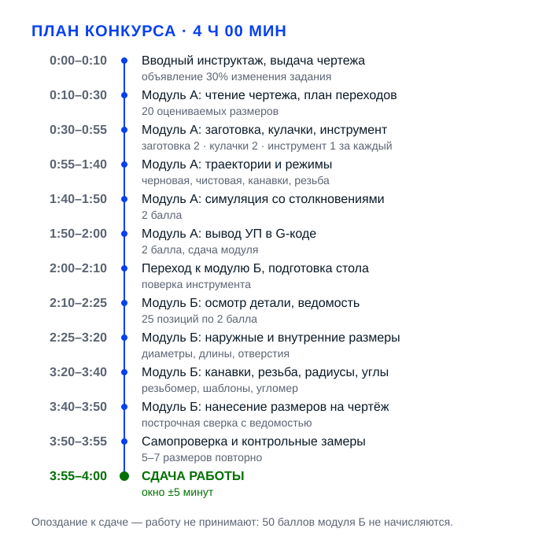
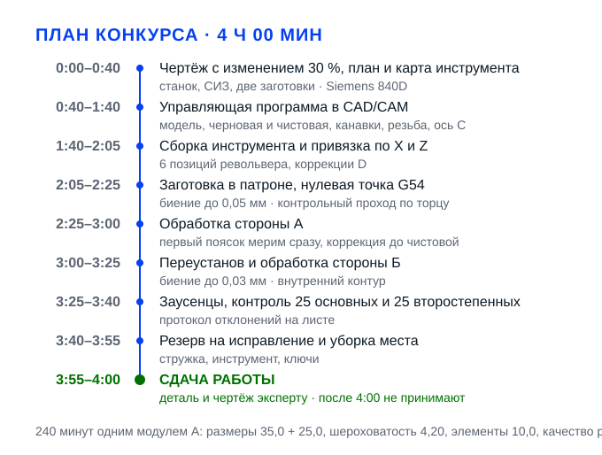
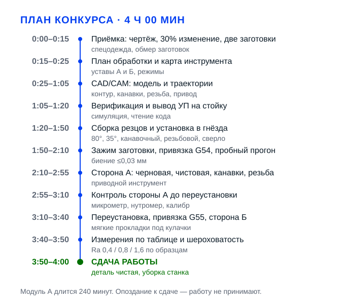

Токарные работы на станках с ЧПУ (Р)
Задания ниже — официальные файлы «Абилимпикс» (источник: abilympics-russia.ru), разложенные по категориям. Решения написаны по тексту задания, регламенту и критериям оценки; в них указано, что именно проверяет эксперт.
Школьник
14–16 лет, базовый уровень заданияВыдержка из официального конкурсного задания: страницы, относящиеся к категории «Школьник» (стр. 7–13 источника).
Пошаговое решение
Конкурсное задание категории «Школьники» состоит из двух равных модулей по 120 минут и по 50 баллов: в модуле А вы разрабатываете управляющую программу для токарной обработки детали в ПО CAD/CAM под систему ЧПУ Siemens 840D, в модуле Б измеряете тестовую деталь и проставляете результаты измерений на чертеже. Станок в вашей категории не запускается — обрабатывать деталь будут студенты и специалисты, — поэтому вся работа идёт на компьютере и на измерительном столе, а оценивают двадцать размеров в программе и двадцать пять размеров на чертеже, каждый по 2 балла. Помните про 30% изменение задания, которое вносят в день Д-2: часть номиналов будет отличаться от тренировочной, и обводить изменённые размеры нужно до старта. Ниже — пошаговый разбор обоих модулей: от чтения чертежа и создания заготовки с кулачками до вывода G-кода, измерения канавок и резьбы и оформления итогового чертежа.

Задача 1. Принять задание и разобрать чертёжМодуль А · 50 баллов
Модуль А длится 120 минут и стоит 50 баллов из 100, и начинается он не с мышки, а с чертежа. Пока вы не понимаете, где у детали база, какие двадцать размеров оценивают и в каком порядке снимается металл, любая траектория в CAD/CAM будет красивой картинкой без отношения к заданию. Поэтому первые двадцать минут уходят на разбор чертежа и письменный план переходов, а уже потом открывается модель. Отдельно учтите, что в день Д-2 эксперты вносят 30% изменение задания: часть номиналов на выданном чертеже будет отличаться от того, что вы тренировали.
Действие 1.1. Принять рабочее место и настроить программу
Шаг 1.1.1
Садимся за компьютер и первым делом убеждаемся, что станок в модуле А не участвует: вся работа идёт в ПО CAD/CAM, а станок стоит выключенным за пределами вашей зоны. Запускаем программу, ждём, пока прогрузится лицензия, и смотрим на строку состояния — там не должно быть предупреждений о пробной версии или ограничении числа сохранений. Затем открываем настройки единиц и ставим миллиметры, потому что часть сборок стартует в дюймах и даёт ошибку в 25,4 раза уже на первом построении.
Модуль А стоит 50 баллов, и набираются они за корректную модель обработки, а не за освоенный интерфейс. Если программа не запустилась сразу, десять минут придётся вычесть из 120 минут модуля, а время здесь не возвращают. Проверка единиц до первого эскиза — правило, которое спасает весь модуль: перепутанные единицы видны только на симуляции, когда переделывать уже поздно.
В заголовке проекта стоит «мм», сетка размечена шагом 10 мм, чертёж открыт и читается целиком. Убедитесь, что слева видно дерево построения: без него вы не вернётесь к заготовке и кулачкам, а они оцениваются отдельными баллами.
Самая частая ошибка — строить контур, не посмотрев на единицы: профиль получается в дюймах, и все двадцать размеров, которые оценивают по 2 балла, уезжают мимо. Вторая — работать в проекте, оставшемся от предыдущего участника, вместе с его нулевой точкой и чужими кулачками.
Эксперт проходит по местам в первые 10–15 минут и отмечает, запущено ли ПО и открыт ли именно ваш чертёж с номером участника; дальше он фиксирует время вывода первой управляющей программы.
Шаг 1.1.2
Создаём новый проект и сразу сохраняем его под именем, которое требует регламент: номер участника, компетенция, категория. Папку выбираем ту, которую указал технический эксперт, а не рабочий стол, потому что с рабочего стола работу могут не забрать при сдаче. Дальше включаем автосохранение с интервалом 5–10 минут и вручную нажимаем сохранение после каждого законченного перехода — привычка, которая стоит секунду и спасает часы.
Управляющая программа — это файл, и он существует только тогда, когда лежит на диске в правильном месте. Вывод УП в G-коде оценивают отдельно, 2 балла, и эксперт ищет файл по имени, а не спрашивает, где он. Потеря проекта из-за зависшей программы — единственная ошибка модуля, которую невозможно компенсировать качеством остальной работы.
Файл проекта лежит в указанной папке, имя собрано по шаблону, в свойствах видна дата последнего сохранения — она должна быть свежей. Проверьте, что автосохранение включено, а не просто доступно в меню.
Сохранить проект на рабочий стол или в «Документы» — при сдаче файл ищут в регламентной папке, и работа может уйти в ноль. Вторая ошибка — сохранить один раз в начале и держать всё в оперативной памяти до самого конца.
Эксперт проверяет наличие файла проекта и управляющей программы по имени в момент сдачи модуля, поэтому имя лучше выставить до первой операции. Имя файла он сверяет с номером участника.
Шаг 1.1.3
Берём у эксперта лист изменений конкурсного задания и сравниваем его с чертежом: в день Д-2 вносится 30% изменение, и это не формальность, а другие номиналы на части размеров. Проходим по каждому изменённому размеру и обводим его цветным карандашом на своём экземпляре чертежа, рядом записываем новое значение и ставим дату. Если что-то в листе непонятно, уточняем у главного эксперта до старта, а не в середине работы.
Изменение затрагивает примерно треть задания, и обычно это как раз те элементы, за которые дают баллы: диаметры ступеней, ширину канавки, шаг резьбы. Программа, построенная по старому чертежу, формально корректна, но все двадцать размеров модуля А окажутся не по заданию, то есть до 40 баллов из 50 теряются без единой технической ошибки.
Все изменённые размеры обведены и переписаны вашей рукой, число изменённых позиций совпадает с листом изменений. Проговорите про себя два-три новых номинала — если не можете вспомнить, значит, не разобрали.
Пролистать лист изменений глазами и решить, что «в целом понятно»: на чертеже остаются старые цифры, и рука сама вводит их в эскиз. Вторая ошибка — узнать об изменении от соседа уже после построения контура.
Эксперт объявляет изменения перед стартом и потом сверяет ваши размеры с изменённым чертежом; факт уточняющего вопроса фиксируется как нормальная рабочая коммуникация, а не как слабость.
Действие 1.2. Прочитать чертёж и выбрать базу
Шаг 1.2.1
Кладём чертёж перед собой и начинаем с общего: находим главный вид, проверяем, что деталь — тело вращения и на виде нет элементов, которые нельзя получить точением без приводного инструмента. Выписываем габариты: наибольший диаметр, общую длину, диаметр под зажим. Смотрим на основную надпись: материал заготовки, масштаб, шероховатость неуказанных поверхностей.
Габариты задают заготовку и патрон, а материал задаёт режимы резания: для стали 45 скорость резания держат около 180–220 м/мин, для алюминия её можно поднять вдвое. Если сразу не прочитать материал, режимы придётся пересчитывать после построения траекторий, а это потерянные 10–15 минут из 120.
Вы можете назвать вслух три числа — максимальный диаметр, длину, диаметр зажима — и материал. Масштаб на чертеже совпадает с проставленными размерами: если 100 мм нарисованы как 50, чертёж выполнен в масштабе уменьшения, и брать размеры линейкой нельзя.
Мерить чертёж линейкой и вводить «примерно»: масштаб 1:2 даёт ошибку вдвое, а на симуляции это выглядит как деталь в два раза меньше заготовки. Вторая ошибка — не посмотреть на материал и назначить режимы «как на тренировке».
Эксперт в первые минуты смотрит, читает ли участник чертёж или сразу щёлкает мышью; уверенное чтение видно по тому, как быстро появляется план переходов.
Шаг 1.2.2
Составляем таблицу оцениваемых размеров: в модуле А их двадцать, каждый стоит 2 балла, то есть 40 из 50. Выписываем в столбик номер, обозначение на чертеже, номинал и допуск, а на самом чертеже ставим против каждого размера точку маркером. Отдельно отмечаем размеры, которые на чертеже заданы координатами от базы, и размеры-цепочки, где номинал получается вычитанием.
Таблица превращает чертёж в проверяемый список: после построения вы сверяете не «похоже или нет», а двадцать конкретных чисел. Оценка идёт именно по этим позициям, и пропущенный размер — это гарантированные минус 2 балла, даже если остальная деталь безупречна.
В таблице двадцать строк, ни одна не пустая, номиналы совпадают с чертежом после изменений. Сумма размеров-цепочек сходится с общим размером — если не сходится, вы неверно прочитали базу. Если цепочка не сходится, ищите ошибку в прочтении базы, а не в арифметике.
Выписывать размеры «по ходу построения»: часть из них так и остаётся незамеченной, особенно фаски и радиусы, которые на чертеже вынесены в технические требования. Вторая ошибка — переписать номинал без допуска и потом спорить, что «на чертеже так».
Эксперт сверяет итоговую модель и программу именно с этими двадцатью позициями, поэтому аккуратная таблица читается как понимание задания. Отдельно он смотрит, отмечены ли на чертеже все двадцать позиций, а не только диаметры.
Шаг 1.2.3
Определяем базу и нулевую точку детали. Базой почти всегда служит правый торец, от которого проставлены линейные размеры, а ось вращения даёт нуль по X. Записываем это одной строкой: X0 — ось, Z0 — торец после подрезки, и дальше все координаты в программе считаем от этой точки. Проверяем, что на чертеже нет размеров, отсчитанных от левого торца, которые пришлось бы пересчитывать.
Нулевая точка детали — это то, что оператор выставит на станке как G54, и если в модели она стоит на другом торце, вся программа сместится на длину детали. Ошибка видна только при обработке, а в модуле А её проверяют на симуляции и по выводу координат в первых кадрах УП.
В модели ось Z идёт вдоль оси вращения, начало координат стоит на торце, а не в центре заготовки. Первый кадр программы подводит инструмент к точке с положительным X и Z около нуля, а не к середине детали.
Поставить ноль в центре заготовки «чтобы удобнее»: тогда все продольные размеры смещаются на половину длины, и деталь выходит зеркальной. Вторая ошибка — принять за базу левый торец, потому что он ближе к патрону.
Эксперт смотрит на положение системы координат в модели и на первые кадры программы: несовпадение нуля с G54 — типичная причина, по которой программу не засчитывают.
Действие 1.3. Составить план переходов и распределить время
Шаг 1.3.1
Пишем технологический план на листе: подрезка торца, черновое продольное точение наружного контура, чистовое точение, канавки, резьба, осевое отверстие, отрезка. Против каждого перехода ставим инструмент с его номером и режимы — глубину резания, подачу, скорость. Порядок жёсткий: сначала снимаем основной объём металла, потом делаем точные элементы, потому что канавка и резьба не терпят повторного чернового прохода.
План — это то, что оценивают как осмысленную структурированную последовательность, и одновременно ваша защита от суеты: в 120 минут влезает ровно один продуманный цикл, а не три попытки. Кроме того, каждый инструмент в модели стоит 1 балл, поэтому список инструментов нужно закрыть до построения траекторий, а не добирать по ходу.
В плане пять-семь переходов, у каждого есть инструмент и режимы, и ни один элемент чертежа не остался без перехода. Проверьте по таблице размеров: каждая строка должна попадать в какой-то переход. Пять переходов, у каждого свой инструмент, — минимальный набор для этой детали.
Планировать «по интуиции» и добавлять переходы на ходу: в модели появляются дублирующие траектории, симуляция показывает воздушные проходы, а время модуля кончается на середине. Вторая ошибка — поставить резьбу раньше чистового точения и потом сбить профиль.
Эксперт может попросить показать план и объяснить порядок переходов; связный ответ на этот вопрос относится к критерию осмысленности плана. Он может попросить назвать инструмент для канавки — это самый частый вопрос.
Шаг 1.3.2
Раскладываем 120 минут модуля по этапам и записываем окна прямо на плане: 20 минут на чтение чертежа и план, 25 минут на заготовку, кулачки и инструмент, 45 минут на траектории и режимы, 15 минут на симуляцию и правки, 15 минут на вывод программы и сдачу. Контрольные точки ставим так, чтобы к 60-й минуте в модели уже была черновая обработка, а к 100-й — готовая программа.
Без окон работа растягивается на самом приятном этапе — вылизывании траекторий, и на вывод УП времени не остаётся. Вывод управляющей программы в G-коде — отдельные 2 балла, а симуляция ещё 2; это четыре балла, которые теряют чаще всего просто потому, что не дошли до конца.
К 60-й минуте черновая обработка построена, к 100-й программа выведена. Если отстаёте больше чем на 10 минут, сокращайте не симуляцию, а глубину проработки второстепенных элементов. Отставание больше десяти минут на любом этапе — сигнал сокращать объём, а не темп.
Отводить на симуляцию «сколько получится»: именно она ловит зарезы и столкновения с кулачками, и без неё ошибка уходит в УП. Вторая ошибка — начинать с красивых фасок и радиусов, оставив черновую на последние минуты.
Эксперт фиксирует время вывода программы и наличие симуляции; в протоколе это отдельные аспекты с собственными баллами. Он также отмечает, совпадает ли фактическое время вывода программы с вашим планом.
Задача 2. Создать заготовку, кулачки и инструментМодуль А · до 6 баллов
В критериях модуля А отдельными строками стоят создание заготовки, создание кулачков и создание инструмента — по 2 балла за первые две позиции и по 1 баллу за каждый заведённый инструмент. Это самая дешёвая часть работы: она занимает около 25 минут из 120 и не требует ни одной сложной траектории, но именно её пропускают, когда сразу начинают рисовать контур детали. Разница принципиальная: без заготовки и кулачков симуляция показывает обработку в пустоте, а без инструмента с реальной геометрией резца невозможно проверить зарезы и подрез канавки.
Действие 2.1. Задать заготовку
Шаг 2.1.1
Берём наибольший диаметр детали по чертежу и прибавляем 4–6 мм на сторону: этот запас уйдёт в стружку при черновом точении, и без него чистовая траектория пойдёт по корке или по окалине. Длину заготовки считаем как длину детали плюс 10 мм: 3–5 мм на подрезку торца и 5–7 мм на зажим в кулачках. Вводим заготовку в модель как цилиндр, ось которого совпадает с осью Z.
Создание заготовки — 2 балла, и они ставятся за конкретную геометрию, а не за факт нажатия кнопки. Если диаметр взят «в ноль», симуляция показывает, что первый же проход режет воздух, а если длина равна длине детали, торец нечем подрезать и деталь не получает базу для отсчёта линейных размеров.
Диаметр заготовки больше максимального диаметра детали на 4–6 мм, длина больше на 10 мм. В дереве построения заготовка видна как отдельное тело, а не как эскиз, и её можно скрыть и показать. Диаметр и длина читаются в свойствах тела, а не на глаз по сетке.
Задать заготовку ровно по габаритам детали: чистовой проход снимает нулевой припуск, и на симуляции остаётся «необработанная» корка. Вторая ошибка — забыть про зажим и сделать заготовку короче, тогда деталь держится за 1–2 мм и кулачки попадают в зону резания.
Эксперт открывает дерево построения и смотрит диаметр и длину заготовки; это одна из первых проверок модуля А. Отдельно он смотрит, не задана ли заготовка эскизом: эскиз не участвует в симуляции.
Шаг 2.1.2
Ставим систему координат заготовки так, чтобы нуль лежал на правом торце и на оси вращения: Z0 — торец после подрезки, X0 — ось. Проверяем направление осей: Z положительная от детали к задней бабке, X — радиус, а не диаметр. Если в модели удобнее считать по диаметру, включаем соответствующий режим отображения, но в голове держим, что станок работает в радиусах.
Эта точка и есть G54, которую оператор выставит на станке. Совпадение модели и станочной привязки — условие, при котором программа вообще что-то обрабатывает; при расхождении инструмент уходит в деталь или в воздух, а на конкурсе это видно по первому кадру УП.
В строке координат при наведении на торец стоит Z=0, а при наведении на ось X=0. Первый кадр программы выводит инструмент на безопасный X и на Z около нуля, а не в середину детали. Проверьте это нажатием на торец и на ось, а не по надписи в углу экрана.
Поставить ноль в центре заготовки: все продольные координаты смещаются на половину длины, и деталь выходит зеркальной. Вторая ошибка — путать радиус и диаметр при вводе X, из-за чего контур строится вдвое больше.
Эксперт проверяет положение системы координат и первые кадры программы на совпадение с G54 — это часть оценки корректности УП. Если ноль стоит не на торце, он просит показать, от какой поверхности вы отсчитывали длины.
Шаг 2.1.3
Задаём припуск на чистовую обработку: 0,3–0,5 мм на сторону по контуру и 0,2 мм по торцу. Этот припуск вводится в параметры черновой стратегии, а не «на глаз» в эскиз, иначе он не отработается автоматически. Тут же выбираем материал заготовки из библиотеки — сталь конструкционная или алюминиевый сплав, — чтобы ПО подставило свои таблицы скоростей. Значение припуска сохраняем в шаблоне операции, чтобы оно перешло на все последующие проходы.
Припуск — это запас, который снимает чистовой проход и который определяет чистоту поверхности. Слишком малый припуск не убирает следы чернового прохода, слишком большой оставляет ступеньку на переходе. Материал в библиотеке влияет на расчёт скорости резания, а значит, на режимы, которые потом проверяют в симуляции.
В параметрах черновой операции стоит припуск 0,3–0,5 мм, а чистовой проход идёт по контуру с нулевым съёмом. На симуляции после черновой виден ровный слой металла по всему профилю, без пропусков. Если слой виден только на части контура, припуск задан неравномерно.
Оставить припуск по умолчанию, который в шаблоне равен 0: чистовая траектория совпадает с черновой, и на поверхности остаётся гребешок от чернового резца. Вторая ошибка — задать припуск 2 мм, который не снимется за один чистовой проход.
Эксперт смотрит на разницу между черновой и чистовой траекториями: наличие припуска видно по смещению линий в модели. Ему важно увидеть, что припуск задан параметром операции, а не заложен в эскиз вручную.
Действие 2.2. Создать кулачки патрона
Шаг 2.2.1
Выбираем трёхкулачковый патрон и задаём кулачки под диаметр заготовки: расточка кулачков равна диаметру заготовки, чтобы зажим был по всей длине контакта, а не по трём точкам. Вылет заготовки из кулачков ставим 25–30 мм: это примерно два-три диаметра, при которых деталь ещё не отжимается резцом. Если деталь длиннее, в модель добавляется задняя бабка с центром.
Создание кулачков — 2 балла, и они нужны не для красоты: симуляция с проверкой столкновений сравнивает траекторию именно с телами кулачков. При вылете больше трёх диаметров деталь при точении начинает «играть», поверхность получается с огранкой, а на конкурсе это читается как непонимание процесса.
Кулачки видны в модели, их внутренний радиус равен радиусу заготовки, заготовка выступает из них на 25–30 мм. Проверьте зазор между торцом кулачков и началом обрабатываемого контура — он должен быть не меньше 3–5 мм.
Оставить кулачки по умолчанию, с диаметром от предыдущей задачи: заготовка в них не помещается, симуляция выдаёт столкновение, а модель формально «сходится». Вторая ошибка — зажать деталь за 5 мм, чтобы показать больше обработанной поверхности.
Эксперт проверяет наличие кулачков и их соответствие диаметру заготовки при просмотре дерева построения и результатов симуляции. Он проверяет и вылет заготовки: при вылете больше трёх диаметров модель считается неверной.
Шаг 2.2.2
Задаём положение кулачков по Z: торец кулачков должен отстоять от правого торца заготовки на длину зажима, то есть на 5–7 мм. В параметрах зажима указываем зону, в которой кулачки держат заготовку, и проверяем, что траектория резца в неё не заходит. Если в ПО есть режим автоматической проверки зажима, включаем его до построения траекторий, а не после.
Кулачки — это физическое препятствие, и резец, дошедший до них, ломается вместе с пластиной и портит патрон. В модели это ловится бесплатно, на станке — заменой инструмента и потерей времени, которого в модуле всего 120 минут. Кроме того, корректная зона зажима показывает, что участник понимает, как деталь удерживается.
При симуляции ни одна траектория не пересекает тела кулачков, а резец в крайней точке имеет зазор до них. Проверьте самый глубокий продольный проход — обычно именно он подходит к кулачкам ближе всего.
Поставить кулачки вплотную к торцу детали: первый же проход по торцу упирается в них, и симуляция останавливается со столкновением. Вторая ошибка — не включать проверку столкновений и узнать о проблеме только на просмотре результатов.
Эксперт запускает симуляцию со столкновениями и смотрит, доходит ли инструмент до кулачков; это быстрый и наглядный тест качества модели. Он также смотрит, включена ли эта проверка до построения траекторий, а не после.
Шаг 2.2.3
Проверяем модель на согласованность: заготовка сидит в кулачках без зазора и без натяга, ось заготовки совпадает с осью патрона, а нуль детали стоит на торце, который будет подрезан первым. Если в ПО есть сборка «патрон — заготовка — деталь», прогоняем её и смотрим, чтобы контур детали целиком лежал внутри заготовки с припуском. Если сборка не сходится, правим заготовку, а не контур детали.
Любое несовпадение осей в модели превращается в биение на станке, а биение съедает допуск: при радиальном смещении 0,2 мм диаметр получается овальным. Проверка сборки занимает две минуты и закрывает сразу три оцениваемые позиции — заготовку, кулачки и корректность построения.
Контур детали полностью внутри заготовки, припуск виден по всему профилю, оси совпадают. Вращение модели вокруг оси не показывает «выступающих» частей детали за пределами заготовки. Проверьте это поворотом модели на 90 градусов вокруг оси.
Строить деталь от отдельного эскиза, не привязанного к заготовке: контур оказывается смещён, и часть профиля выходит за тело заготовки. Вторая ошибка — не проверить, что деталь влезает в заготовку по длине.
Эксперт оценивает сборку визуально: заготовка, кулачки и деталь должны читаться как одна технологическая система. Он смотрит на зазор между торцом кулачков и началом контура — он должен быть виден.
Действие 2.3. Завести режущий инструмент
Шаг 2.3.1
Заводим черновой проходной резец: державка 25×25 мм, пластина с радиусом при вершине 0,8 мм, главный угол в плане 95 градусов, вылет из оправки 30 мм. В библиотеке инструмента выбираем тип «наружный проходной» и указываем геометрию пластины, а не только её габарит: от радиуса зависит расчёт гребешка и возможность вписаться в галтель. Присваиваем инструменту номер T1 и коррекцию D1.
Создание инструмента оценивают по 1 баллу за каждый, максимум 2 балла, но реальная цена выше: без геометрии резца симуляция не покажет зарез ножки профиля и не посчитает остаточные гребешки. Радиус 0,8 мм — стандартный выбор для черновой, он держит глубину 1,5–2 мм без вибрации.
В списке инструментов есть позиция с номером T1, типом «наружный проходной», радиусом 0,8 мм и вылетом 30 мм. Инструмент виден в модели и участвует хотя бы в одной операции. Проверьте это в списке инструментов, а не в дереве операций.
Завести инструмент «условным прямоугольником» без геометрии пластины: симуляция не поймает зарез, а на станке резец с радиусом 0,8 не входит в канавку шириной 3 мм. Вторая ошибка — оставить вылет 60 мм, который даёт вибрацию.
Эксперт открывает список инструментов и сверяет типы и номера; дублирующиеся номера T считаются ошибкой. Он также смотрит, совпадает ли радиус пластины с тем, что указан в плане переходов.
Шаг 2.3.2
Заводим чистовой проходной резец с радиусом при вершине 0,4 мм: он нужен для галтелей, фасок и той шероховатости, которая указана на чертеже. Вылет оставляем 25–30 мм, угол в плане 93–95 градусов, чтобы резец доходил до уступа без задевания обработанной поверхности. Номер T2, коррекция D1, тип «наружный чистовой». Если в библиотеке нет готового профиля, задаём радиус вручную.
Малый радиус даёт более чистую поверхность и точнее прописывает радиусы скруглений, которые на чертеже обычно 1–2 мм. Если чистовой проход выполнить черновым резцом с радиусом 0,8, галтель R1 физически не получится: резец просто не впишется в кривизну.
В списке есть T2 с радиусом 0,4 мм, он назначен на чистовую операцию и проходит по всему контуру, включая фаски и радиусы. На симуляции после чистовой на профиле нет ступенек в местах сопряжений. Проверьте это на увеличенном фрагменте галтели.
Выполнить чистовой проход тем же резцом, что и черновой, «чтобы не тратить время»: радиусы получаются больше номинала, а шероховатость хуже заданной. Вторая ошибка — завести чистовой резец, но не назначить его ни на одну операцию.
Эксперт смотрит, различаются ли черновой и чистовой инструменты и назначены ли они на соответствующие операции. Ему важно, чтобы чистовой резец был выбран осознанно, а не «первый из списка».
Шаг 2.3.3
Заводим канавочный резец шириной 3 мм и резьбовой резец с профилем под шаг, указанный на чертеже. У канавочного задаём ширину пластины и радиусы дна, у резьбового — шаг, угол профиля 60 градусов и число проходов по умолчанию. Номера T3 и T4, коррекции D1, вылет не более 20 мм, потому что канавочный резец работает на врезание и длинный вылет здесь особенно опасен.
Канавка и резьба — элементы с жёсткими размерами: ширину канавки и шаг резьбы проверяют отдельно, и оба размера входят в те двадцать позиций, которые стоят по 2 балла. Инструмент с неверной шириной пластины программно не даст нужную канавку: она выйдет либо уже, либо с рваными стенками.
Ширина пластины канавочного резца совпадает с шириной канавки на чертеже или меньше её, шаг резьбового резца равен шагу резьбы. Оба инструмента назначены на свои операции и видны в симуляции. Проверьте это по кадрам симуляции на самой канавке.
Завести канавочный резец шириной больше канавки: он физически не войдёт в неё, а симуляция покажет зарез соседних поверхностей. Вторая ошибка — взять резьбовой резец с шагом «на глаз», тогда профиль не совпадёт с резьбомером.
Эксперт сверяет ширину канавочного резца и шаг резьбового с чертежом; несовпадение видно сразу по списку инструментов. Он может попросить объяснить, почему выбрана именно такая ширина пластины.
Шаг 2.3.4
Добавляем осевой инструмент, если на чертеже есть отверстие или центровое отверстие: сверло нужного диаметра, при необходимости центровочное сверло. Заводим его как осевой инструмент с номером T5, указываем длину рабочей части и диаметр. После этого проходим по списку инструментов и сверяем его с планом переходов: каждый переход должен иметь свой инструмент, и ни один инструмент не должен остаться без операции.
Инструмент, который используется в программе, но не заведён в модель, даёт ошибку постпроцессора или пустой номер T в кадре. Инструмент, который заведён, но нигде не назначен, выглядит как формальность и балла не приносит: оценивают именно создание инструмента для работы.
Число инструментов в списке равно числу переходов в плане, у каждого есть номер T, тип и назначенная операция. Постпроцессор не выдаёт предупреждений о неизвестном инструменте. Проверьте это после вывода программы, до её сдачи.
Завести «запасной» инструмент на всякий случай и не использовать его: в списке появляются лишние позиции, а в программе — пустые вызовы. Вторая ошибка — использовать в траектории инструмент, которого нет в библиотеке.
Эксперт проверяет соответствие списка инструментов и вызовов в программе; это замыкает оценку по инструменту. Он смотрит и на то, чтобы номера T в программе шли по возрастанию, без повторов.
Задача 3. Запрограммировать обработку и вывести программуМодуль А · 20 размеров + симуляция и вывод
Основная часть модуля А: построить траектории так, чтобы каждый из двадцати оцениваемых размеров оказался в программе, а не только на картинке. Каждый размер стоит 2 балла, то есть 40 из 50 баллов модуля, и проверяют их по управляющей программе и результатам симуляции. Отдельно оценивают саму симуляцию и вывод программы в G-коде — по 2 балла. На этот этап в плане отведено 45 минут и 15 минут на проверку, и это самый плотный участок из 120 минут модуля.
Действие 3.1. Запрограммировать наружный контур
Шаг 3.1.1
Строим профиль детали по чертежу: половину контура от оси вращения, с фасками, уступами и радиусами, и замыкаем его по оси. Каждый элемент вводим числом из таблицы размеров, а не «на глаз» по картинке: 32, 28, 24 по диаметрам, 40 и 25 по длинам, фаски 1×45 и 2×45, галтели R1 и R2. После построения прогоняем проверку эскиза на незамкнутые контуры и на совпадение размеров с таблицей.
Контур — это единственное место, где живут все двадцать размеров сразу. Ошибка в одном числе не «портит вид», она переносит весь профиль, и вместе с ним уходят баллы за соседние размеры. Замкнутость контура обязательна: на незамкнутом профиле стратегия точения либо не строится, либо строит траекторию с разрывом.
Контур замкнут, число элементов совпадает с чертежом, все размеры в эскизе — управляемые, а не «справочные». Сумма длин ступеней равна общей длине, сумма диаметров соответствует перепадам профиля. Проверьте это инструментом измерения эскиза, а не на глаз.
Рисовать профиль сплайном «похоже на чертёж»: сплайн не даёт нужного диаметра в конкретной точке, и размеры уезжают на десятые доли, которых достаточно для минус 2 баллов. Вторая ошибка — не замкнуть контур на ось, из-за чего чистовой проход оставляет недорезанный торец.
Эксперт открывает эскиз и сверяет несколько размеров с чертежом; управляемость размеров видна по дереву эскиза. Он также смотрит, не осталось ли в эскизе справочных размеров, которые нельзя изменить.
Шаг 3.1.2
Строим черновую обработку наружного контура: стратегия продольного точения, глубина резания 1,5–2 мм на проход, припуск на чистовую 0,3–0,5 мм, направление — от торца к патрону. Включаем обработку торца отдельным переходом с врезанием 0,5 мм и перебегом за ось, чтобы торец получился плоским и стал базой. Проверяем, что черновая не заходит в зону кулачков и не пытается обработать канавку.
Черновая снимает основной объём металла, и от неё зависит, хватит ли чистовому проходу материала на ровный слой. Слишком большая глубина даёт вибрацию и огранку, слишком малая — лишние проходы и время. Обработка торца обязательна: от него отсчитываются все продольные размеры, и без подрезки базы нет.
На симуляции после черновой виден равномерный слой припуска по всему контуру, торец обработан начисто, уступы не «зализаны». Число проходов соответствует снятию 4–6 мм с диаметра при глубине 1,5–2 мм.
Задать глубину 4 мм «чтобы быстрее»: на симуляции всё гладко, а на станке резец с радиусом 0,8 не выдерживает и оставляет следы вибрации. Вторая ошибка — не обработать торец и потом отсчитывать длины от черной поверхности.
Эксперт смотрит траекторию черновой на предмет равномерности и отсутствия воздушных проходов. Он отдельно отмечает, есть ли в черновой обработке торец: без него база не обработана.
Шаг 3.1.3
Строим чистовой проход по всему контуру одним движением: подача 0,1–0,15 мм/об, скорость резания 180–220 м/мин для стали, съём — оставленный припуск. Включаем обработку фасок и галтелей тем же проходом, без остановок на уступах, и проверяем, что направление движения совпадает с направлением выхода резца из уступа. Для глухих уступов добавляем заход 0,5 мм под углом 45 градусов.
Чистовой проход формирует те самые размеры, которые измеряют, и ту шероховатость, которая указана на чертеже. Один непрерывный проход даёт равномерную поверхность, а проход с остановками оставляет следы в местах смены подачи. Скорость 180–220 м/мин для конструкционной стали — режим, при котором пластина работает устойчиво.
На симуляции чистовой проход идёт по контуру без «зависаний», радиусы совпадают с чертежом, на поверхности нет ступенек. Подача и скорость в кадре соответствуют заданным. Проверьте это в свойствах операции, а не по внешнему виду траектории.
Пустить чистовой с подачей 0,4 мм/об: поверхность получается с явными гребешками, и её видно на симуляции как «рябь». Вторая ошибка — оставить черновой припуск и вести чистовой в два прохода, теряя время.
Эксперт проверяет назначенные подачу и скорость, а также то, что чистовой проход охватывает все поверхности контура. Он смотрит, идёт ли чистовой проход одним движением, без разрывов на уступах.
Шаг 3.1.4
Отдельно проверяем подрезку торца и фаски: торец должен быть обработан до оси с перебегом 1–2 мм, фаска на входе — по чертежу, обычно 1×45 или 2×45 градусов. Ставим фаску первым движением чистового прохода, чтобы она не срезалась последующими проходами. Убеждаемся, что после подрезки торца нуль по Z остаётся на обработанной поверхности. Перебег за ось задаём в параметрах операции, а не координатой вручную.
Торец — база для всех продольных размеров, и если он не подрезан, то первый же линейный размер уходит на величину чернового слоя, обычно 2–3 мм. Фаска на входе нужна и по чертежу, и технологически: без неё резец при выходе на диаметр оставляет заусенец.
Торец обработан по всей плоскости до оси, фаска читается на профиле и имеет заданный угол, нуль по Z стоит на обработанном торце. На симуляции торец выглядит ровным диском без концентрических следов от чернового прохода.
Оставить торец черновым и проставить размеры от него: все длины смещаются на снятый слой. Вторая ошибка — сделать фаску до чистового прохода, после которого от неё остаётся половина. Третья ошибка — не проверить, что торец обработан до самой оси.
Эксперт смотрит на торец как на базу и на наличие фасок в модели и в программе. Он проверяет, обработан ли торец до оси и совпадает ли нуль по Z с обработанной поверхностью, потому что от этого зависит каждый продольный размер.
Действие 3.2. Запрограммировать канавки, резьбу и отверстия
Шаг 3.2.1
Строим канавку циклом канавочной обработки: указываем диаметр дна, ширину, радиусы дна R0,5 и положение от базы. Врезание ведём перпендикулярно оси с подачей 0,05–0,08 мм/об, вывод инструмента — под углом с ускоренной подачей и перебегом 0,2 мм по дну. Если ширина канавки больше ширины пластины, добавляем второй врез со смещением на 2,5–3 мм, а не расширяем канавку «за один заход».
Канавка — самый частый источник брака: узкий резец с длинным вылетом ломается при врезании с большой подачей, а без перебега по дну остаётся недорисованный радиус. Ширина канавки и диаметр дна входят в число двадцати оцениваемых размеров, то есть стоят до 4 баллов вместе.
Диаметр дна и ширина канавки в модели совпадают с чертежом, дно имеет радиусы, стенки вертикальные. На симуляции резец выходит из канавки без задевания стенки. Проверьте это на увеличенном фрагменте канавки, а не на общем виде.
Врезаться в канавку с подачей 0,2 мм/об: на симуляции всё проходит, а на станке пластина скалывается, и канавка получается рваной. Вторая ошибка — сделать канавку шире номинала на 0,5 мм, чтобы «наверняка попасть в допуск».
Эксперт проверяет положение канавки от базы и её ширину; несовпадение с чертежом видно на симуляции сразу. Он также смотрит, не расширена ли канавка «на всякий случай» сверх номинала.
Шаг 3.2.2
Задаём резьбу циклом резьбонарезания: номинальный диаметр, шаг, длину резьбы, заход и выход инструмента. Число проходов 5–7, первый снимает 0,4 мм, последние — по 0,05–0,1 мм, заключительный проход делаем без поперечной подачи, «пружинный». Угол врезания оставляем 60 градусов, чтобы стружка уходила в одну сторону, а не в обе. Первый проход делаем с уменьшенной скоростью, чтобы резец вошёл в металл без удара.
Шаг резьбы проверяют резьбомером, и он входит в оцениваемые размеры. Распределение съёма по проходам — условие целого профиля: если снять всё за два прохода, витки получаются с задирами и рваными вершинами. Пружинный проход убирает упругую деформацию системы и делает диаметр стабильным.
В программе видны все проходы с уменьшающимся съёмом, длина резьбы соответствует чертежу, выход инструмента в канавку или за деталь. На симуляции профиль резьбы читается как равномерная спираль без пропусков.
Нарезать резьбу за два прохода: профиль получается неполным, и резьбомер не садится. Вторая ошибка — не оставить выхода резца, тогда на последнем витке остаётся срыв. Третья ошибка — задать длину резьбы до конца детали, без выхода в канавку.
Эксперт сверяет шаг и длину резьбы с чертежом, а также смотрит, есть ли в цикле распределение проходов. Он проверяет, что длина резьбы отсчитана от торца, а не от начала витков.
Шаг 3.2.3
Если на чертеже есть осевое отверстие, строим его после наружной обработки: сначала центровочное сверло на глубину 3–4 мм, затем сверло нужного диаметра с подачей 0,1–0,15 мм/об и выводом стружки. Глубину задаём с учётом конуса сверла — к номинальной глубине прибавляем примерно треть диаметра. Скорость для сверла берём вдвое ниже, чем для резца, и включаем подачу СОЖ.
Отверстие сверлится в уже обработанной детали, поэтому его положение и диаметр проверяют отдельно. Без центровочного отверстия сверло уводит в сторону, и ось отверстия смещается на 0,2–0,5 мм, что для оцениваемого размера критично. Учёт конуса обязателен: иначе глубина окажется меньше номинала на треть диаметра.
Ось отверстия совпадает с осью детали, диаметр и глубина соответствуют чертежу с учётом конуса. На симуляции видно два инструмента — центровочный и сверло, — и оба доходят до заданной глубины. Проверьте это по траектории, а не по подписи операции.
Сверлить без центровки: сверло уводит, и отверстие выходит не по оси. Вторая ошибка — задать глубину по вершине конуса и получить недомер на 2–3 мм. Третья ошибка — сверлить без вывода стружки, из-за чего сверло забивается и ломается.
Эксперт проверяет наличие центровочного перехода и глубину отверстия по программе и симуляции. Он также смотрит, задана ли подача СОЖ и снижена ли скорость для сверла по сравнению с резцом.
Шаг 3.2.4
Проверяем все сопряжения профиля: радиусы R1 и R2 должны переходить в прямые участки без ступеньки, фаски — начинаться точно на диаметре. Включаем в стратегии опцию обработки углов «по дуге», а не «по точке», и смотрим, чтобы резец не оставлял необработанный гребешок в углу. Если в углу остаётся материал, добавляем короткий дополнительный проход или меняем радиус пластины на меньший.
Сопряжения — то, что отличает аккуратную деталь от «почти похожей»: ступенька в углу читается как дефект и снимает балл за соответствующий размер. Геометрия резца с радиусом 0,8 мм физически не может обработать внутренний угол меньше этого радиуса, поэтому в модели нужно заранее видеть, где останется гребешок.
На симуляции в местах сопряжений нет светлых пятен остаточного материала, радиусы плавно переходят в прямые. Увеличение масштаба в углу уступа не показывает «полку» из металла. Проверьте это на увеличении в каждом углу профиля.
Оставить углы «как получится»: в углу уступа остаётся гребешок величиной с радиус пластины, и размер по этому уступу уходит. Вторая ошибка — поставить радиус скругления 0,5 мм, который резец 0,8 мм не выполнит.
Эксперт увеличивает углы на симуляции и смотрит остаточный материал — это быстрый способ увидеть качество проработки профиля. Он смотрит и на то, совпадает ли радиус пластины с наименьшим радиусом скругления.
Действие 3.3. Назначить режимы и привязку
Шаг 3.3.1
Считаем частоту вращения по формуле: обороты равны тысяче, умноженной на скорость резания и делённой на число пи и диаметр. Для диаметра 30 мм и скорости 200 м/мин получается около 2100 об/мин, для диаметра 60 мм — около 1060. В программе включаем постоянную скорость резания G96 с ограничением максимальных оборотов LIMS=2500 и подачу в миллиметрах на оборот G95, чтобы подача не менялась при изменении диаметра.
Постоянная скорость резания даёт одинаковую нагрузку на пластину при обработке разных диаметров, а ограничение оборотов защищает патрон и кулачки. Подача в мм/об — единственный способ гарантировать шероховатость, потому что мм/мин при разных оборотах даёт разный гребешок. Ошибка в режимах видна на симуляции как заведомо нереальные обороты.
В кадрах программы стоят G96 и LIMS, подача задана через G95, обороты для каждого диаметра попадают в диапазон 800–2500. Значения не превышают паспортных для станка. Проверьте это в первых кадрах выведенной программы.
Оставить G97 с фиксированными оборотами: при переходе на малый диаметр скорость резания падает втрое, и поверхность получается хуже. Вторая ошибка — не поставить LIMS, и на малом диаметре станок выходит на запредельные обороты.
Эксперт проверяет первые кадры программы и наличие ограничения оборотов; это часть оценки корректности УП. Он может попросить назвать обороты для конкретного диаметра — это проверка понимания формулы.
Шаг 3.3.2
Прописываем привязку и вызов инструмента: в начале программы G54 как нулевая точка детали, затем G0 на безопасную позицию, вызов T="ROUGH" D1 или T1 D1, включение шпинделя M3 и подачи СОЖ M8. Перед сменой инструмента обязательно отводим резец на безопасное расстояние по X и Z, обычно 5–10 мм от заготовки, и только потом командуем следующую позицию.
Привязка к G54 связывает программу с реальной деталью на станке; без неё координаты программы не имеют смысла. Отвод перед сменой инструмента — правило безопасности: револьвер поворачивается по дуге и задевает деталь, если резец остался рядом. На конкурсе это ещё и остановка модуля, которую не компенсировать.
В первых кадрах стоят G54, безопасная позиция, вызов инструмента с коррекцией, M3 и M8. Между переходами резец отходит на расстояние не меньше 5 мм по обеим осям. Проверьте это по кадрам, а не по траектории на экране.
Начать программу сразу с рабочей подачи без подвода: первый кадр уходит в деталь на ускоренной подаче. Вторая ошибка — менять инструмент, не отведя резец, и получить столкновение револьвера с заготовкой.
Эксперт читает первые двадцать кадров программы; наличие G54, безопасной позиции и корректных вызовов инструмента он отмечает отдельно. Он также смотрит, совпадает ли номер инструмента в модели и в программе.
Шаг 3.3.3
Проверяем конец программы и холостые перемещения: после последнего прохода инструмент отводится по X и Z, шпиндель останавливается M5, СОЖ выключается M9, программа завершается M30 и возвращается в начало. Все ускоренные перемещения G0 проходят на расстоянии не меньше 2 мм от обработанной поверхности, а точка смены инструмента вынесена за габарит детали.
Корректное завершение программы — это отсутствие «зависшего» инструмента в детали и возможность снять деталь без риска. Холостые переходы по обработанной поверхности оставляют царапины, которые видны на финишной поверхности и снижают оценку. M30 в конце обязателен: без него станок остаётся в последнем кадре.
Последние кадры содержат отвод, M5, M9 и M30, а траектории G0 не пересекают обработанный профиль. На симуляции в конце инструмент стоит в стороне от детали. Проверьте это, открыв последние двадцать кадров файла.
Закончить программу на рабочем кадре без отвода: при съёме детали резец остаётся в канавке. Вторая ошибка — гонять G0 через уже обработанный диаметр и оставить продольные царапины. Третья ошибка — не выключить СОЖ перед сменой инструмента.
Эксперт смотрит конец программы и траектории ускоренных перемещений; это финальная проверка корректности УП. Он также смотрит, возвращается ли программа в начало, чтобы её можно было запустить повторно.
Действие 3.4. Проверить симуляцией и вывести G-код
Шаг 3.4.1
Запускаем полную симуляцию обработки с включённой проверкой столкновений и с отображением заготовки, кулачков и патрона. Скорость ставим среднюю, чтобы видеть каждый переход, и следим за тремя вещами: не остаётся ли материал в углах, не пересекает ли инструмент кулачки, нет ли проходов по воздуху. Симуляцию гоняем от первого кадра до M30, а не по отдельным операциям.
Симуляция — единственный бесплатный способ увидеть зарез и столкновение до станка, и она оценивается отдельными 2 баллами. Проверка по операциям пропускает ошибки на переходах между операциями: именно там чаще всего оказывается, что чистовой резец идёт через необработанный участок.
Симуляция проходит до конца без красных сообщений о столкновениях, на модели нет участков с явным остаточным материалом, кулачки целы. Время цикла, которое показывает ПО, выглядит реалистичным для четырёх-пяти переходов.
Проверять только последнюю операцию: ошибка в черновой остаётся незамеченной. Вторая ошибка — отключить проверку столкновений, потому что она «тормозит». Третья ошибка — не поставить в симуляцию патрон, из-за чего столкновение с кулачками не видно.
Эксперт смотрит сам факт запуска полной симуляции и её результат; наличие проверки столкновений видно по настройкам. Он может попросить показать результат симуляции на конкретном переходе.
Шаг 3.4.2
Разбираем результат симуляции по пунктам: остаточный материал в углах, недорезы на торце, следы инструмента на уже обработанной поверхности. Если виден гребешок в углу, добавляем проход или меняем радиус пластины; если остался слой на торце, правим глубину подрезки. Каждую правку проверяем повторной симуляцией только изменённого участка, чтобы не гонять всю программу заново.
Симуляция показывает не «красиво или нет», а конкретные дефекты, которые на станке превратятся в несоответствие размера. Остаточный материал в углу — это минус балл за размер, а след инструмента на обработанной поверхности — минус за качество. Точечные правки экономят время: полная симуляция занимает минуты, участок — секунды.
После правки дефект на симуляции исчез, а остальные участки не изменились. Число проходов и время цикла остались в разумных пределах, не выросли вдвое из-за лишних проходов. Проверьте это по счётчику времени, который показывает сама симуляция.
Править программу «на глаз», не перепроверяя: правка в одном месте ломает другой участок, и дефект возвращается. Вторая ошибка — гонять полную симуляцию после каждой мелкой правки и терять по пять минут.
Эксперт может спросить, что именно вы исправили после симуляции; внятный ответ подтверждает осмысленность работы. Он смотрит, меняется ли программа после симуляции или участник просто её прогоняет.
Шаг 3.4.3
Выбираем постпроцессор Siemens 840D и выводим программу в G-код. Проверяем формат кадров: номера N, адреса G, X, Z, F, S, вызовы инструмента T с коррекцией D, наличие циклов CYCLE95, CYCLE93, CYCLE99 или их развёрнутого вида. Смотрим, что координаты выводятся в тех же единицах и что в шапке есть имя программы и дата. Если в шапке нет постпроцессора, выбираем его вручную и выводим заново.
Вывод управляющей программы — отдельные 2 балла, и оценивают именно формат: программа должна читаться стойкой Siemens 840D без ручной правки. Неверный постпроцессор выдаёт кадры с адресами другого производителя, и такая программа не запускается вообще, сколько бы баллов ни было набрано за модель.
Файл открывается текстовым редактором, кадры пронумерованы, в шапке виден постпроцессор Siemens, в теле есть вызовы инструмента с коррекцией и знакомые циклы. Нет кадров с незнакомыми адресами и пустых строк вместо координат.
Вывести программу постпроцессором «по умолчанию», который стоял в системе: получаются кадры с чужими циклами, и стойка их не примет. Вторая ошибка — не проверить шапку файла и сдать программу без имени.
Эксперт открывает файл УП и смотрит шапку и несколько кадров; формат проверяется быстро и однозначно. Он также смотрит, нет ли в кадрах пустых адресов, которые стойка воспримет как нули.
Шаг 3.4.4
Сохраняем программу в требуемом формате и под правильным именем: номер участника, компетенция, модуль. Кладём файл в регламентную папку, а не на рабочий стол, и проверяем, что он открывается заново после сохранения. Рядом оставляем файл проекта, чтобы эксперт при необходимости мог посмотреть модель. Перед сдачей ещё раз сверяем имя и расширение с требованием технического эксперта.
Сданная программа — это файл, который эксперт откроет после конкурса, и он должен найти его без вашей подсказки. Проверка открытия после сохранения ловит редкий, но обидный случай, когда файл записался с нулевой длиной. Файл проекта рядом нужен для подтверждения симуляции и модели.
Файл УП лежит в регламентной папке, открывается, содержит полный текст программы от шапки до M30, имя совпадает с требованием. Рядом лежит файл проекта, тоже открывающийся. Проверьте это, закрыв и открыв файл заново.
Сохранить программу в формате PDF или картинкой: стойка такой файл не читает, а 2 балла за вывод теряются. Вторая ошибка — сдать файл с именем «программа1», которое эксперт не свяжет с участником. Третья ошибка — сохранить файл в папку, которую потом не найти.
Эксперт принимает модуль А по наличию файла УП в нужном месте; это последняя точка контроля перед модулем Б. Он также смотрит, совпадает ли имя файла с номером участника в протоколе.
Задача 4. Измерить тестовую детальМодуль Б · 50 баллов
Второй модуль длится 120 минут и стоит столько же, сколько первый: 50 баллов из 100. Здесь не нужно ничего программировать — нужно измерить тестовую деталь и проставить результаты на чертеже. Оценивают двадцать пять размеров, каждый по 2 балла, и это ровно те позиции, которые отмечены на выданном чертеже. Главная особенность модуля в том, что балл даёт не «примерно верное» значение, а совпадение с эталоном в пределах допуска, поэтому половина успеха — это правильно выбранный инструмент и его поверка перед первым измерением.
Действие 4.1. Подготовить деталь и измерительный инструмент
Шаг 4.1.1
Получаем тестовую деталь, чертёж с пропущенными значениями и набор измерительного инструмента. Осматриваем деталь: протираем от масла ветошью, убираем стружку из канавок и отверстий, проверяем, нет ли заусенцев на кромках, потому что заусенец добавляет к диаметру 0,1–0,2 мм. Кладём деталь на чистую подкладку и даём ей полежать 10–15 минут рядом с рабочим местом, чтобы температура сравнялась с комнатной.
Измерение по горячей или замасленной детали даёт систематическую ошибку: стальная деталь длиной 100 мм при нагреве на 10 градусов удлиняется примерно на 0,012 мм, а масляная плёнка добавляет к диаметру сотые. Каждый из двадцати пяти размеров стоит 2 балла, и систематический сдвиг на 0,05 мм способен снять баллы сразу с половины позиций.
Деталь сухая, чистая, без стружки в канавках, кромки без заусенцев. На ощупь деталь не теплее руки, конденсата на ней нет. Инструмент лежит на чистой салфетке, а не на верстаке рядом со стружкой. Проверьте это на канавке и в отверстии, где стружка держится крепче всего.
Начать измерять сразу после получения, не обтерев деталь: масло и стружка дают разброс в сотые, а на канавке стружка просто мешает губкам сомкнуться. Вторая ошибка — измерять деталь, которую только что держали в руке или принесли из тёплого помещения.
Эксперт в начале модуля смотрит, как подготовлена деталь и рабочий стол; грязная деталь с заусенцами сразу читается как небрежность. Он также смотрит, лежит ли деталь на подкладке, а не на голом металле верстака.
Шаг 4.1.2
Проверяем инструмент до первого измерения. Штангенциркуль сводим губки до упора и смотрим на нуль: стрелка или нониус должны стоять на нуле, а губки — смыкаться без просвета на просвет. Микрометр ставим на установочную меру и проверяем нуль, затем проверяем трещотку — она должна прокручиваться с тремя щелчками при достижении усилия. Индикаторный нутромер показываем на установочном кольце.
Непроверенный инструмент — это не «мелкая неисправность», а сдвиг всех измерений на постоянную величину. Штангенциркуль с изношенными губками даёт занижение на 0,05–0,1 мм на каждом диаметре, и двадцать пять размеров уезжают одновременно. Поверка занимает три минуты из 120 и защищает все 50 баллов модуля.
На сведённых губках нуль совпадает, просвета на просвет нет, микрометр на мере показывает 0,00, трещотка щёлкает. Если нуль сбит — инструмент откладываем и берём другой, а не «учитываем поправку в уме».
Проверить только штангенциркуль и не тронуть микрометр: микрометр с сбитым нулём даёт ошибку 0,01–0,02 мм, которой достаточно для выхода из допуска. Вторая ошибка — крутить микрометр за барабан, а не за трещотку, и пережимать деталь.
Эксперт наблюдает за поверкой инструмента в первые минуты модуля; это один из аспектов оценки измерительных навыков. Он также смотрит, пользуется ли участник трещоткой микрометра или крутит за барабан.
Шаг 4.1.3
Составляем ведомость измерений: двадцать пять строк, в каждой — номер позиции с чертежа, что измеряем и каким инструментом. Порядок берём не произвольный, а от базы: сначала торцевые и линейные размеры от правого торца, затем наружные диаметры, потом канавки, отверстия, резьба и радиусы. Против каждой строки оставляем место для двух значений — первого и контрольного.
Ведомость не даёт потерять размер: в двадцать пять позиций легко сбиться, а пропущенная строка — гарантированные минус 2 балла. Порядок от базы экономит движения и снижает риск, что вы забудете, от чего отсчитывали. Вторая колонка нужна для контрольного замера, который показывает, не ошиблись ли вы в отсчёте.
В ведомости ровно двадцать пять строк, номера совпадают с номерами на чертеже, у каждой строки указан инструмент. Ни одна строка не осталась без пары «измерение — контроль». Проверьте это, пройдя по строкам сверху вниз, а не выборочно.
Измерять «по чертежу сверху вниз», перескакивая с диаметра на глубину и обратно: часть позиций остаётся незакрытой. Вторая ошибка — записывать результат сразу на чертёж, минуя ведомость, и потом не иметь возможности перепроверить.
Эксперт может посмотреть ведомость; аккуратный список из двадцати пяти позиций читается как системная работа, а не как угадывание. Он может попросить назвать инструмент для конкретной позиции — это быстрый вопрос.
Действие 4.2. Измерить наружные размеры
Шаг 4.2.1
Наружные диаметры меряем штангенциркулем: губки ставим перпендикулярно оси детали, охватываем диаметр по всей длине губок и слегка покачиваем инструмент, чтобы найти максимальное показание. Каждый диаметр берём в двух сечениях — у торца ступени и в середине, — и если значения различаются больше чем на 0,05 мм, значит, деталь имеет конусность или овальность. Записываем оба значения и в ведомость вносим большее.
Диаметры — самая многочисленная группа среди двадцати пяти размеров, обычно их больше половины. Перекос губок на 10 градусов даёт завышение на 1,5 процента, то есть на диаметре 30 мм это 0,45 мм, и размер выходит из допуска. Два сечения показывают, есть ли у детали погрешность формы, которую одним замером не увидеть.
Губки прилегают к поверхности без просвета, показание повторяется при повторном замере, разница между сечениями не больше 0,05 мм. На диаметре 30 мм показание читается по нониусу с точностью 0,05 мм. Проверьте это повторным замером того же диаметра.
Мерить губками, стоящими под углом к оси: показание завышается, и размер уходит в плюс. Вторая ошибка — сильно сжимать губки, деформируя тонкую ступень, и получить занижение. Третья ошибка — мерить диаметр у самой кромки, где есть фаска.
Эксперт смотрит на положение инструмента относительно оси детали — это базовая техника измерения, которую видно сразу. Он также смотрит, покачивается ли инструмент при замере, а не стоит жёстко.
Шаг 4.2.2
Диаметры, у которых на чертеже указан допуск, меряем микрометром: ставим его на диаметр, крутим трещотку до трёх щелчков и читаем по шкале стебля и барабана. Каждый такой диаметр берём в трёх точках по окружности — под 120 градусов, — и записываем все три значения. Если разброс больше 0,02 мм, деталь имеет овальность, и в ведомость идёт среднее арифметическое.
Микрометр даёт точность 0,01 мм, а штангенциркуль — 0,05 мм, и для размеров с допуском этого недостаточно. Три точки по окружности выявляют овальность, которая на токарной обработке появляется от биения патрона или отжатия детали резцом. Среднее значение — наиболее честная оценка действительного размера.
Показания в трёх точках различаются не больше чем на 0,02 мм, микрометр снят с детали без перекоса, нуль на мере проверен. Значение записано с двумя знаками после запятой, без округления до десятых. Проверьте это по шкале барабана, а не по стрелке.
Крутить микрометр за барабан и пережимать: деталь сминается, показание занижается на 0,01–0,03 мм. Вторая ошибка — мерить микрометром только в одной точке и не заметить овальность. Третья ошибка — оставить микрометр на детали и дать ему нагреться от руки.
Эксперт проверяет, каким инструментом измерен размер с допуском; штангенциркуль на допуске 0,05 мм считается ошибкой выбора. Он также смотрит, снимается ли микрометр с детали без перекоса.
Шаг 4.2.3
Линейные размеры — длины ступеней и расстояния между уступами — меряем от правого торца как от базы: ставим деталь торцом к упору, измерительную губку штангенциркуля прижимаем к торцу, а подвижную выставляем по уступу. Если уступов несколько, каждый размер берём от торца отдельно, а не цепочкой от предыдущего уступа, и записываем в том же порядке, что на чертеже.
Измерение от базы не накапливает погрешность: цепочка из трёх размеров по 0,05 мм даёт суммарную ошибку 0,15 мм на последнем. На чертеже почти все продольные размеры проставлены от торца, и мерить так же означает сравнивать сопоставимые величины. Порядок записи совпадает с чертежом, чтобы при нанесении не перепутать строки.
Каждый размер отсчитан от одного и того же торца, сумма ступеней сходится с общей длиной в пределах 0,1 мм. Записи идут в том же порядке, что на чертеже, без перестановок. Проверьте это, сложив ступени на калькуляторе, а не в уме.
Мерить цепочкой от уступа к уступу: погрешность накапливается, и последний размер уходит на 0,1–0,2 мм. Вторая ошибка — брать за базу левый торец, потому что к нему удобнее подобраться. Третья ошибка — не записать размер сразу и потом перемерить его по памяти.
Эксперт смотрит, от какой поверхности отсчитаны длины; единство базы — признак грамотного измерения. Он также смотрит, в каком порядке идут записи: они должны повторять порядок размеров на чертеже.
Шаг 4.2.4
Общую длину детали и глубину уступов меряем штангенциркулем с упором или штангенглубиномером: для глубины ставим инструмент торцом на плоскость уступа и выдвигаем штангу до дна. Фаски измеряем штангенциркулем по торцу и по диаметру, а угол проверяем угломером или визуально по шаблону. Каждый размер записываем сразу, не полагаясь на память, потому что похожих значений на чертеже много.
Общая длина — контрольный размер: если сумма ступеней с ней не сходится, значит, одна из ступеней измерена неверно. Глубина уступа часто задана от торца и одновременно как глубина от плоскости, и оба значения должны согласовываться. Фаска, измеренная только по торцу, ничего не говорит о её размере.
Общая длина равна сумме ступеней в пределах 0,1 мм, глубина уступа от плоскости совпадает с разностью диаметров и длин. Фаска читается как 1 мм или 2 мм по обоим катетам. Проверьте это на обоих катетах фаски, а не только по торцу.
Мерить глубину штангенциркулем без упора: инструмент перекашивается, и глубина занижается на 0,2–0,3 мм. Вторая ошибка — определить фаску только по одному катету и записать неверный размер. Третья ошибка — записать общую длину по чертежу, не измерив её.
Эксперт сверяет согласованность связанных размеров; расхождение в них видно без всяких приборов. Он также смотрит, совпадает ли общая длина с суммой ступеней, потому что это быстрая проверка всех продольных замеров сразу.
Действие 4.3. Измерить канавки и внутренние поверхности
Шаг 4.3.1
Отверстие измеряем нутромером или штангенциркулем с ножами для внутренних измерений: вводим губки в отверстие и разводим их до соприкосновения со стенками, слегка покачивая инструмент в плоскости, перпендикулярной оси. Диаметр берём в двух направлениях — по горизонтали и по вертикали, — и в двух глубинах: у входа и в середине. Если нутромера нет, используем калибр-пробку и фиксируем, проходит она или нет.
Отверстие — единственный размер, который нельзя померить снаружи, и ошибка здесь встречается чаще всего: губки вводят под углом и получают занижение на 0,1–0,3 мм. Два направления показывают овальность, а две глубины — конусность, которая появляется от увода сверла. Калибр-пробка даёт однозначный ответ «годен — не годен».
Губки входят в отверстие свободно, показание повторяется при повторном замере, разница между направлениями не больше 0,05 мм. Нутромер не закусывает в отверстии. Проверьте это, повернув нутромер в отверстии на 90 градусов.
Разводить губки внутри отверстия, упираясь в стенку: инструмент пружинит, и показание завышается. Вторая ошибка — мерить отверстие только у входа, где есть заусенец или фаска. Третья ошибка — мерить отверстие штангенциркулем с наружными губками «на глаз».
Эксперт смотрит, как вводится инструмент в отверстие; перекос и упор в стенку видны сразу. Он также смотрит, выбран ли инструмент под диаметр отверстия: слишком большой нутромер в малое отверстие не входит, и участник начинает мерить кромками губок.
Шаг 4.3.2
Глубину отверстия меряем штангенглубиномером от торца: ставим основание на торец, выдвигаем штангу до дна отверстия и читаем показание. Если дно имеет коническую форму от сверла, меряем до вершины конуса и отдельно отмечаем, что чертёж задаёт глубину по цилиндрической части. Результат записываем дважды: до дна и до начала конуса, чтобы при нанесении выбрать то, что требует чертёж.
Глубина отверстия часто задана по цилиндрической части, а фактическое дно уходит глубже на треть диаметра из-за конуса сверла. Если этого не учесть, значение окажется больше номинала на 2–3 мм, и размер не совпадёт с эталоном. Двойная запись снимает неопределённость при нанесении.
Основание глубиномера лежит на торце без перекоса, штанга упирается в дно, показание повторяется. Разница между полной глубиной и глубиной до конуса примерно равна трети диаметра сверла. Проверьте это, измерив глубину дважды с поворотом инструмента на 180 градусов.
Мерить глубину штангенциркулем, наклоняя его: показание завышается на 0,2–0,5 мм. Вторая ошибка — записать глубину до вершины конуса, когда чертёж требует глубину цилиндрической части. Третья ошибка — не проверить, что дно отверстия действительно плоское.
Эксперт сверяет записанную глубину с чертежом и с диаметром отверстия; несоответствие по конусу читается сразу. Он также смотрит, записаны ли обе глубины, чтобы можно было выбрать нужную при нанесении.
Шаг 4.3.3
Ширину канавки меряем штангенциркулем с острыми губками или специальным канавочным шаблоном: губки вводим в канавку до упора в стенки, не касаясь дна. Диаметр дна канавки меряем отдельно — нутромером с малыми губками или штангенциркулем с ножами, если канавка широкая. Положение канавки от базы меряем от торца до ближней стенки, а ширину и положение записываем в две отдельные строки.
Канавка — самый неудобный для измерения элемент: узкая, с радиусным дном, и обычные губки в неё не входят. Ширина и диаметр дна входят в двадцать пять оцениваемых размеров, то есть стоят по 2 балла каждый. Раздельная запись ширины и положения нужна потому, что на чертеже это два разных размера, и путать их нельзя.
Губки входят в канавку на всю глубину, ширина читается по нониусу с точностью 0,05 мм, диаметр дна измерен в самой глубокой точке. Сумма положения и ширины соответствует координате дальней стенки на чертеже.
Мерить ширину канавки по дну, где есть радиус: губки упираются в скругление, и ширина выходит меньше на 0,5–1 мм. Вторая ошибка — перепутать диаметр дна канавки с наружным диаметром ступени. Третья ошибка — записать ширину канавки вместе с радиусом дна.
Эксперт проверяет, померил ли участник канавку отдельным инструментом или попытался обойтись обычным штангенциркулем. Он также смотрит, измерен ли диаметр дна отдельно от наружного диаметра ступени.
Шаг 4.3.4
Проверяем связанные размеры канавки и уступов: положение канавки от торца плюс её ширина должны давать координату второй стенки, а диаметр дна плюс двойная глубина — наружный диаметр ступени. Если суммы не сходятся, перемеряем оба размера другим инструментом, а не подгоняем один под другой. Все результаты вносим в ведомость и отмечаем те позиции, где сходимость нарушена.
Связанные размеры — встроенная проверка качества измерения: если два независимых замера не согласуются, значит, один из них неверен. На эталонной детали все связи выполняются, поэтому расхождение указывает именно на ошибку измерения, а не на дефект детали. Перемерить два размера дешевле, чем потерять 2–4 балла.
Все суммы и разности сходятся в пределах 0,1 мм, отмеченных несоответствий не осталось. Ведомость заполнена, значения записаны с точностью применяемого инструмента. Проверьте это по связанным размерам, а не по отдельным записям.
Подогнать один размер под другой, чтобы суммы сошлись: ошибка закрепляется, и оба размера оказываются неверными. Вторая ошибка — оставить расхождение и надеяться, что «это деталь такая». Третья ошибка — не перемерить размер, который не сходится со связанным.
Эксперт проверяет сходимость связанных размеров при сверке с эталоном; именно так видно, измерял участник или прикидывал. Он также смотрит, отмечены ли позиции, где сходимость нарушена, до сдачи чертежа.
Действие 4.4. Измерить резьбу, радиусы и углы
Шаг 4.4.1
Резьбу проверяем резьбомером: подбираем пластину, которая ложится в витки без просвета, и фиксируем шаг. Наружный диаметр резьбы меряем микрометром в трёх точках, длину резьбы — штангенциркулем от торца до последнего полного витка. Если резьба внутренняя, шаг проверяем резьбомером, а диаметр — калибром или нутромером с малыми губками. Пластину прикладываем к виткам под углом, при котором она ложится всей длиной.
Шаг резьбы — единственный размер, который нельзя получить измерением диаметра, и он проверяется именно резьбомером. Наружный диаметр и длина резьбы входят в оцениваемые позиции, и каждый стоит 2 балла. Пластина, подобранная «на глаз», даёт неверный шаг, потому что соседние шаги отличаются на десятые доли миллиметра.
Пластина резьбомера прилегает к виткам без просвета, шаг совпадает с обозначением на чертеже, наружный диаметр стабилен в трёх точках. Длина резьбы отсчитана до последнего полного витка. Проверьте это на трёх разных участках резьбы.
Приложить пластину с другим шагом и не заметить просвета: шаг записывается неверно, а вместе с ним и обозначение резьбы. Вторая ошибка — мерить наружный диаметр резьбы штангенциркулем, где витки попадают между губками.
Эксперт проверяет шаг резьбомером и сравнивает с вашей записью; несовпадение видно мгновенно. Он также смотрит, записано ли обозначение резьбы целиком, вместе с шагом, а не только наружный диаметр.
Шаг 4.4.2
Радиусы скруглений проверяем радиусными шаблонами: подбираем пластину, которая прилегает к дуге без просвета на просвет, и фиксируем значение R1 или R2. Если шаблона нужного радиуса нет, измеряем хорду и стрелку прогиба и вычисляем радиус, либо прикладываем лекальную линейку. Проверяем каждый радиус отдельно, не полагаясь на то, что они одинаковые по чертежу.
Радиусы входят в число двадцати пяти размеров, и на глаз их не различить: R1 и R2 отличаются на миллиметр, но выглядят похоже. Шаблон даёт однозначный ответ, потому что просвет виден на просвет. Отдельная проверка каждого радиуса нужна из-за того, что часть скруглений может быть выполнена не по чертежу.
Шаблон прилегает к дуге по всей длине без просвета, номер радиуса совпадает с чертежом. На просвет между шаблоном и поверхностью не проходит свет. Проверьте это на каждом радиусе отдельно, потому что R1 и R2 на глаз почти неразличимы.
Определить радиус «по виду» и записать ближайшее круглое значение: R1 и R2 путаются, и один из двух размеров теряется. Вторая ошибка — приложить шаблон к фаске, приняв её за скругление. Третья ошибка — записать радиус по чертежу, не приложив шаблон.
Эксперт проверяет радиусы теми же шаблонами; расхождение в 1 мм видно по просвету. Он также смотрит, приложен ли шаблон к каждому скруглению отдельно, включая скругления на канавке и на торце, а не только к наружному контуру.
Шаг 4.4.3
Углы и конусность проверяем угломером или по двум диаметрам и длине: для конуса измеряем диаметры в двух сечениях на известном расстоянии и считаем тангенс половины угла как отношение разности радиусов к длине. Фаски проверяем угломером и штангенциркулем по двум катетам. Результат записываем в градусах и минутах, а для конуса — ещё и в виде отношения, если так задано на чертеже.
Угловые размеры нельзя получить прямым отсчётом штангенциркулем, и именно здесь чаще всего пишут «примерно 45 градусов». Конусность, посчитанная по двум диаметрам, точнее угломера, потому что не зависит от установки инструмента. Запись в тех же единицах, что на чертеже, нужна для однозначной сверки с эталоном.
Угол совпадает с чертежом в пределах 1 градуса, расчёт конусности сходится с обозначением на чертеже, оба катета фаски равны. Значения записаны в градусах и минутах, а не словами. Проверьте это расчётом, а не только показанием угломера.
Измерить угол одним угломером без контрольного расчёта: погрешность установки даёт 1–2 градуса, и размер уходит. Вторая ошибка — записать конусность как угол, перепутав обозначения. Третья ошибка — мерить угол по фаске, приняв её за конус.
Эксперт сверяет угловые размеры с чертежом и смотрит, есть ли расчёт конусности, а не только показание прибора. Он также смотрит, в каких единицах записан угол: градусы и минуты, а не доли градуса.
Задача 5. Нанести размеры на чертёж и сдать работуМодуль Б · 25 размеров по 2 балла
Финальная часть модуля Б: результаты измерений нужно перенести на чертёж так, чтобы эксперт увидел двадцать пять заполненных позиций без двусмысленности. Оценивают именно то, что написано на чертеже, а не то, что вы помните: неразборчивая цифра или пропущенная строка стоят 2 балла каждая. На эту часть в плане остаётся около 20 минут из 120, и они не должны уходить на поиск свободного места под цифру.
Действие 5.1. Записать и проверить результаты
Шаг 5.1.1
Переносим значения из ведомости на чертёж: пишем чёрной гелевой ручкой, печатными цифрами, в тех полях, где на чертеже стоят прочерки или пустые выноски. Каждое число — с той точностью, которую даёт инструмент: штангенциркуль до 0,05 мм, микрометр до 0,01 мм. Рядом с диаметром ставим знак диаметра, рядом с радиусом — R, у резьбы указываем обозначение целиком.
Оценка идёт по двадцати пяти позициям, и каждая читается экспертом на чертеже. Округление до десятых там, где нужны сотые, даёт расхождение с эталоном и минус 2 балла, даже если измерение было верным. Обозначения диаметра и радиуса нужны потому, что без них значение невозможно сопоставить с номиналом.
Все двадцать пять позиций заполнены, цифры читаются без напряжения, единицы и обозначения на месте. Ведомость и чертёж совпадают по значениям построчно. Проверьте это, прочитав чертёж глазами постороннего: если цифру приходится разбирать, её нужно переписать.
Записать значение «30» вместо «30,00» там, где нужны сотые: эксперт видит округление и снимает балл. Вторая ошибка — поставить число не в ту выноску, перепутав соседние размеры. Третья ошибка — исправлять цифру, замазывая её, вместо аккуратного зачёркивания.
Эксперт оценивает заполненный чертёж после сдачи; разборчивость и полнота проверяются первыми. Он также смотрит, стоят ли обозначения диаметра и радиуса: без них значение нельзя сопоставить с номиналом.
Шаг 5.1.2
Проводим контрольные замеры: выбираем пять-семь размеров, среди которых обязательно есть диаметр, глубина и размер с допуском, и меряем их заново другим инструментом или в другом сечении. Сравниваем с первой записью: расхождение не должно превышать цену деления инструмента. Если расхождение больше, перемеряем третий раз и в чертёж ставим значение, которое повторилось дважды.
Контрольный замер ловит ошибку отсчёта по нониусу и случайный перекос инструмента, которые невозможно заметить при однократном измерении. Пять-семь проверок занимают около десяти минут и защищают самые рискованные позиции: диаметр с допуском и глубину, где ошибки встречаются чаще всего.
Расхождение между первым и контрольным замером не больше 0,05 мм для штангенциркуля и 0,01 мм для микрометра. Повторный замер воспроизводит первое значение, а не «плавает» вокруг него. Проверьте это по записям, а не по памяти.
Пропустить контрольные замеры, сославшись на нехватку времени: именно на них выявляется ошибка в 0,1–0,2 мм, которая стоит балла. Вторая ошибка — подогнать контрольный замер под первый, чтобы не переделывать запись.
Эксперт может спросить, какие размеры проверены повторно; ответ показывает, понимает ли участник, где у него риск. Он также смотрит, какие именно размеры выбраны для контроля: диаметр с допуском и глубина обязательны.
Шаг 5.1.3
Отмечаем сомнительные позиции: те, где разброс между сечениями больше 0,1 мм, где инструмент не достаёт до поверхности или где сумма связанных размеров не сходится. Такие позиции перемеряем отдельно, при необходимости другим инструментом, и только после этого вносим в чертёж. Если размер измерить невозможно, честно оставляем пометку и сообщаем об этом эксперту до сдачи, а не после.
Сомнительный размер, записанный наугад, почти наверняка не совпадёт с эталоном, а честно перемеренный — совпадёт. Открытая пометка о невозможности измерения показывает, что участник контролирует ситуацию, тогда как тихая догадка читается как небрежность. Сообщить о проблеме до сдачи — единственный способ получить разумное решение от эксперта.
Сомнительных позиций не осталось: каждая либо перемерена, либо помечена и объяснена эксперту. В чертеже нет значений, в которых вы сами не уверены. Проверьте это, пройдясь по ведомости и отметив каждую позицию, где остались сомнения.
Записать «наиболее вероятное» значение, чтобы позиция была заполнена: при несовпадении балл снимается, а времени на переделку уже нет. Вторая ошибка — промолчать о невозможности измерения и надеяться, что не заметят.
Эксперт ценит точность, а не заполненность любой ценой: честная пометка не снимает балл за измерение, а догадка снимает. Он также смотрит, сказано ли о проблеме до сдачи, а не после.
Действие 5.2. Оформить чертёж
Шаг 5.2.1
Оформляем записи по правилам чертёжной аккуратности: число ставим над размерной линией или в разрыве, не поверх контура детали, не на штриховке и не на осевой линии. Если поле занято, выносим значение на полку с тонкой линией-выноской. Ошибочную цифру не зачёркиваем и не замазываем, а аккуратно исправляем по правилам: зачёркиваем одной чертой, рядом пишем верное значение.
Чертёж — единственный документ, по которому выставляют 50 баллов модуля Б, и нечитаемая запись приравнивается к отсутствующей. Цифра, написанная поверх контура, сливается с линиями и теряет смысл. Корректное исправление сохраняет след, и эксперт видит, что участник работал осознанно.
Все числа читаются без увеличения, не перекрывают линии чертежа, выноски не пересекаются. Исправления видны и однозначны, замазанных мест нет. Проверьте это, отойдя от чертежа на шаг: то, что не читается с такого расстояния, эксперт разбирать не станет.
Замазать ошибку корректором: под слоем не видно ни старого, ни нового значения, и позиция считается незаполненной. Вторая ошибка — писать цифры мелко, экономя место, и получить нечитаемую запись. Третья ошибка — писать поверх размерных линий, из-за чего цифра сливается с чертежом.
Эксперт читает чертёж без лупы и без ваших пояснений — это условие оценки, о котором стоит помнить при оформлении. Он также смотрит, не перекрывают ли выноски друг друга в местах, где размеры стоят близко.
Шаг 5.2.2
Сверяем чертёж с ведомостью построчно: двадцать пять строк, двадцать пять записей. Отмечаем галочкой в ведомости каждую перенесённую позицию и в конце считаем галочки. Отдельно проверяем, что ни одно значение не попало в две выноски и что все номиналы, которые были на чертеже изначально, остались на месте, а не стёрты вместе с пустыми полями. Если галочек меньше двадцати пяти, ищем пропуск до сдачи.
Построчная сверка — самый надёжный способ не потерять размер: в двадцати пяти позициях глаз «замыливается» уже к пятнадцатой. Заполненная дважды выноска читается как ошибка, а стёртый номинал делает чертёж непригодным для сверки с эталоном. Сверка занимает пять минут из 120 и защищает 50 баллов модуля Б.
Число галочек равно двадцати пяти, каждая позиция встречается на чертеже один раз, исходные номиналы не тронуты. Пустых полей не осталось. Проверьте это, пересчитав заполненные поля на чертеже и сравнив число с двадцатью пятью, а не с числом строк в ведомости.
Переносить значения «подряд», не отмечая в ведомости: одна позиция пропускается, другая заполняется дважды, и оба раза теряются баллы. Вторая ошибка — стереть исходный номинал, приняв его за пустое поле.
Эксперт сверяет чертёж с эталоном позиция за позицией; пропуск и дубль видны сразу. Он также смотрит, совпадают ли значения на чертеже с ведомостью, которую вы сдаёте вместе с ним, потому что расхождение между ними читается как подгонка.
Действие 5.3. Сдать работу
Шаг 5.3.1
Финальная проверка перед сдачей: раскладываем на столе чертёж, ведомость и измерительный инструмент, ещё раз считаем заполненные позиции и сверяем пять-семь значений с ведомостью. Подписываем чертёж в правом нижнем углу, ставим номер участника и время окончания. Складываем чертёж так, чтобы записи не сминались, и сдаём в окно сдачи в пределах отведённого времени.
Модуль Б стоит 50 баллов, и сдаётся он целиком: чертёж без подписи и номера может быть не идентифицирован, а мятая запись читается хуже. Окно сдачи — жёсткое правило, и опоздание означает, что работу не принимают, сколько бы размеров ни было измерено верно.
Чертёж подписан, номер участника стоит, все двадцать пять позиций заполнены, время сдачи в пределах окна. Инструмент сложен, рабочее место свободно. Проверьте это, пройдясь по чертежу в последний раз и не добавляя новых записей.
Доделывать последний размер после объявления времени: сдача не принимается, и теряются все 50 баллов модуля. Вторая ошибка — сдать чертёж без подписи и номера участника. Третья ошибка — сдать чертёж, не сложив его, и помять записи по дороге.
Эксперт принимает работу по факту сдачи в окно и проверяет идентификацию участника на чертеже. Он также смотрит на время сдачи: если работа сдана в последнюю минуту окна, к ней уже не будет вопросов по оформлению.
Шаг 5.3.2
После сдачи приводим в порядок рабочее место: инструмент протираем и укладываем в футляр, деталь возвращаем на подкладку, ветошь и стружку убираем в отведённое место, стол протираем. Докладываем эксперту о завершении коротко и по делу: модуль закончен, чертёж сдан, замечаний нет или есть конкретное замечание. Если инструмент повреждён или деталь имеет дефект, говорим об этом сразу.
Порядок на рабочем месте входит в общую оценку качества работы и виден без всяких измерений. Возвращённый в футляр инструмент — это ещё и условие, при котором следующий участник получит поверенный штангенциркуль, а не сбитый. Честный доклад о повреждении снимает вопросы, которые иначе возникнут после вас.
Инструмент в футляре и протёрт, стол чистый, стружка убрана, деталь на подкладке. Эксперт уведомлён о завершении, вопросов к вам не осталось. Проверьте это, пройдясь по столу глазами эксперта: всё, что вы бы отметили сами, нужно убрать.
Уйти сразу после сдачи чертежа, оставив инструмент и стружку на столе: баллы за организацию работы снимаются, а претензии по инструменту предъявляют вам. Вторая ошибка — промолчать о сколотой губке или повреждённой детали.
Эксперт обходит рабочие места после сдачи и отмечает состояние стола и инструмента; это последняя точка, где можно потерять баллы. Он также смотрит, возвращён ли инструмент в футляр, а не оставлен на столе.
Студент
учащиеся колледжей и техникумовВыдержка из официального конкурсного задания: страницы, относящиеся к категории «Студент» (стр. 7–9, 13–25 источника).
Пошаговое решение
Конкурсное задание категории «Студенты» — одна деталь, изготовленная на токарном станке с ЧПУ с приводным инструментом под управлением Siemens 840D. На всё отводится 240 минут одним модулем А, и внутри этих четырёх часов нужно успеть разработать управляющую программу в CAD/CAM, собрать режущий инструмент, закрепить заготовку, привязать инструмент к нулевой точке детали и провести обработку. Оценивают результат по пяти блокам: основные размеры — 35,0 балла, второстепенные размеры — 25,0, шероховатость — 4,20, выполнение элементов — 10,0, качество работы участника — 25,8. Из этого расклада видно главное: 60 баллов из 100 дают размеры, то есть борьба идёт за сотые доли миллиметра, а не за скорость снятия стружки. На Д-2 эксперты вносят 30-процентное изменение в задание, поэтому чертёж, выданный на конкурсе, нельзя считать копией тренировочного: его читают заново, с карандашом, и сверяют каждый элемент. Ниже — полная последовательность работы, от разбора чертежа до сдачи детали, с указанием того, что именно смотрит эксперт и где чаще всего теряются баллы.

Задача 1. Разобрать задание и подготовить рабочее местоМодуль А · 240 минут · вход в работу
Первые сорок минут решают, хватит ли вам времени на всё остальное. Здесь вы читаете чертёж с учётом 30-процентного изменения, составляете письменный план обработки и карту инструмента, проверяете станок и принимаете заготовку. Ошибка на этом этапе не стоит баллов напрямую, но она стоит часов: неверно понятая база отсчёта или пропущенная канавка обнаруживаются на четвёртом часу, когда исправлять уже нечем.
Действие 1.1. Прочитать чертёж и учесть изменение задания
Шаг 1.1.1
Кладём чертёж на планшет горизонтально и читаем его в три прохода. Первый — общий вид: сколько проекций, где главный вид, какая сторона детали обозначена как А, какая как Б, есть ли местные разрезы и выносные элементы. Второй проход — размеры: выписываем на лист все диаметры, длины, канавки, фаски, скругления и резьбы, обязательно с допусками и посадками, отдельно отмечая размеры со звёздочкой, которые даны для справки. Третий проход — технические требования под штампом: шероховатость поверхностей, неуказанные допуски, требования к фаскам и заусенцам, материал и твёрдость.
Блок «Основные размеры» стоит 35,0 балла, «Второстепенные» — 25,0, и всё это снимается с чертежа, а не с вашей памяти. Пока размеры не выписаны списком, вы держите в голове двадцать пять основных и двадцать пять второстепенных значений одновременно — и обязательно что-то теряете. Письменный список превращает чтение чертежа в проверяемую работу: к нему можно вернуться на любом часу, по нему потом сверяют готовую деталь.
На листе должно получиться три колонки: диаметры с допусками, линейные размеры, элементы — канавки, резьбы, фаски, скругления. Каждый размер имеет номер по чертежу и пометку «основной» или «второстепенный». Если какой-то размер не удаётся отнести к группе, ставьте пометку и уточняйте у эксперта до старта, а не после обработки.
Самая частая ошибка — читать чертёж «по диагонали», ухватив контур детали и пропустив выносные элементы вроде канавки под выход резьбы или фаски 1×45 на торце. Такая мелочь стоит 1–2 балла за элемент и ещё балл за второстепенный размер, а обнаруживается на приёмке, когда деталь уже снята со станка.
Эксперт подходит к рабочему месту в первые минуты и смотрит, есть ли у участника лист с выпиской размеров и картой обработки. Наличие письменного плана — часть оценки качества работы участника, 25,8 балла, и оно заметно сразу.
Шаг 1.1.2
Берём базовый чертёж из тренировочного комплекта и выданный на конкурсе, кладём рядом и сверяем поэлементно: диаметры ступеней, длины, положение канавок, шаг и диаметр резьбы, координаты лысок и поперечных отверстий, фаски. Всё, что отличается, обводим красным и переносим в свой список с новой цифрой. Отдельно проверяем, не добавили ли новый элемент — например, вторую канавку или дополнительную фаску, и не сместили ли базу отсчёта с торца на буртик.
По регламенту на Д-2 эксперты вносят 30-процентное изменение конкурсного задания, и это не формальность: изменённые элементы попадают в блок «Выполнение элементов» на 10,0 балла и в размеры на 60 баллов. Участник, который обрабатывает деталь по памяти, гарантированно делает не то, что нарисовано, причём уверенно и до самого конца.
К моменту старта у вас на руках два списка: старый и новый, с явно отмеченными различиями. Проверка простая — назовите вслух три изменённых пункта. Если назвать не можете, значит, сверка не закончена и читать нужно заново.
Типичный провал — достроить в CAM модель по старой памяти и заметить расхождение только при приёмке детали, когда на чертеже стоит другой размер канавки. Исправление в металле невозможно: деталь уже выточена, и вы теряете и размер, и элемент, и время.
Эксперт знает, что именно изменено, и на приёмке смотрит в первую очередь на изменённые элементы. Он же фиксирует, задавал ли участник уточняющие вопросы по изменению — это разрешено и не штрафуется.
Шаг 1.1.3
На том же листе рисуем план обработки: последовательность операций с переустановом, для каждой — какой инструмент, какой припуск, какая поверхность получается. Затем составляем карту инструмента: номер в револьвере, тип резца, радиус пластины, вылет, назначение. Распределяем 240 минут по блокам — сорок минут на программу, тридцать на сборку и привязку инструмента, двадцать на заготовку и нулевую точку, сто двадцать на обработку, тридцать резерв на контроль и переустанов.
Без письменного плана четыре часа уходят на переключение между задачами: начали программу, побежали к станку, вернулись, забыли, какой резец заявлен. План и карта инструмента — это ещё и защита от двойного счёта: вы видите, что резец T4 нужен и для канавки, и для подрезки торца, а значит, его нельзя вынимать из револьвера в середине работы.
В плане на каждый блок есть время начала и время окончания, и сумма не превышает 240 минут с резервом не меньше двадцати. В карте инструмента номера не повторяются и каждый резец привязан к конкретному переходу, а не «на всякий случай».
Классика — оставить на программирование полтора часа и потом гнать обработку на предельных режимах. Второй вариант той же ошибки — не заложить время на переустанов детали на сторону Б: тогда вторая сторона остаётся недоделанной, и теряется половина размеров и весь внутренний контур.
Эксперт оценивает реалистичность плана по факту: уложился ли участник в свои же контрольные точки. Резкое расхождение плана и хода работы он отмечает как слабую организацию.
Действие 1.2. Проверить станок и принять заготовку
Шаг 1.2.1
Надеваем очки, застёгиваем спецодежду, убираем рукава и снимаем всё, что может намотать: часы, браслеты, шарф. Обходим станок слева направо: проверяем, что дверь рабочей зоны закрывается и концевик срабатывает, кнопка аварийного останова нажимается и фиксируется, а после поворота на себя полностью отжимается. Смотрим уровень масла в гидростанции, давление воздуха по манометру — не ниже 0,5 МПа, уровень эмульсии в баке и её концентрацию, чистоту фильтра.
Станок с приводным инструментом и осью C — это вращающийся патрон, вращающийся инструмент и СОЖ под давлением. Любая ошибка здесь приводит к порче оснастки или травме, а по регламенту каждая такая ошибка снимает 0,4 балла из блока качества работы. Проверка перед стартом занимает пять минут и сохраняет все 25,8 балла.
Дверь закрыта до щелчка, аварийный останов проверен нажатием и отжатием, манометр показывает рабочее давление, в баке эмульсия выше минимальной отметки. Если что-то не соответствует — зовём эксперта до старта, а не запускаем цикл.
Ошибка новичка — начать с программы, а станок проверить «потом». Кончившаяся эмульсия даёт стружку, наваренную на резец, и испорченную шероховатость на трёх поверхностях, то есть минус 4,20 балла и брак по размерам из-за отжатия резца.
Эксперт фиксирует проверку средств индивидуальной защиты и порядок осмотра станка в первые минуты. Ему важно увидеть, что участник проверяет концевик двери и аварийный останов, а не просто открывает дверь.
Шаг 1.2.2
Получаем заготовки — по регламенту их две, и вторая нужна как страховка. Каждую измеряем штангенциркулем в трёх сечениях: диаметр должен быть с припуском не меньше 3 мм на сторону, длина — с запасом 5–8 мм на подрезку торцов и зажим. Проверяем материал на соответствие заданию, осматриваем торцы на наличие литейной корки или следов ржавчины, маркером подписываем торец первой заготовки и ставим риску, от которой будем считать вылет.
Блок качества работы участника включает аспект «Использование 2 заготовки» на 2 балла: если вторая заготовка не взята и не пущена в дело при браке, эти баллы не начисляются. Кроме того, припуск — это единственный ресурс, за счёт которого исправляются ошибки первого прохода: заготовка в размер не оставляет права на подналадку.
Диаметр заготовки больше максимального диаметра детали на 6 мм и более, длина больше длины детали плюс 10 мм на зажим и подрезку. Обе заготовки промаркированы, у первой отмечен торец, который пойдёт в патрон.
Взять одну заготовку и обнаружить, что её диаметр равен диаметру буртика детали: тогда чистовой проход идёт «по корке», резец работает с ударами, шероховатость выходит за Ra 3,2, а исправить нечем — второй заготовки нет.
Эксперт смотрит, взяты ли обе заготовки и как участник обращается с припуском. Отсутствие второй заготовки на столе к концу первого часа он отмечает сразу — это минус 2 балла из 25,8.
Шаг 1.2.3
Протираем посадочные поверхности патрона и кулачков ветошью, продуваем воздухом, проверяем, что кулачки ходят без заеданий и их риски совпадают. Ставим патрон в рабочее положение, прогоняем оси на холостом ходу: X и Z от упора до упора на подаче 50 процентов, слушаем шум, смотрим на нагрузку приводов по индикации на пульте. Проверяем, что револьвер поворачивается по всем позициям и не задевает ограждение.
Грязь на посадочных поверхностях кулачков даёт биение 0,05–0,1 мм, а биение напрямую переводится в размер: деталь, выточенная в патроне с перекосом, имеет овальность, и размеры по диаметру выходят за допуск. Это уже не элементы, а основные размеры на 35,0 балла. Холостой прогон осей заранее выявляет люфт и заедание, пока деталь ещё не испорчена.
Кулачки чистые и сухие, при прогоне осей нет рывков и постороннего гула, нагрузка на приводах ровная, револьвер проходит все позиции без стука. После продувки на посадочных не остаётся стружки — проведите пальцем в перчатке, он должен быть чистым.
Оставить стружку под кулачком — самая неочевидная ошибка: патрон зажимает, деталь стоит, но с перекосом в 0,1 мм. Обработка идёт нормально, а при измерении выясняется, что конусность по длине 0,08 мм и допуск по диаметру пробит.
Эксперт обращает внимание на подготовку патрона и на то, прогоняет ли участник оси перед работой. Чистота посадочных — часть оценки культуры производства, которая входит в качество работы участника.
Задача 2. Разработать управляющую программу в CAD/CAMМодуль А · основа всех 100 баллов
Программа определяет, что именно вырежет станок: любая ошибка в модели, в траектории или в постпроцессоре выйдет наружу в металле, где исправление стоит часов. Здесь вы строите модель детали по новому чертежу, задаёте заготовку с припуском, назначаете черновые и чистовые траектории, отдельно программируете канавки, резьбу и приводной инструмент, а затем проверяете всё на симуляции и выводите кадры под Siemens 840D с коррекциями на стойкость.
Действие 2.1. Построить модель и заготовку
Шаг 2.1.1
Создаём новый проект, выбираем токарную среду и импортируем чертёж подложкой в масштабе 1:1. Ось вращения совмещаем с осью Z, ноль ставим на правый торец детали — именно туда, куда потом ляжет G54. Строим контур половины сечения: от торца по диаметрам, с канавками, фасками и скруглениями, замыкаем контур по оси и делаем тело вращения. Проверяем, что ось и торцевая плоскость подсвечиваются как базовые элементы.
Вся система координат программы опирается на ноль, который вы задаёте в модели: если ноль смещён на буртик, а на станке привязан торец, вся деталь уедет на эту величину, и ни один размер не сойдётся. Совпадение нуля модели и нуля детали — условие, при котором G54 работает как задумано, а не как получилось.
В дереве построения ось Z проходит через центр тела, торец лежит в плоскости Z=0, габаритный диаметр модели совпадает с максимальным диаметром на чертеже с точностью до 0,01 мм. Проверьте это измерением прямо в модели, а не на глаз.
Поставить ноль на левый торец и потом привязать G54 по правому: деталь смещается на всю длину, первый же черновой проход режет по буртику, и заготовка уходит в брак. Вторая ошибка — не замкнуть контур, из-за чего тело вращения получается с дырой и траектория уходит внутрь детали.
Эксперт может открыть ваш проект и посмотреть дерево построения и положение нуля. Совпадение нуля модели с принятой базой он считает признаком грамотной работы, а небрежную геометрию — причиной будущих размерных ошибок.
Шаг 2.1.2
Задаём заготовку цилиндром по фактическому размеру: диаметр — по замеру штангенциркулем, длина — с учётом зажима в кулачках, обычно плюс 25–30 мм к длине детали. Назначаем припуск на черновую обработку 2 мм на диаметр и 1,5 мм на торец, на чистовую оставляем 0,3 мм по контуру. Если деталь имеет внутреннее отверстие, заготовку описываем как трубу с отверстием, а не как сплошной пруток, иначе черновая стратегия будет резать воздух.
Заготовка в CAM — это не формальность: от её размеров зависит, сколько проходов насчитает стратегия и где она начнёт резать. Заниженная заготовка даёт зарезы и удары по корке, завышенная — лишние проходы и потерю двадцати минут из 240. Припуск 0,3 мм на чистовую — тот запас, который позволяет поймать размер коррекцией, не перетачивая деталь.
Диаметр заготовки в модели равен фактическому замеру, длина совпадает с вылетом из кулачков, припуск на чистовой контур виден на поперечном сечении и равен 0,3 мм. Проверьте объём снимаемого материала: он должен быть сопоставим с разницей объёмов заготовки и детали.
Задать заготовку «на глаз» по номиналу чертежа: тогда первый проход идёт по корке на всю глубину, пластина скалывается, а размер уходит. Обратная ошибка — оставить припуск 1 мм на чистовую и пытаться снять его одним проходом, получая Ra 6,3 вместо требуемых 1,6.
Эксперт смотрит на соответствие модели заготовки реальному прутку. Расхождение он проверяет по первому проходу: если станок режет воздух или, наоборот, идёт с перегрузкой, причина в модели заготовки.
Шаг 2.1.3
Проверяем модель по чертежу выборочно, но по ключевым местам: габаритная длина, диаметр и длина самой большой ступени, положение канавки от торца, диаметр резьбы, размер лыски и координаты поперечного отверстия. Для каждого размера используем инструмент измерения в CAM и записываем полученное значение рядом с чертёжным. Расхождения больше 0,02 мм исправляем в эскизе, а не в траектории.
Блок «Основные размеры» — 35,0 балла за двадцать пять позиций, и все они родом из модели. Ошибка в эскизе тиражируется во все проходы: программа честно выдержит неверный размер, и деталь будет точной, но неправильной. Проверка модели стоит пять минут и защищает треть итогового балла.
Все сверенные размеры совпадают с чертежом в пределах 0,02 мм, включая радиусы скруглений и углы фасок. Отдельно проверьте симметрию: если лысок две, они должны быть разнесены на 180 градусов, а не на 90.
Не проверять модель вообще, положившись на внимательность при построении. Самое дорогое последствие — неверно заданный радиус скругления: он входит в элемент, элемент не считается выполненным, и вместе с ним теряется второстепенный размер.
Эксперт при разборе смотрит, сверял ли участник модель с чертежом до вывода программы. Уверенная работа без промежуточных измерений обычно означает, что проверка была, а вот её отсутствие видно по характеру ошибок.
Действие 2.2. Назначить траектории обработки
Шаг 2.2.1
Создаём черновую наружную операцию: выбираем резец с пластиной CNMG 120408 радиусом 0,8 мм, задаём глубину резания 1,5–2 мм на проход, подачу 0,25 мм/об и постоянную скорость резания 200 м/мин с ограничением оборотов 2500. Стратегию берём с подъёмом по контуру и обработкой торца заодно, направление резания — от торца к патрону, чтобы стружка уходила вниз, а не на деталь. Задаём точку входа на расстоянии 2 мм от торца.
Черновая операция снимает основной объём металла, и здесь важна не красота, а предсказуемость: глубина 1,5–2 мм при радиусе пластины 0,8 мм держит нагрузку в норме, а скорость 200 м/мин не поджигает пластину на стали. Оставленный после черновой равномерный припуск 0,3 мм — залог того, что чистовая снимет его за один проход и даст нужную шероховатость.
В симуляции видно, что черновая снимает материал равномерно, без зарезов и без проходов по воздуху, а на контуре остаётся ровный припуск. Время черновой по расчёту CAM не превышает сорока минут — если больше, уменьшите число проходов за счёт глубины.
Взять глубину 4 мм «чтобы быстрее»: пластина не выдерживает, появляется вибрация, на поверхности остаются следы в виде волн, и чистовой проход их не убирает — шероховатость выходит за Ra 3,2, теряется 4,20 балла и часть размеров.
Эксперт смотрит на режимы в программе и на характер стружки в процессе. Явно завышенная подача при черновой — признак спешки, и он же объясняет последующие проблемы с шероховатостью.
Шаг 2.2.2
Назначаем чистовую операцию по всему контуру: тот же контур, но с припуском 0,3 мм, резец с пластиной DNMG радиусом 0,4 мм, подача 0,1 мм/об, скорость резания 220 м/мин, обороты до 3000. Включаем обработку фасок и скруглений в одном проходе, без отводов, и ставим точку выхода за пределы детали на 1 мм, чтобы не оставить ступеньку. Для поверхностей с требованием Ra 1,6 задаём отдельный чистовой проход с подачей 0,08 мм/об.
Блок шероховатости — 4,20 балла за три поверхности, и он целиком зависит от чистовой операции: радиус 0,4 мм и подача 0,1 мм/об дают теоретическую шероховатость около Ra 1,6, а подача 0,2 мм/об уже даёт Ra 3,2 и выше. Один плавный проход по всему контуру заодно снимает риск ступенек на переходах между диаметрами, которые эксперт видит сразу.
На симуляции чистовой проход идёт непрерывно, без вертикальных врезов и без остановок на уступах. Расчётная шероховатость в CAM для каждой поверхности не хуже указанной на чертеже, а подача в кадре соответствует 0,1 мм/об.
Разбить чистовую на несколько операций по ступеням: на стыках остаются кольцевые ступеньки 0,02–0,03 мм, которые не видны глазом, но дают отклонение размера и портят шероховатость. Второй вариант — не включить фаски в чистовой проход, и тогда фаска остаётся после черновой, рваная.
Эксперт осматривает поверхности детали при боковом свете: равномерность рисок чистового прохода для него главный признак. Рваные риски на одной из трёх поверхностей — прямое объяснение потерянных баллов за шероховатость.
Шаг 2.2.3
Программируем канавки отдельной операцией: канавочный резец шириной 3 мм, врезание с подачей 0,08 мм/об, вывод на ускоренном ходу, при необходимости — несколько врезаний с перекрытием 0,5 мм по ширине канавки. Резьбу задаём как резьбовую операцию: шаг 1,5 мм, число проходов от 6 до 8 с уменьшением глубины, последние два прохода — зачистные без увеличения глубины. Фаску под резьбу и выход резьбы строим по чертежу, а не по умолчанию.
Канавки и резьба — это элементы из блока «Выполнение элементов» на 10,0 балла, причём элемент считается выполненным при отклонении до плюс-минус 2 мм, то есть прощает неточность положения, но не прощает отсутствия. Резьба с неправильным числом проходов срывается или получается рваной, а канавка, прорезанная за один проход, ломает резец.
В симуляции канавка имеет заданную ширину и глубину, резец не касается стенок при выводе, резьба прорисована по всей длине с выходом в канавку. Проверьте шаг: он должен совпадать с обозначением на чертеже, например M30×1,5 — это 1,5 мм на оборот.
Прорезать канавку за один проход на полную глубину: резец шириной 3 мм не выдерживает боковую нагрузку, ломается пластина, и в детали остаётся рваная канавка с задирами. С резьбой типичнее другое — забыть выход резьбы в канавку, и метчик-резец упирается в стенку.
Эксперт проверяет канавки и резьбу отдельно, штангенциркулем и резьбовым калибром. Рваная резьба или канавка с задирами — это минус балл за элемент и минус балл за второстепенный размер одновременно.
Шаг 2.2.4
Для лысок и поперечных отверстий включаем приводной инструмент и ось C: создаём фрезерную операцию в токарной среде, задаём ориентацию шпинделя SPOS на нужный угол, фрезу диаметром 8–10 мм, обороты 2500 и подачу 0,05 мм/зуб. Сверление поперечного отверстия ведём спиральным сверлом диаметром по чертежу, с засверливанием на 2 мм и полным проходом с выходом в другую стенку, если отверстие сквозное. Для каждой позиции прописываем угол C явно, а не «по умолчанию».
Приводной инструмент — это то, что отличает задание от обычного точения: лыски и отверстия входят в элементы на 10,0 балла и в размеры, а ошибка в угле C ставит их не на свои места. Ориентация шпинделя по умолчанию часто равна нулю, и тогда все фрезерные переходы собираются на одной стороне детали, что видно сразу.
На симуляции каждая лыска и каждое отверстие стоят на своём угле, фреза не задевает патрон и кулачки, сверло выходит в нужную точку. Проверьте угол между двумя лысками — он должен соответствовать чертежу, например 90 или 180 градусов.
Забыть, что ось C должна быть включена перед фрезерной операцией: программа выдаёт ошибку на станке в самый неподходящий момент, и вы теряете время на разбор. Хуже — задать неверный угол и профрезеровать лыску не с той стороны: деталь симметрична на вид, но контур стороны Б не соответствует чертежу, а это отдельный аспект оценки.
Эксперт смотрит на положение лысок и отверстий относительно базы и на их качество: рваные края после фрезы он относит к элементам, а смещение — к размерам. Угол C он проверяет по чертежу, а не по вашему объяснению.
Действие 2.3. Вывести и проверить программу
Шаг 2.3.1
Выбираем постпроцессор Siemens 840D и проверяем его настройки перед выводом: единицы в миллиметрах, подача в мм/об для точения и мм/мин для фрезерования, вывод коррекции D вместе с номером инструмента T, рабочая система координат G54, вывод G96 с ограничением оборотов через LIMS. Отключаем всё, что станок не поймёт: лишние M-коды, G28, вызовы функций высокого уровня, которых нет в стойке. Убеждаемся, что в начале программы стоит G90 и G54, а в конце — отвод по обеим осям и M30.
Постпроцессор — переводчик с языка CAM на язык стойки, и ошибка перевода стоит дороже ошибки модели: программа выглядит правильной на экране и падает на станке. Коррекция D и G54 должны быть в каждом кадре смены инструмента, иначе станок возьмёт нулевую коррекцию и врежется в деталь на полную глубину.
В первых двадцати кадрах есть G54, G90, вызов T с D, задание G96 и LIMS. В кадрах смены инструмента нет кадров перемещения без отвода, а в конце программы — отвод в безопасную точку и M30. Синтаксис проверьте встроенным редактором стойки.
Вывести программу без коррекции D: станок работает по нулевой коррекции, фактический радиус резца не учитывается, и все диаметры уходят на 0,4–0,8 мм. Обнаруживается это на первом же измерении, но переделать программу за оставшееся время удаётся не всегда.
Эксперт при необходимости смотрит первые кадры программы на пульте. Наличие G54 и коррекций он считает базовой грамотностью, а их отсутствие объясняет любые последующие размерные ошибки.
Шаг 2.3.2
Запускаем полную симуляцию с отображением заготовки, патрона, кулачков, задней бабки и револьвера. Смотрим три вещи: нет ли зарезов внутрь контура, нет ли столкновения инструмента с патроном и кулачками при отводе, остаётся ли после обработки требуемая геометрия. Затем прогоняем покадрово опасные участки — вход в канавку, выход резьбы, фрезерование у патрона — и проверяем время цикла.
Симуляция — единственный способ увидеть столкновение до того, как оно произойдёт в металле. Столкновение с патроном на оборотах 2500 — это не только испорченная деталь, но и порча оснастки, а по регламенту такие ошибки снимают 0,4 балла каждая и могут остановить работу совсем. Время цикла важно не меньше: если симуляция показывает 3 часа 40 минут, план надо менять.
Симуляция проходит без красных зон и предупреждений, контур детали совпадает с моделью, время цикла укладывается в отведённые на обработку 120 минут с запасом. Опасные участки просмотрены покадрово, а не на ускоренном воспроизведении.
Пропустить симуляцию, потому что «программа простая»: самая частая авария — отвод резца по X в плюс при недостаточном зазоре до кулачка. Итог — скол кулачка, испорченная заготовка, потерянные баллы и время на замену оснастки.
Эксперт видит, запускал ли участник симуляцию, по времени работы и по уверенности у станка. Он отдельно отмечает случаи, когда обработка начинается сразу с цикла без проверки — это риск, который в оценке качества работы учитывается.
Шаг 2.3.3
Переносим программу на станок через USB или сетевую папку, даём ей имя по требованиям стойки — до 24 символов, без пробелов и кириллицы, с расширением MPF. Открываем в редакторе стойки, проверяем первые и последние кадры, убеждаемся, что номера инструментов совпадают с картой инструмента, а коррекции D заведены. Делаем пробный прогон без заготовки на подаче 25 процентов и с поднятой нулевой точкой по Z на 50 мм.
Имя файла и формат — частая причина, по которой программа не запускается: стойка не видит файл с кириллицей или с недопустимым расширением. Пробный прогон без детали ловит ошибки, которые не видны в симуляции CAM: несуществующий номер инструмента, отсутствующую коррекцию, неверный вызов оси C. Это десять минут, которые сохраняют всю деталь.
Программа открывается в стойке целиком, без символов вместо текста, число кадров совпадает с CAM. Пробный прогон проходит без сообщений об ошибках, револьвер занимает заявленные позиции, ось C включается и ориентируется.
Запустить программу сразу на детали, пропустив пробный прогон: тогда первая же ошибка — например, обращение к несуществующему T9 — останавливает цикл в момент, когда резец уже в металле. Деталь остаётся с недорезом, а время на перезапуск уходит из обработки.
Эксперт обращает внимание на порядок запуска: сначала проверка, потом цикл. Дисциплина запуска — часть оценки качества работы, и она же отличает участника, который уже работал на Siemens 840D.
Задача 3. Собрать инструмент и привязать его к нулевой точкеМодуль А · 30 минут · качество работы 25,8 балла
Станок режет не программой, а резцом: если пластина посажена с перекосом, вылет не тот или привязка сделана по касанию «на глаз», ни одна траектория не даст нужного размера. Здесь вы собираете инструмент по карте, ставите его в револьвер под своими номерами и привязываете каждый резец по X и Z, занося значения в таблицу коррекций стойки Siemens 840D.
Действие 3.1. Собрать режущий инструмент
Шаг 3.1.1
Раскладываем на верстаке оправки и резцы по карте инструмента: черновой с пластиной CNMG 120408, чистовой с DNMG 150404, канавочный шириной 3 мм, резьбовой с пластиной под шаг 1,5, фрезу диаметром 8 мм в приводной оправке и сверло под поперечное отверстие. Для каждого проверяем посадку: оправка должна садиться в гнездо револьвера от руки, без закусывания, а резец — фиксироваться в оправке так, чтобы режущая кромка смотрела строго по центру вращения.
Инструмент, собранный не по карте, ломает всю программу: номера T не совпадут с траекториями, и станок начнёт резать канавочным резцом там, где заложена черновая. Кроме того, кромка не по центру даёт нарост на резце и рваную поверхность, что напрямую бьёт по шероховатости на 4,20 балла.
Все шесть позиций разложены и подписаны номерами, каждый резец вставлен в свою оправку, кромка выставлена по центру — проверяется прикладыванием линейки к опорной плоскости и вершине резца. Оправки входят в гнездо свободно, без удара.
Перепутать оправки местами: черновой резец встаёт в гнездо для канавочного, и при смене инструмента станок берёт не тот, что ждёт программа. Первый же проход идёт на глубину 2 мм канавочным резцом шириной 3 мм — пластина скалывается, деталь получает задир.
Эксперт проходит мимо верстака в начале работы и смотрит, разложен ли инструмент по позициям и подписаны ли номера. Беспорядочная куча резцов рядом со станком — для него признак того, что участник не работал с магазином инструментов.
Шаг 3.1.2
Ставим пластины в державки и затягиваем винт динамометрическим ключом с моментом около 4 Н·м, предварительно продув воздухом посадочное гнездо и прижимную планку. Пластина должна лечь в гнездо до упора по двум базовым стенкам, без перекоса и без зазора, который виден на просвет. Для канавочного резца отдельно проверяем симметрию: режущая кромка должна быть перпендикулярна оси державки, иначе канавка получится с косым дном.
Недотянутая пластина смещается под нагрузкой на 0,05–0,1 мм, и размер уходит без всякой ошибки в программе, а перетянутая — трескается по отверстию, и пластина вылетает в середине чистового прохода. Стружка под пластиной даёт тот же эффект, что перекос: резец работает с ударом, шероховатость рвётся, а эксперт видит дефект на поверхности.
Пластина сидит плотно, винт затянут с ощутимым усилием, но без деформации гнезда, на просвет зазора нет. Проведите ногтем по стыку пластины и державки: ступеньки быть не должно. Кромка канавочного резца симметрична относительно оси.
Затянуть винт «до упора руками» без контроля: пластина встаёт с перекосом в 0,03 мм, первый чистовой проход даёт конусность на диаметре, и размер 30H9 выходит за поле допуска. Исправление требует переустановки пластины и повторного прохода, а припуска уже нет.
Эксперт смотрит на состояние кромок и на то, чем участник затягивает винт. Работа ключом с трещоткой и динамометрической насадкой для него норма, работа «чем попало» — риск, который он отмечает.
Шаг 3.1.3
Выставляем вылет каждого резца: для чернового и чистового — не более 25 мм от торца оправки, для канавочного — минимально возможный, чтобы не было вибрации. Проверяем, что резец не выступает за габарит оправки настолько, чтобы задеть кулачки при отводе. Протираем конус оправки и гнездо револьвера, ставим оправку и проверяем посадку по индикатору: биение конуса не должно превышать 0,01 мм.
Каждый лишний миллиметр вылета — это рычаг, который гнёт резец под нагрузкой: на вылете 40 мм прогиб достигает 0,05 мм, и это прямая потеря размера и шероховатости. Грязь на конусе даёт биение, из-за которого резец при повороте револьвера встаёт в позицию с ошибкой, а привязка, сделанная до этого, оказывается неверной.
Вылет в пределах 25 мм, измеренный штангенциркулем от торца оправки до вершины. Индикатор на конусе показывает биение не более 0,01 мм, поверхность конуса чистая, без следов стружки и забоин. Если биение больше, оправку вынимают, протирают конус заново и ставят снова — подтягивать её в гнезде нельзя.
Оставить вылет 40 мм «чтобы удобнее было снимать»: при черновой с глубиной 2 мм резец пружинит, на детали появляется конусность 0,06–0,1 мм по длине, и все диаметры, снятые за один проход, выходят за допуск. Правкой тут уже ничего не исправить.
Эксперт проверяет вылет и биение, если видит следы вибрации на детали. Длинный вылет он считает грубой ошибкой сборки, потому что она объясняет и размер, и шероховатость одновременно.
Действие 3.2. Установить инструмент в револьвер и привязать
Шаг 3.2.1
Ставим собранные оправки в револьвер строго по номерам из карты: T1 — черновой, T2 — чистовой, T3 — канавочный, T4 — резьбовой, T5 — фреза в приводной оправке, T6 — сверло. Каждую оправку вставляем в гнездо до упора, совмещаем шпонку с пазом, затягиваем крепление и проверяем рукой, что оправка не проворачивается. Для приводного инструмента отдельно проверяем, что шпонка привода вошла в зацепление и фреза вращается от руки без заедания.
Номер инструмента — это адрес, по которому программа вызывает резец: T3 в кадре должен означать канавочный резец, иначе вся последовательность обработки рассыпается. Приводная оправка без зацепления шпонки не вращается, и фрезерная операция либо выдаёт ошибку привода, либо, что хуже, идёт врезанием без вращения и ломает фрезу.
Номера на оправках совпадают с картой, каждая сидит плотно и не проворачивается рукой. Револьвер поворачивается по всем позициям без стука, приводная оправка вращается свободно, инструмент не задевает ограждение при индексации.
Поставить фрезу в обычную оправку без привода: программа вызывает T5 с включением оси C, шпиндель фрезы не вращается, и осевая подача врезает неподвижную фрезу в деталь. Итог — сломанный инструмент, задир на детали и потеря всех элементов на этой стороне.
Эксперт сверяет номера инструментов в револьвере с картой и с программой. Несоответствие он находит быстро — по первому же кадру смены инструмента, и это сразу минус в качестве работы.
Шаг 3.2.2
Привязываем каждый резец по Z: подводим кромку к торцу заготовки на пониженной подаче, доводим до касания и фиксируем значение в таблице коррекций под нужным D. Затем привязываем по X — подводим кромку к наружной поверхности и записываем диаметр, который показывает стойка, либо используем датчик касания, если он установлен. Повторяем для всех шести инструментов, каждый раз записывая номер T и D в таблицу.
Привязка — это точка, от которой станок считает все перемещения: ошибка в 0,1 мм по Z сдвигает всю деталь по длине, ошибка по X искажает диаметры. Блок основных размеров — 35,0 балла, и он держится именно на привязке, а не на программе: программа выдерживает размер только относительно нуля, который вы задали руками.
В таблице коррекций заполнены все шесть позиций, у каждой есть значение по X и Z, номер D соответствует номеру T. После привязки подведите резец к торцу повторно: стойка должна показать ноль по Z с точностью до 0,01 мм.
Привязать только черновой и чистовой резцы, а канавочный и резьбовой оставить с нулями: станок выводит их в точку, рассчитанную от нуля координат, и первый же выход в канавку идёт на полную глубину с ударом. Резец ломается, деталь получает кольцевую задирину.
Эксперт наблюдает за привязкой: касание на рабочей подаче, без спешки, с записью в таблицу. Привязка «на слух» или по стружке для него признак того, что участник не понимает, откуда берётся размер.
Шаг 3.2.3
Проверяем привязку пробным проходом на заготовке: включаем режим покадрового выполнения, отводим резец по Z на 2 мм от торца, даём проход по X до диаметра заготовки минус 0,5 мм, останавливаем и измеряем фактический диаметр штангенциркулем. Сравниваем с показанием стойки: расхождение больше 0,05 мм означает ошибку привязки или неверный радиус пластины в коррекции.
Пробный проход стоит двух минут и ловит всё сразу: и ошибку касания, и неверно введённый радиус, и перепутанный номер D. Если этого не сделать, первая же чистовая операция пойдёт с ошибкой в 0,1–0,5 мм, а припуска на исправление уже не останется. Именно так теряются основные размеры, которые весят больше трети итогового балла.
Измеренный диаметр совпадает с показанием стойки в пределах 0,05 мм, торец после прохода чистый, без ступеньки. Если расхождение больше — проверьте радиус пластины в графе коррекции и повторите привязку.
Пропустить пробный проход и начать чистовую сразу: типичная ошибка — в коррекции стоит радиус 0,8 мм, а пластина установлена с радиусом 0,4 мм. Диаметры уходят на 0,8 мм, деталь бракуется по всем основным размерам, и второй заготовки хватает не всегда.
Эксперт по следам на торце видит, делал ли участник пробный проход. Он же проверяет, совпадает ли радиус пластины в коррекции с фактическим — это одна из самых частых причин размерного брака на конкурсе.
Шаг 3.2.4
Проверяем поведение каждого инструмента на холостом ходу и на первом рабочем проходе: слушаем звук резания, смотрим на стружку и на нагрузку привода по индикации стойки. Стружка должна идти короткой и завитой, цвет — соломенный или синий, без искр и без пыли. Если стружка идёт длинной спиралью и наматывается на деталь, снижаем подачу или меняем скорость резания до 180 м/мин.
Характер стружки — самый быстрый индикатор правильности режимов: длинная намотанная стружка царапает только что обработанную поверхность и портит шероховатость, а пыль вместо стружки означает, что режим завышен и кромка горит. Намотанная стружка, кроме того, опасна: она цепляется за патрон и может вырвать резец.
Стружка короткая, завитая, цвет соломенный или тёмно-синий, нагрузка привода в пределах 60–70 процентов, звук ровный без визга. На обработанной поверхности нет намотанных витков и следов трения. Проверку делайте на первом рабочем проходе, а не на холостом: без нагрузки стружки нет, и режим оценить нечем.
Работать на режиме, при котором стружка наматывается на деталь: она проходит по чистовой поверхности, оставляет глубокие риски, и шероховатость вместо Ra 1,6 выходит Ra 6,3. Из трёх поверхностей на 4,20 балла две обычно теряются именно так.
Эксперт смотрит на стружку и на звук станка при первых проходах. Опытный участник меняет режим сразу, а не после того, как поверхность испорчена — эту реакцию эксперт отмечает отдельно.
Задача 4. Закрепить заготовку и привязать нулевую точку деталиМодуль А · 20 минут · точность всех размеров
Заготовка, зажатая с перекосом, даёт овальность и конусность, а неверная нулевая точка сдвигает всю деталь по длине. Здесь вы ставите заготовку в трёхкулачковый патрон с контролем биения, при необходимости поджимаете задней бабкой и привязываете G54 по торцу и по диаметру так, чтобы станок и чертёж считали размеры от одной точки.
Действие 4.1. Установить и выверить заготовку
Шаг 4.1.1
Разводим кулачки патрона ключом так, чтобы заготовка вошла с зазором 2–3 мм, вставляем её до риски, отмечающей вылет, и зажимаем равномерно, по одному обороту на каждый кулачок, чтобы не перекосить. Вылет из кулачков — длина детали плюс 15 мм на подрезку и обработку торца. Затягиваем до упора, но без удлинителя на ключе, чтобы не сорвать резьбу в патроне.
Неравномерный зажим — главная причина овальности: патрон с перекошенной заготовкой даёт разность диаметров до 0,1 мм, а допуск по основному размеру обычно 0,05 мм. Вылет тоже критичен: слишком короткий не даёт обработать торец, слишком длинный вызывает вибрацию и отжатие на чистовом проходе.
Заготовка сидит в кулачках по риске, вылет одинаков по всем трём кулачкам, ключ затянут с ощутимым усилием. Проверьте рукой: заготовка не проворачивается и не качается в патроне. Затем проворачиваем шпиндель рукой на полный оборот: заготовка должна идти ровно, без рывка в одном из положений.
Зажать заготовку, не выставив её по риске: она входит на разную глубину, и при переустанове на сторону Б длина детали уходит на 2–3 мм. Это брак по основным размерам и по элементам, потому что часть контура просто не помещается в заготовку.
Эксперт проверяет вылет и равномерность зажима в момент установки. Заготовка, торчащая из патрона на глаз, для него прямой риск вибрации и травмы. Отдельно он смотрит, не выходит ли заготовка за габарит кулачков настолько, что резец заденет её при отводе.
Шаг 4.1.2
Проверяем биение индикатором ИЧ-10 с ценой деления 0,01 мм: магнитную стойку ставим на станину, ножку индикатора — на наружную поверхность заготовки в 10 мм от кулачков, проворачиваем шпиндель вручную на полный оборот и смотрим размах стрелки. Если биение больше 0,05 мм, ослабляем патрон и подбиваем заготовку медным молотком или переставляем её на другой кулачок, затем повторяем замер.
Биение переводится в размер напрямую: при биении 0,1 мм деталь после чистового прохода получает овальность 0,1 мм, и диаметр в допуске 0,05 мм уже не уложить. Индикаторный контроль занимает три минуты и защищает двадцать пять основных размеров, то есть 35,0 балла.
Размах стрелки индикатора при провороте шпинделя не превышает 0,05 мм, а лучше 0,02 мм. Замер сделан в двух сечениях — у кулачков и на конце заготовки, чтобы поймать перекос, а не только смещение. Если индикатор отклоняется в одном и том же месте, причина не в патроне, а в овальности самой заготовки.
Пропустить индикаторную проверку и начать обработку: биение 0,1 мм не видно глазом, но после чистовой деталь имеет овальность, и любой диаметр, измеренный в двух направлениях, даёт разные значения. Эксперт меряет именно так, и размер не засчитывается.
Эксперт обращает внимание на использование индикатора: правильная установка ножки, замер в двух сечениях, реакция на результат. Без индикаторной выверки он считает установку небрежной, даже если деталь получилась.
Шаг 4.1.3
Если длина детали больше трёх диаметров, поджимаем свободный конец задней бабкой: выдвигаем пиноль с центром, смазываем центровое отверстие или наносим на торец каплю смазки, подводим центр до касания и фиксируем пиноль с усилием 2–3 кгс, без пережима. Для тонких длинных деталей вместо бабки ставим люнет и выставляем кулачки по индикатору, чтобы они касались заготовки без натяга.
Без поджима заготовка отжимается резцом: при отношении длины к диаметру больше трёх прогиб на чистовом проходе достигает 0,05–0,15 мм, и деталь получает бочкообразность. Поджим задней бабкой убирает прогиб, но пережим даёт обратный эффект — заготовка выгибается и после снятия центра пружинит.
Центр бабки сидит в центровом отверстии без люфта, пиноль зафиксирована, при провороте шпинделя индикатор на конце заготовки показывает биение не более 0,03 мм. Люнет, если стоит, касается поверхности без видимого натяга.
Поджать бабку «до упора»: заготовка выгибается, обработка идёт по дуге, и после снятия центра деталь пружинит обратно. Диаметр в середине оказывается на 0,05–0,1 мм меньше, чем у торцов, и размер не проходит по всему полю допуска.
Эксперт смотрит, поджат ли конец и с каким усилием. Правильный поджим он отличает по звуку и по поведению детали при обработке, а пережим видит по индикатору при провороте.
Действие 4.2. Привязать нулевую точку G54
Шаг 4.2.1
Привязываем G54 по Z: подводим черновой резец к торцу заготовки на подаче 50 процентов, доводим до касания, снимаем пробную стружку глубиной 0,2 мм и, не отводя резец по Z, входим в меню нулевых точек стойки и записываем фактическое положение в G54 по Z. Проверяем, что в графе стоит именно G54, а не G55 или активная система с другими значениями. После записи сразу переписываем значение на лист: стойка может сбросить таблицу при загрузке другой программы.
Ноль по Z — это база всей длины детали: все линейные размеры, положение канавок, длина резьбы отсчитываются от торца. Ошибка в 0,1 мм по Z сдвигает канавку, и элемент выходит за поле плюс-минус 2 мм только при грубой ошибке, но размер длины ступени 0,1 мм уже не проходит.
После записи отведите резец, верните его в точку Z=0 и проверьте касание торца: резец должен коснуться торца без врезания и без зазора. На экране стойки в активной системе координат по Z отображается ноль.
Записать значение не в G54, а в активную систему G55, которая осталась от предыдущего участника: станок смещает всю программу на чужие 0,3 мм, и деталь выходит по длине за допуск. Ошибка не видна на экране, пока не начнёте измерять.
Эксперт проверяет, в какую систему координат занесена привязка, и сверяет значение на экране. Путаница G54 и G55 — типичная ошибка после чужой смены, и он смотрит на это специально.
Шаг 4.2.2
Привязываем G54 по X: протачиваем поясок на диаметр, близкий к заготовке, отводим резец по Z, останавливаем шпиндель, измеряем фактический диаметр штангенциркулем и вводим это значение в графу X нулевой точки. Если станок поддерживает измерение через датчик, подводим кромку к датчику и сохраняем результат командой калибровки — тогда значение попадает в таблицу без ручного ввода.
Ноль по X задаёт ось вращения: станок считает диаметры как удвоенное расстояние от оси, поэтому ошибка в 0,05 мм по X даёт ошибку 0,1 мм по диаметру. Именно на этой привязке чаще всего теряются основные размеры, потому что проверить её на глаз невозможно — только проточкой и замером.
После записи проточите второй поясок на 0,5 мм глубже и измерьте: фактический диаметр должен отличаться от расчётного не более чем на 0,05 мм. Значения в G54 по X и Z не равны нулю и не повторяют значения соседней системы.
Ввести в X половину измеренного диаметра вместо полного: классическая ошибка при ручной привязке. Все диаметры уменьшаются вдвое относительно нужного, и первый же проход врезается в деталь на 15 мм, ломая резец и заготовку.
Эксперт следит за тем, как участник получает значение по X: проточкой и замером или «по памяти с прошлого раза». Второй вариант он сразу проверяет повторным проходом.
Шаг 4.2.3
Проверяем привязку контрольным проходом: на режиме покадрового выполнения отводим инструмент в безопасную точку X+50, Z+50, включаем шпиндель на 800 об/мин и даём один проход по торцу на глубину 0,3 мм. Смотрим, снимается ли стружка по всей поверхности торца, нет ли недореза с одной стороны — недорез означает перекос заготовки, а не ошибку привязки.
Контрольный проход разделяет две причины брака: перекос установки и ошибку нулевой точки. Без него на исправление идут наугад — то перепривязывают ноль, то переставляют заготовку, теряя по десять минут на каждую попытку. Один проход по торцу стоит минуту и даёт ответ сразу.
Стружка снимается по всей окружности торца, поверхность ровная, ступеньки нет. Индикация стойки после прохода показывает по Z значение, равное заданной глубине с точностью 0,01 мм. Торец после прохода должен быть чистым по всей поверхности, без кольцевых следов от черновой подрезки.
Начать обработку контура без контрольного прохода: при перекосе заготовки первый черновой проход снимает материал с одной стороны и не касается другой, резец работает с ударом, и на детали остаётся ступенька, которую потом не убрать.
Эксперт оценивает, делает ли участник контрольный проход перед циклом. Это для него маркер того, что человек понимает разницу между нулевой точкой и установкой заготовки.
Задача 5. Обработать деталь на станкеМодуль А · 120 минут · 60 баллов за размеры
Основное время уходит здесь: черновая и чистовая обработка стороны А, канавки, резьба, фрезеровка лысок и поперечное сверление на приводном инструменте, затем переустанов и обработка стороны Б. Ключ к этим двум часам — не гнать, а держать контроль: первый размер проверяется сразу после первого прохода, коррекция вносится до чистовой, а не после неё, когда исправлять уже нечем.
Действие 5.1. Запустить цикл и подналадить первый размер
Шаг 5.1.1
Включаем цикл в автоматическом режиме, но с корректором подачи на 50 процентах, а не на ста. Правую руку держим на кнопке аварийного останова, левой контролируем индикацию: номер кадра, активный инструмент, положение по осям. Первые тридцать секунд смотрим только на зону резания, не отвлекаясь на экран, и убеждаемся, что резец идёт по воздуху, подходит к заготовке с зазором и начинает резать именно там, где ожидалось.
Половина аварий на конкурсе происходит в первые секунды цикла: неверная коррекция, перепутанный инструмент, забытая нулевая точка. Пониженная подача даёт время остановить станок до того, как резец войдёт в патрон, а не после. Эти тридцать секунд внимания сохраняют деталь, оснастку и все 25,8 балла за качество работы.
После первого прохода на экране видно ожидаемый кадр, резец не коснулся кулачков, стружка идёт равномерно. Если что-то не совпадает с ожиданием — стоп, разбор кадра, а не «досмотрим, что будет дальше».
Запустить цикл на ста процентах и отойти к верстаку: при ошибке в привязке резец проходит в патрон за две секунды, и остановить его уже нельзя. Итог — скол кулачка, погнутая оправка, испорченная заготовка и потеря времени на замену оснастки.
Эксперт фиксирует, держит ли участник руку на аварийном останове и с какой подачей начинает цикл. Работа на пониженной подаче в начале — для него признак дисциплины, а не медлительности.
Шаг 5.1.2
Останавливаем цикл после первого чистового пояска, не дожидаясь обработки всей детали. Отводим инструмент, останавливаем шпиндель, снимаем стружку щёткой и измеряем диаметр микрометром в двух сечениях. Сравниваем с номиналом: расхождение до 0,05 мм компенсируем коррекцией по X в таблице износа, расхождение больше 0,1 мм означает ошибку привязки или радиуса пластины, и тогда возвращаемся к проверке коррекций.
Это единственная точка, где размер можно поправить без потерь: припуск 0,3 мм ещё не снят полностью, и коррекция в 0,03 мм даёт нужный результат. Если ждать конца обработки, исправлять придётся либо повторным проходом по готовому размеру, либо браком. Основные размеры на 35,0 балла выигрываются именно здесь, на первом пояске.
Микрометр показывает диаметр в поле допуска или с отклонением не более 0,03 мм, которое вы уже заложили в коррекцию. Измерение сделано в двух сечениях и в двух направлениях, чтобы исключить овальность.
Дождаться полной обработки и только тогда мерить: типичный результат — диаметр меньше номинала на 0,08 мм, припуска нет, деталь в брак по основному размеру, и второй заготовки хватает только на одну попытку.
Эксперт смотрит, останавливает ли участник цикл для промежуточного контроля. Остановка после первого пояска — признак опытной работы, и он отмечает её как осознанное управление точностью.
Шаг 5.1.3
Вносим коррекцию в таблицу износа по X, возвращаемся в кадр начала чистового прохода и повторяем проход по пояску. Измеряем снова, добиваясь попадания в середину поля допуска, а не в его границу: если номинал 30 с допуском плюс-минус 0,05, цель — 30,00, а не 30,04. После подтверждения записываем фактическое значение коррекции на лист, чтобы не потерять его при переустанове.
Середина поля допуска — это запас на износ пластины и на тепловое расширение: за два часа обработки резец изнашивается на 0,02–0,03 мм, и деталь, выточенная «в плюс на границе», к концу работы выйдет за допуск. Записанное значение коррекции нужно при переустанове, когда таблица может быть изменена другим инструментом.
После второго прохода диаметр попадает в середину поля допуска с отклонением не более 0,01 мм, запись коррекции есть на листе. Износ пластины по задней поверхности не превышает 0,2 мм — смотрите в лупу.
Загнать размер в плюсовой предел допуска «чтобы точно прошло»: через сорок минут износ съедает 0,03 мм, размер уходит за границу, и деталь бракуется при том, что все проходы были выполнены по программе.
Эксперт проверяет не только попадание в допуск, но и положение внутри поля: деталь у границы он отмечает как риск. Ему важно увидеть, что участник думает о запасе, а не только о текущем замере.
Действие 5.2. Обработать сторону А
Шаг 5.2.1
Запускаем черновую операцию по всей длине: снимаем 2 мм на диаметр за проход, начиная от торца и двигаясь к патрону, с постоянной скоростью резания 200 м/мин и подачей 0,25 мм/об. Следим, чтобы стружка не наматывалась на деталь, а отводилась вниз, и чтобы резец не подходил к кулачкам ближе 8 мм. В конце черновой оставляем на торце 0,3 мм и на контуре 0,3 мм под чистовую.
Равномерный припуск после черновой — условие того, что чистовая снимет его за один проход и даст Ra 1,6. Если черновая где-то оставит 0,1 мм, а где-то 0,6 мм, чистовой резец будет работать с переменной нагрузкой, и на поверхности появятся следы вибрации. Это прямые потери в блоке шероховатости на 4,20 балла.
После черновой визуально виден ровный припуск по всему контуру, ступенек и зарезов нет, торец недорезан на одинаковую величину по окружности. Нагрузка привода не превышала 70 процентов, стружка шла короткая.
Снять черновую за один глубокий проход 4 мм, чтобы сэкономить время: пластина не держит нагрузку, появляется вибрация, на контуре остаются волны глубиной 0,1 мм, и чистовой проход их только копирует. Шероховатость выходит Ra 6,3 вместо 1,6.
Эксперт смотрит на припуск после черновой и на равномерность рисок. Волны на черновой поверхности он сразу связывает с завышенной глубиной резания. Заодно он смотрит, не остаётся ли на контуре ступенька от предыдущего прохода: она говорит о том, что стратегия шла не по контуру.
Шаг 5.2.2
Запускаем чистовую операцию: подача 0,1 мм/об, скорость 220 м/мин, обороты до 3000, глубина 0,3 мм по контуру. Проход идёт непрерывно от торца к буртику, с включёнными фасками и скруглениями, без остановок на уступах. Для поверхностей с Ra 1,6 повторяем проход с подачей 0,08 мм/об, предварительно убедившись, что пластина не имеет износа больше 0,2 мм.
Чистовая операция — это и размер, и шероховатость одновременно: она снимает последние 0,3 мм, формируя окончательный диаметр, и оставляет риски, по которым эксперт оценивает три поверхности на 4,20 балла. Непрерывный проход без остановок важен потому, что каждая остановка оставляет кольцевую ступеньку 0,01–0,02 мм, которая видна на просвет и слышна ногтем.
Поверхность ровная, риски равномерные, без кольцевых ступенек и без следов вибрации. Измерьте диаметр микрометром в трёх сечениях по длине: расхождение не более 0,02 мм, конусности нет. Отдельно посмотрите поверхность на просвет под углом: кольцевые полосы видны как тёмные линии, даже когда на ощупь поверхность гладкая.
Оставить чистовую с подачей 0,2 мм/об, чтобы успеть: теоретическая шероховатость поднимается до Ra 3,2–6,3, и две из трёх поверхностей на 4,20 балла не засчитываются. Второй вариант — не сменить пластину с износом, и на детали появляются тёмные полосы натира.
Эксперт осматривает поверхности при косом свете и проводит ногтем поперёк рисок: ступенька чувствуется сразу. Равномерность рисок для него главный признак правильной чистовой.
Шаг 5.2.3
Прорезаем канавки канавочным резцом шириной 3 мм: врезание на подаче 0,08 мм/об с выводом на ускоренном ходу, при ширине канавки больше трёх миллиметров — два врезания с перекрытием 0,5 мм. Затем нарезаем резьбу резьбовым резцом за шесть-восемь проходов с уменьшением глубины, последние два прохода — без увеличения глубины, для зачистки профиля. Фаску под резьбу и выход в канавку выполняем строго по чертежу.
Канавки и резьба входят в блок элементов на 10,0 балла, где элемент считается выполненным при отклонении до плюс-минус 2 мм по положению, но не прощает отсутствия или срыва. Резьба, нарезанная за три прохода, получается рваной и не проходит калибр, а канавка, прорезанная за один проход на полную глубину, ломает резец шириной 3 мм.
Канавка имеет ровное дно и стенки без задиров, ширина и положение совпадают с чертежом, резьба проходит калибр-кольцо или резьбовой шаблон, профиль чистый по всей длине, выход резьбы попадает в канавку.
Нарезать резьбу за три прохода: витки получаются с рваным профилем, калибр идёт с закусыванием, и элемент не засчитывается. При канавке типичнее другое — не вывести резец на ускоренном ходу, и он трётся о дно, оставляя задир и теряя кромку.
Эксперт проверяет канавки штангенциркулем и глубиномером, резьбу — калибром. Рваный профиль он относит к элементам, а смещение канавки — к второстепенным размерам, то есть потеря идёт по двум блокам сразу.
Шаг 5.2.4
Включаем ось C и приводной инструмент: ориентируем шпиндель командой SPOS на угол первой лыски, запускаем фрезу диаметром 8 мм на 2500 об/мин с подачей 0,05 мм на зуб, фрезеруем лыску за два прохода по глубине с перекрытием 40 процентов. Затем меняем инструмент на сверло и сверлим поперечное отверстие с засверливанием на 2 мм, полным проходом и выводом сверла для слома стружки каждые 5 мм глубины.
Лыски и поперечные отверстия — самая заметная часть работы с приводным инструментом, и именно они отличают эту компетенцию. Ошибка в угле ориентации ставит элемент не на своё место, а отсутствие вывода сверла приводит к намотке стружки и поломке сверла в отверстии, после чего деталь восстановлению не подлежит.
Лыска имеет ровную плоскость без ступенек, её размер и положение совпадают с чертежом, отверстие выходит в заданной точке и имеет чистые края без заусенцев. Угол между двумя лысками соответствует чертежу.
Не выводить сверло при глубоком сверлении: стружка наматывается, сверло заклинивает и ломается в отверстии, извлечь обломок без повреждения детали уже нельзя. Второй вариант — задать угол C по умолчанию и профрезеровать лыску не с той стороны.
Эксперт проверяет положение лысок и отверстий относительно базы и качество краёв. Заусенец вокруг отверстия он считает дефектом элемента, а смещение — ошибкой размера.
Действие 5.3. Переустановить деталь и обработать сторону Б
Шаг 5.3.1
Останавливаем станок, отводим инструмент в безопасную точку, снимаем деталь, продуваем патрон и кулачки, переворачиваем заготовку и зажимаем за обработанный диаметр через мягкие накладки или через прокладку из латунной фольги. Выставляем биение индикатором по обработанной поверхности: не более 0,03 мм, иначе вторая сторона получит эксцентриситет относительно первой. Поджимаем задней бабкой, если длина позволяет.
При переустанове деталь теряет базу: торец, от которого считали ноль, теперь с другой стороны, а зажим идёт по чистовой поверхности, которую легко продавить кулачками. Биение больше 0,03 мм даёт смещение осей двух сторон, и тогда внутренний контур стороны Б не совпадает с наружным контуром стороны А — а это отдельные аспекты оценки, по 1 баллу каждый.
Индикатор на обработанной поверхности показывает биение не более 0,03 мм, следов от кулачков на чистовой поверхности нет, деталь сидит плотно и не проворачивается. Торец стороны Б доступен для подрезки на всю глубину.
Зажать деталь прямо кулачками по чистовой поверхности: остаются вмятины глубиной 0,05 мм, они не убираются и видны на приёмке, а биение 0,1 мм смещает всю вторую сторону. Деталь формально готова, но контур стороны Б не соответствует чертежу.
Эксперт смотрит, чем участник защищает обработанную поверхность при переустанове. Следы кулачков на чистовом диаметре для него прямой минус за качество работы.
Шаг 5.3.2
Привязываем ноль по новому торцу: подрезаем торец на 0,5 мм, замеряем фактическую длину детали штангенциркулем и корректируем G54 по Z так, чтобы оставшаяся длина совпала с чертежом. Затем запускаем обработку контура стороны Б по программе, начиная с черновой и заканчивая чистовой с подачей 0,1 мм/об, контролируя первый поясок так же, как на стороне А.
Длина детали — основной размер, и она формируется именно здесь, при подрезке второго торца: если снять 0,5 мм вместо расчётных 1,2 мм, длина уйдёт за допуск, и никакая точность диаметров уже не спасёт. Контроль первого пояска на стороне Б нужен потому, что после переустанова коррекции могли измениться.
Длина детали после подрезки совпадает с чертежом в пределах 0,05 мм, контур стороны Б обработан по всей длине, переход от одного диаметра к другому без ступеньки. Первый поясок измерен и подтверждён до чистовой.
Подрезать торец «на глаз», не измеряя длину: типичная ошибка — снять 0,3 мм, тогда как расчёт требовал 1,5 мм, и деталь остаётся длиннее на 1,2 мм. Основной размер потерян, а исправить можно только повторной подрезкой, на которую не остаётся времени.
Эксперт обязательно измеряет общую длину детали. Ему также важно, подрезан ли торец стороны Б чисто — следы черновой подрезки он считает дефектом обработки.
Шаг 5.3.3
Обрабатываем внутренний контур стороны Б: растачиваем отверстие расточным резцом за два-три прохода с припуском 0,2 мм на чистовой, контролируя диаметр нутромером после каждого прохода, затем снимаем фаску на входе в отверстие и проверяем глубину глубиномером. Если по чертежу предусмотрена внутренняя канавка, прорезаем её тем же канавочным резцом, что и наружные, с уменьшенной подачей 0,05 мм/об.
Внутренний контур стороны Б оценивается отдельным аспектом, и он же даёт основные и второстепенные размеры. Расточка — операция, где ошибка неисправима: расточенное отверстие нельзя «зарастить», поэтому контроль после каждого прохода обязателен, а припуск 0,2 мм оставляет ровно одну попытку на чистовой.
Диаметр отверстия в поле допуска, измерен нутромером в двух сечениях и двух направлениях, глубина совпадает с чертежом, фаска на входе ровная, внутренняя поверхность без рисок и задиров. Проверьте также, что ось отверстия совпадает с осью наружного диаметра: расхождение видно по неравномерной толщине стенки.
Расточить отверстие сразу на полный размер без промежуточного замера: резец отжимается на 0,03–0,05 мм, отверстие выходит больше номинала, и исправить это невозможно — деталь бракуется по основному размеру и по внутреннему контуру.
Эксперт проверяет отверстие нутромером и осматривает внутреннюю поверхность на свет. Он отдельно отмечает, делал ли участник промежуточные замеры — по рискам на стенке это видно.
Задача 6. Проконтролировать деталь и сдать работуМодуль А · 30 минут · приёмка и 25,8 балла
Последние полчаса решают, превратится ли сделанная деталь в оценённую. Здесь вы снимаете заусенцы, измеряете все основные и второстепенные размеры по своему списку, сверяете элементы со сторонами А и Б и сдаёте деталь эксперту до истечения 240 минут, оставив рабочее место в состоянии, за которое не снимут баллы.
Действие 6.1. Снять заусенцы и проверить размеры
Шаг 6.1.1
Снимаем заусенцы шабером или надфилем с фасками 0,2×45 по всем острым кромкам, включая края канавок, выход резьбы и кромки лысок, не заходя инструментом на чистовые поверхности. Проходим мелкой шлифовальной шкуркой зернистостью 400–600 только по кромкам, а не по плоскости, и сдуваем пыль воздухом. Протираем деталь ветошью, смоченной обезжиривателем, чтобы убрать следы СОЖ.
Заусенец на кромке — это дефект элемента и одновременно риск травмы при измерении: эксперт берёт деталь в руки, и острый край он видит и отмечает. Кроме того, заусенец искажает замер: штангенциркуль садится на него, и размер читается на 0,05 мм больше фактического.
Проведите пальцем в перчатке по всем кромкам: заусенцев нет, кромка ровная, фаска видна и одинакова по окружности. На чистовых поверхностях нет следов шкурки — только равномерные риски от резца. Отдельно проверьте кромку у выхода резьбы и у дна канавки: именно там заусенец держится крепче всего и портит замер.
Снимать заусенцы шкуркой по всей поверхности: риски от абразива перекрывают чистовые риски, и поверхность визуально выглядит затёртой, за что снимаются баллы за шероховатость. Второй вариант — не снять заусенец у канавки, и он заминается при измерении.
Эксперт осматривает кромки и проводит пальцем по контуру. Заусенцы он фиксирует как дефект элемента, а затёртую шкуркой поверхность — как дефект шероховатости.
Шаг 6.1.2
Измеряем деталь по своему списку размеров, начиная с основных: диаметры микрометром в двух направлениях, длины штангенциркулем с ценой деления 0,05 мм, глубины глубиномером, отверстие нутромером. Каждое значение записываем в таблицу рядом с чертёжным и отмечаем отклонение со знаком. Второстепенные размеры — фаски, канавки, скругления — измеряем после основных, но обязательно все, а не выборочно.
Двадцать пять основных размеров дают 35,0 балла, двадцать пять второстепенных — 25,0, и проверка идёт именно по списку, а не по общему впечатлению. Записанные отклонения позволяют увидеть систему: если все диаметры ушли в минус на 0,03 мм, дело в износе пластины, а не в привязке, и это знание пригодится, если останется время на повторный проход.
Все двадцать пять основных размеров измерены и записаны, ни один не пропущен. Отклонения не выходят за поле допуска, а те, что близки к границе, отмечены — по ним видно, где деталь в зоне риска. Если размер попал в допуск, но стоит у самой границы, отметьте его красным: при приёмке он может уйти из-за температуры детали.
Проверить пять-шесть размеров «на глаз» и решить, что остальные тоже в норме: типичный результат — незамеченный промах по глубине канавки или по диаметру резьбы, который стоил бы одного повторного прохода, если бы его нашли вовремя.
Эксперт измеряет деталь по своей методике и сравнивает с вашими значениями. Расхождение в его пользу он трактует как ошибку вашего измерения, поэтому важно мерить тем же инструментом и в тех же сечениях.
Шаг 6.1.3
Сверяем элементы со чертежом по сторонам: раскладываем деталь так, чтобы сторона А смотрела вверх, и проверяем наличие и положение всех элементов — канавок, резьбы, фасок, скруглений, лысок, отверстий. Затем переворачиваем и повторяем для стороны Б. Отдельно проверяем, что внутренний контур совпадает с наружным по осям: измеряем толщину стенки в четырёх точках.
Блок элементов — 10,0 балла за десять позиций, и элемент считается выполненным при отклонении до плюс-минус 2 мм, то есть прощает мелкую неточность, но не прощает отсутствия или грубого смещения. Оценка идёт отдельно по четырём контурам: наружный А, наружный Б, внутренний А, внутренний Б, и по каждому аспекту балл ставится по трём уровням.
Все десять элементов присутствуют и стоят на своих местах относительно базы, толщина стенки одинакова в четырёх точках с расхождением не более 0,1 мм. Лыски и отверстия расположены симметрично согласно чертежу.
Проверить только сторону А, потому что она обрабатывалась первой и «точно нормальная»: смещение при переустанове обнаруживается именно на стороне Б, а без сверки оно остаётся незамеченным до приёмки, где стоит уже 1–2 балла за контур.
Эксперт проверяет контуры по сторонам раздельно и смотрит на взаимное положение элементов. Смещение лыски относительно канавки на другой стороне он видит сразу — это классическая ошибка переустанова.
Действие 6.2. Сдать деталь и привести место в порядок
Шаг 6.2.1
За двадцать минут до конца объявленного времени прекращаем обработку, снимаем деталь, продуваем её воздухом, протираем и укладываем на поднос вместе с чертежом и своим списком размеров. Подходим к эксперту и сдаём работу: называем номер участника, категорию и говорим, что деталь готова, указывая, какие элементы выполнены не полностью, если такие есть. Сдача фиксируется экспертом в протоколе.
Опоздание к сдаче означает, что работу не принимают, сколько бы баллов она ни стоила: 100 баллов превращаются в ноль за одну минуту. Честное указание на невыполненные элементы не снижает балл — его и так снимут при осмотре, — но показывает, что участник владеет своей работой, а это входит в оценку качества.
Деталь сдана до истечения 240 минут, факт сдачи зафиксирован экспертом, на подносе лежат деталь и чертёж, ничего не забыто на станке. Время сдачи вы видите на часах в рабочей зоне. Если до конца времени остаётся меньше пяти минут, деталь сдают сразу, без последних попыток поправить размер.
Досидеть до последней секунды, пытаясь поправить один размер: типичный итог — деталь не успевает на приёмку, и все 100 баллов обнуляются. Второй вариант — сдать молча, не назвав себя, и работа теряется в потоке.
Эксперт принимает деталь по времени и фиксирует её состояние на момент сдачи. Он же отмечает, сообщил ли участник о недостатках сам или они всплыли при осмотре.
Шаг 6.2.2
Убираем рабочее место: снимаем инструмент из револьвера, складываем резцы и оправки в лоток, очищаем гнёзда от стружки, сметаем стружку со станка щёткой и сдаём её в контейнер, а не в поддон. Протираем направляющие и кожух, возвращаем ключи и индикатор на место, выключаем станок и сбрасываем аварийный останов в исходное положение. Заготовку, оставшуюся неиспользованной, сдаём эксперту.
Порядок на рабочем месте входит в блок качества работы участника на 25,8 балла: стружка в поддоне, инструмент, брошенный на станине, и незакрытая дверь станка фиксируются при обходе. Кроме того, убранное место — это условие того, что следующий участник начнёт с чистого станка, и организаторы это учитывают.
Станок выключен, дверь закрыта, стружка убрана и в контейнере, инструмент на месте, ключи и меритель сданы, неиспользованная заготовка передана эксперту. На станине и в поддоне нет металлической стружки.
Уйти сразу после сдачи детали: стружка в поддоне и разбросанный инструмент — это минус баллы за качество работы, а оставленная в патроне заготовка создаёт риск для следующего участника и для оснастки.
Эксперт обходит рабочие места после сдачи и фиксирует состояние. Порядок он оценивает по конкретным признакам: чистота поддона, инструмент в лотке, станок выключен.
Специалист
работающие профессионалыВыдержка из официального конкурсного задания: страницы, относящиеся к категории «Специалист» (стр. 7–9, 25–42 источника).
Пошаговое решение
Категория «Специалисты» выполняет то же задание, что и студенты: изготовить деталь на токарном станке с ЧПУ с приводным инструментом и стойкой Siemens 840D за 240 минут, разработав управляющую программу в CAD/CAM. Модуль один — «Изготовление детали», внутри шесть обязательных частей: программа, сборка инструмента, закрепление заготовки, установка в оправки, привязка к нулю и обработка. Оценивают сто баллов: 35,0 за двадцать четыре основных размера, 25,0 за двадцать четыре второстепенных, 4,20 за шероховатость (Ra 0,4 после токарной и фрезерной обработки, Ra 0,8 после фрезеровки, Ra 1,6), 10,0 за десять элементов с допуском ±2 мм и 25,8 за качество работы участника, где отдельно расписаны наладка станка (21 балл) и подсказки с ошибками (13 баллов). В день Д-2 эксперты вносят тридцатипроцентное изменение, поэтому чертёж читается заново. Ниже — разбор по шагам: от чертежа до сдачи детали.

Задача 1. Прочитать чертёж и построить план обработкиМодуль А · часть критериев 1–5
Первые двадцать пять минут решают, сколько баллов вы вообще сможете взять. На чертеже стоят двадцать четыре основных размера и двадцать четыре второстепенных, за них дают 35,0 и 25,0 балла, и ни один из них нельзя «додумать» по ходу обработки: если вы не разобрали размерную цепь до включения станка, ошибка вылезет уже в металле, когда исправлять её будет нечем. Поэтому сначала читаем задание, включая тридцатипроцентное изменение, внесённое экспертами в день Д-2, потом строим маршрут обработки и карту инструмента, и только после этого идём к станку.
Действие 1.1. Принять задание и разобрать чертёж
Шаг 1.1.1
Надеваем халат, головной убор и ботинки с металлическим носом — без полного комплекта к станку не подпускают. Затем получаем у эксперта чертёж и лист с тридцатипроцентным изменением, внесённым в день Д-2, и раскладываем оба листа рядом на верстаке, чтобы они не закрывали друг друга. Читаем основную надпись: материал заготовки, масштаб, обозначение и номер варианта — изменение могло поменять именно вариант, а не геометрию. Дальше находим все виды и разрезы и обводим карандашом контур целиком, не отрывая руки: так сразу видно, где контур не замкнут и какой вид дублирует другой.
Разбор чертежа — фундамент всех остальных баллов: двадцать четыре основных размера дают 35,0 балла, двадцать четыре второстепенных — ещё 25,0, и каждый из них проверяется отдельно, по принципу «выполнено или нет». Если вы начали программировать, не поняв, какой размер от какой базы отсчитывается, вы гарантированно потеряете не один балл, а сразу группу, потому что размерная цепь считается от базы, а не от соседней ступени.
Проверьте себя тремя вопросами: сколько всего размеров на чертеже, какие из них проставлены от торца, а какие — от оси, и что именно изменилось в листе изменения. Если на любой из вопросов ответа нет — читайте чертёж снова, до станка это стоит две минуты, после станка — целую деталь.
Типичная ошибка — взять чертёж и сразу сесть за CAD/CAM, посмотрев только главный вид. Изменение в день Д-2 обычно касается размеров на выносных элементах или на виде сверху, и участник, который их не открыл, выходит на обработку с геометрией прошлого года: деталь получается «красивой», но не той, и обнуляются и основные, и второстепенные размеры.
Эксперт подходит к рабочему месту в первые минуты и смотрит, лежат ли перед участником оба листа — чертёж и изменение — и делает ли он пометки. Отсутствие пометок при этом не штрафуется, но по поведению видно, читал человек задание или начал «по памяти».
Шаг 1.1.2
Разбираем размерные цепи по порядку: сначала все диаметры, потом все длины, потом фаски, канавки, резьбу и радиусы. Каждый размер выписываем в таблицу из трёх столбцов — номинал, от какой базы отсчитан, чем будем измерять. Диаметры удобно делить на группы: наружные под резцы 80 и 35 градусов, внутренние под расточной резец, канавочные и резьбовые. Отдельно отмечаем размеры, у которых на чертеже стоит допуск или посадка: их нельзя вести «в номинал», их надо вести в середину поля допуска, иначе половина запаса уйдёт на биение и температурную деформацию.
Таблица нужна не для красоты, а потому что основные и второстепенные размеры оцениваются по отдельности: 35,0 и 25,0 балла складываются из десятков единичных аспектов, и потеря одного размера — это минус балл, который невозможно вернуть доработкой, если он ушёл в минус по металлу. Кроме того, именно таблица показывает, какие размеры можно получить с одного установа, а какие требуют переустановки.
Проверьте таблицу на замкнутость: сумма размеров от торца до последней ступени должна совпадать с общей длиной детали, а сумма диаметров по ступеням — с диаметром заготовки за вычетом припуска. Если не сходится на два-три миллиметра, значит вы пропустили фаску или канавку, и это надо найти сейчас, а не на чистовом проходе.
Самая частая ошибка — читать размеры «по картинке», не сверяя с выносными линиями: на чертеже ступень может быть отсчитана не от торца, а от буртика, и тогда вся последовательность длин сдвигается на его толщину. Вторая — игнорировать размеры со звёздочкой «для справок», хотя часть из них входит в критерий выполнения элементов.
Эксперт смотрит, есть ли у участника вообще какой-то носитель плана — таблица, эскиз, пометки на чертеже. Это относится к критерию качества работы участника (25,8 балла) и к блоку наладки станка (21 балл), где отдельно оценивается программирование контуров.
Шаг 1.1.3
Сверяем чертёж с листом изменения по каждой позиции и помечаем изменённые размеры красным, а неизменённые оставляем как есть — так на станке вы не перепутаете, какой размер брать. Если формулировка изменения допускает два прочтения, идём к эксперту и уточняем до старта: «размер 42 — это до буртика или до торца канавки?». Вопрос задаётся один раз и коротко, а ответ записывается прямо на листе изменения рядом с размером.
Тридцатипроцентное изменение вносится в день Д-2 и является частью задания, а не подсказкой: обрабатывать деталь по старому чертежу — значит сделать красивую заготовку, которая не соответствует ни одному размеру из проверяемых. Уточнение у эксперта до старта разрешено и не снижает балл, а вот неверное прочтение после старта стоит всей детали.
Проверьте: у каждого изменённого размера стоит ваша пометка, и напротив каждого есть ответ эксперта или ваша расшифровка. Проговорите изменение вслух своими словами — если получается связно, вы поняли; если сбиваетесь, идите уточнять.
Ошибка — решить, что «изменение наверняка коснулось только шероховатости». Изменение может добавить канавку или перенести фаску, а это прямой минус по критерию выполнения элементов (10,0 балла, десять элементов с допуском ±2 мм). Вторая ошибка — спросить эксперта уже после старта, когда время пошло.
Эксперт фиксирует факт уточнения и его содержание. Грамотно сформулированный вопрос до старта читается как профессиональная привычка, а не как слабость.
Действие 1.2. Построить маршрут обработки и карту инструмента
Шаг 1.2.1
Делим деталь на два установа — сторону А и сторону Б — и решаем, что делаем на каждом. На сторону А относим торец, наружный контур до середины детали, канавки и резьбу, которые доступны без перехвата; на сторону Б — второй торец в размер по длине, оставшуюся часть контура, внутреннюю расточку и всё, что требует приводного инструмента с торца. Рисуем на обороте чертежа две колонки и вписываем операции сверху вниз: подрезка торца, центровка, черновой контур, чистовой контур, канавки, резьба, сверление, фрезеровка, расточка. Под каждой операцией подписываем, каким инструментом она выполняется.
Порядок операций — это не формальность: если сначала проточить чистовой контур, а потом сверлить с торца, приводной инструмент оставит на чистовой поверхности заусенцы и следы стружки, и шероховатость Ra 0,4 (3 балла) уже не подтвердится. Кроме того, маршрут определяет, сколько раз вы переставляете деталь, а каждая перестановка — риск повредить контур, за что отдельно снимают до 3 баллов по стороне А и до 3 по стороне Б.
Проверьте маршрут вопросом «что мешает чему»: ни одна операция не должна упираться в поверхность, которую сделали раньше. Если после расточки вы собираетесь точить наружный контур тем же резцом в том же установе — проверьте, хватает ли жёсткости и не будет ли резец тереться о буртик.
Ошибка — оставить резьбу и канавки «на потом, если успею»: на канавку уходит две минуты, а на перепрограммирование последовательности в середине конкурса — двадцать. Вторая ошибка — планировать переустановку дважды, когда деталь влезает в один перехват: лишний зажим даёт лишние следы от кулачков.
Эксперт видит маршрут на чертеже и оценивает его осмысленность в блоке наладки станка: там отдельно стоят пункты за программирование наружного (1 балл) и внутреннего (2 балла) контура.
Шаг 1.2.2
Составляем карту инструмента — список того, что реально понадобится, с привязкой к гнёздам магазина или револьвера. Минимальный набор по заданию: резец с восьмидесятиградусной пластиной для наружной черновой обработки, резец с тридцатипятиградусной пластиной для чистовой и подрезки, канавочный резец нужной ширины, резьбовой резец с пластиной под профиль резьбы, сверло под диаметр отверстия и расточной резец для внутренних элементов. Рядом с каждым пишем, в каком гнезде он стоит и какой у него вылет; для приводного инструмента добавляем фрезу и указываем, с какой стороны она работает.
В блоке наладки станка сборка инструмента расписана поштучно: восьмидесятиградусная пластина — 1 балл, тридцатипятиградусная — 2 балла, канавочная — 2, резьбовая — 2, сверление — 2, внутренние элементы — 2. Пропустить один пункт в карте — значит потерять не только эти баллы, но и время на поиск нужного резца в середине обработки, когда станок стоит.
Проверьте карту на полноту: пройдите по маршруту из предыдущего шага и напротив каждой операции поставьте инструмент из карты. Если напротив операции пусто — инструмента не хватает, и это надо решать сейчас, а не в процессе.
Ошибка — запланировать одну пластину на всё: тридцатипятиградусной чистят контур и подрезают торец, но черновой съём ею экономически и физически невыгоден, она сгорит или отожмётся. Вторая — забыть про канавочный резец и пытаться выбрать канавку тридцатипятиградусной пластиной, что гарантированно даёт брак по ширине и шероховатости.
Эксперт смотрит карту инструмента вместе с фактически собранными резцами: совпадение карты и реальности — это и есть «осмысленный структурированный план», который требует конкурсное задание.
Шаг 1.2.3
Считаем припуски и черновые режимы, чтобы не выйти на чистовой проход с нулевым запасом. Для стали черновая обработка твердосплавом идёт со скоростью резания примерно 180–220 м/мин, подачей 0,25–0,35 мм/об и глубиной 2–3 мм; чистовой проход делаем на 220–260 м/мин с подачей 0,08–0,12 мм/об и глубиной 0,2–0,5 мм. Под шероховатость Ra 0,4 подачу на чистовом проходе держим не выше 0,08 мм/об и работаем пластиной с радиусом 0,4 мм — именно сочетание малой подачи и малого радиуса даёт гребешок нужной высоты. Эти цифры записываем в карту рядом с операциями, чтобы не вспоминать их на станке.
Режимы напрямую связаны с критерием шероховатости: там четыре аспекта — Ra 0,4 после токарной обработки, Ra 0,4 и Ra 0,8 после фрезеровки и Ra 1,6, суммарно 4,20 балла. Если подача на чистовом проходе 0,2 мм/об, никакая пластина не даст Ra 0,4: геометрия гребешка физически не позволит, и вы потеряете баллы, которые уже были почти в кармане.
Проверьте расчёт на простом правиле: высота гребешка примерно равна подаче в квадрате, делённой на восемь радиусов. При подаче 0,08 мм/об и радиусе 0,4 мм получается около 0,002 мм, то есть Ra порядка 0,4 — сходится. Если ваш расчёт даёт втрое больше, уменьшайте подачу до чистового прохода.
Ошибка — гнать чистовой проход «на той же программе, что и черновой», поменяв только глубину: подача остаётся черновой, и поверхность выходит Ra 3,2 вместо 0,4. Вторая — ставить слишком высокую скорость на чистовом и получать наклёп и вибрацию на тонкой стенке.
Эксперт смотрит на заданные режимы, когда проверяет программу, и на фактическую поверхность после обработки: эти две вещи в его протоколе связаны напрямую. Заниженная подача на чистовом проходе видна ещё и по времени обработки.
Действие 1.3. Принять заготовку и проверить оснастку
Шаг 1.3.1
Получаем две заготовки, обмеряем каждую штангенциркулем по диаметру и длине в трёх местах — у торцов и в середине, — и записываем результаты. Диаметр заготовки должен давать припуск 3–5 мм на сторону под черновой контур, длина — запас 10–15 мм на подрезку торцов и на зажим. Выбираем для работы ту заготовку, у которой меньше биение и ровнее торец, а вторую оставляем нетронутой в ящике у станка. Если заготовка кривая или с раковиной на поверхности, показываем её эксперту до старта.
Две заготовки даны не для удобства, а как страховка, и за неиспользованную вторую в блоке подсказок и ошибок дают 2 балла: это значит, что деталь сделана с первого установа, без перезапуска и без переделки. Как только вы берёте вторую заготовку, эти баллы уходят, и это самый дешёвый способ их потерять — достаточно один раз ошибиться в привязке нуля.
Проверьте: диаметр одинаков по всей длине с разницей не больше 0,3 мм, торцы ровные, на поверхности нет трещин и задиров, длина позволяет зажать деталь на 25–30 мм и ещё оставить припуск на подрезку. Всё записано в карту.
Ошибка — взять заготовку, не обмерив её, и настроить программу на номинальный диаметр: если фактический на 2 мм меньше, черновой проход пойдёт по воздуху, а чистовой снимет весь припуск за один раз. Вторая — сразу отрезать «лишнее» от заготовки, лишив себя запаса на переустановку.
Эксперт может поинтересоваться, обмерялась ли заготовка, и попросить назвать фактический диаметр. В критерии качества работы участника такая подготовка читается как культура производства, а не как лишняя операция.
Шаг 1.3.2
Проверяем оснастку до первого пуска: патрон и кулачки, состояние губок, люнет, наличие ключа, чистота посадочного конуса и револьверной головки. Кулачки прокручиваем ключом на полный ход и обратно, чтобы убедиться, что они идут без заедания, а посадочные поверхности протираем ветошью — стружка под кулачком даёт биение в сотые, которого потом не поймать. Проверяем, что защитный экран и дверь станка закрываются, а кнопка аварийного останова доступна и не заблокирована.
Оснастка — источник половины необъяснимых отклонений: деталь, зажатая на грязных кулачках, бьёт на 0,05–0,1 мм, и никакая программа это не исправит, а размеры уйдут за допуск. Кроме того, проверка безопасности перед пуском — обязательное условие допуска к работе, и её нарушение может стоить всей попытки, а не баллов.
Проверьте: кулачки ходят легко и возвращаются, посадочные места чистые и сухие, экран закрывается без усилия, аварийный останов нажимается и фиксируется. Если что-то не так — зовём эксперта сейчас, до старта.
Ошибка — начать работу с грязным патроном, «потому что времени мало»: потом полдня уходит на поиск причины биения. Вторая — оставить ключ в патроне после затяжки: это грубое нарушение охраны труда, за которое останавливают работу.
Эксперт обязательно проверяет, снят ли ключ с патрона, закрыт ли экран и работает ли аварийный останов: это не балльный пункт, а условие продолжения конкурса. Нарушение фиксируется в протоколе охраны труда.
Задача 2. Разработать управляющую программу в CAD/CAMМодуль А · критерий наладки · 1 + 2 + 2 + 2 балла
Программа — это место, где ошибка стоит ноль рублей и ноль секунд, если её видно на экране, и стоит целой заготовки, если она вылезла в металле. Конкурсное задание прямо требует разрабатывать управляющую программу в CAD/CAM, а не набирать её руками у стойки, поэтому выигрывает тот, кто строит чистую модель, аккуратно задаёт траектории и тратит время на верификацию. Здесь же набираются баллы за программирование наружного контура (1 балл) и внутреннего (2 балла) в блоке наладки станка.
Действие 2.1. Построить модель и проверить геометрию
Шаг 2.1.1
Открываем CAD/CAM и строим осевое сечение детали в плоскости XZ: сначала осевую линию, потом контур от торца до торца по размерам из вашей таблицы. Строим именно половину сечения, а не полный вид сверху, потому что токарная траектория описывает профиль вращения. Каждый размер вводим числом с чертежа, а не «на глаз по картинке»: в CAD есть привязки, но привязка к чужой линии даёт геометрию, которая выглядит правильно и не совпадает с чертежом на десятые доли. После построения ставим на модели те же размеры, что на чертеже, и сравниваем числа глазами, один за другим.
Модель — единственный источник геометрии для всех траекторий: если в ней ошибка на 0,2 мм, она размножится по всем проходам и по всем размерам сразу. А проверяются размеры поштучно: 35,0 балла за основные и 25,0 за второстепенные, и каждая ошибка в модели бьёт по нескольким аспектам одновременно.
Проверьте модель тремя способами: сумма длин ступеней равна общей длине, диаметры совпадают с таблицей до второго знака, контур замкнут и не имеет самопересечений. В CAM попробуйте выделить контур как единую цепочку — если он рвётся, значит где-то не сходятся концы.
Ошибка — строить модель «по памяти» после чтения чертежа, не сверяя каждый размер. Вторая, ещё более частая — достраивать контур линиями произвольной длины, чтобы «замкнуть»: такой контур CAM примет, а на детали появится лишняя ступень, и элементы не совпадут с чертежом (10,0 балла, допуск ±2 мм).
Эксперт открывает модель и сверяет контур с чертежом по характерным точкам: торцам, буртикам, дну канавки. Расхождение на 0,1 мм он находит по размерам, которые сам ставит на модели при проверке.
Шаг 2.1.2
Добавляем в модель то, чего нет на контуре, но что нужно для обработки: фаски под резьбу и под расточку, радиусы у дна канавок, сбег резьбы. Проверяем, что все скругления имеют радиус не меньше радиуса пластины, которой вы будете чистить: тридцатипятиградусная пластина с радиусом 0,4 не войдёт в галтель 0,3, и в углу останется металл. Если на чертеже радиус меньше — согласуем с экспертом, как его выполнять, и записываем ответ.
Недоступные для инструмента углы — классическая причина невыполненных элементов: формально контур запрограммирован, а фактически в углу стоит скругление другого радиуса, и элемент не засчитывается. Заранее найденное противоречие решается за минуту, найденное в металле — не решается вообще.
Проверьте: у каждой внутренней галтели радиус больше радиуса пластины, у резьбы есть заходная фаска и сбег, у канавки ширина не меньше ширины резца или канавка проходится за два вреза. Все спорные места отмечены на модели.
Ошибка — оставить галтель «как на чертеже» 0,3 мм и потом обнаружить, что в угол не заходит никакой резец: металл там остаётся, и элемент не сдан. Вторая — забыть сбег резьбы и получить резьбу, упирающуюся в буртик.
Эксперт сверяет элементы с чертежом визуально и инструментально, а недоступные для резца углы замечает сразу: он работает на таком же станке и знает, какая пластина в какую галтель входит.
Действие 2.2. Настроить CAM под стойку Siemens 840D
Шаг 2.2.1
В настройках проекта выбираем постпроцессор под Siemens 840D и проверяем кинематику станка: количество управляемых осей, наличие оси C и приводного инструмента, расположение револьверной головки. Если в списке постпроцессоров есть несколько вариантов, берём тот, где в описании указан поворот плоскости и полярные координаты, — иначе фрезеровка на стороне А просто не выведется в код. После выбора постпроцессора делаем тестовый вывод пустой программы и смотрим заголовок: в нём должны быть кадры с G54, G96 и коррекцией инструмента.
Постпроцессор определяет, каким кодом станет ваша траектория. При неверном постпроцессоре программа выглядит правильно в CAM, но стойка её либо не примет, либо отработает не так: например, вместо диаметральной коррекции пойдёт радиусная, и все диаметры уменьшатся вдвое. Время на проверку заголовка — одна минута, цена ошибки — вся деталь.
Проверьте заголовок и первые кадры тестовой программы: есть G54 или G55, есть G96 с ограничением числа оборотов, есть вызов инструмента с коррекцией через D1, есть G95 для подачи на оборот. Если чего-то нет — меняйте постпроцессор, а не правьте код руками.
Ошибка — взять первый постпроцессор из списка, потому что он «тоже Siemens». Вторая — править G-код вручную после вывода, не возвращая правку в CAM: при следующем пересчёте траектории правка исчезнет, и вы об этом не узнаете.
Эксперт смотрит настройки проекта, если участник обращается за помощью: правильно выбранный постпроцессор — признак того, что человек работал с этой стойкой.
Шаг 2.2.2
Задаём в CAM заготовку и системы координат. Заготовку описываем цилиндром с фактическими диаметром и длиной из вашего обмера, а не номиналом: тогда симуляция покажет реальные воздушные проходы. Нулевую точку стороны А ставим на торец по оси детали — так, как вы будете привязывать её на станке, — и сохраняем как G54. Для стороны Б создаём вторую систему, G55, с нулём на противоположном торце, и запоминаем, что при переустановке деталь перевернётся, то есть направление оси Z в программе стороны Б будет противоположным физическому.
Баллы за установку нулевой точки детали стоят отдельно и по сторонам: 2 балла за сторону А и 2 балла за сторону Б. Если в CAM ноль стоит не там, где вы привяжете его на станке, программа срежет лишнее или пойдёт по воздуху, и никакая аккуратность это не компенсирует. Совпадение виртуального и реального нуля — единственное, что делает симуляцию осмысленной.
Проверьте: в CAM деталь стоит внутри заготовки с припуском по диаметру и по торцам, ноль стороны А совпадает с торцом, который вы будете подрезать первым, а G55 привязана к другому торцу. Сверьте картинку заготовки с реальной: если на экране припуск 5 мм, а на столе 2 мм — правьте.
Ошибка — поставить ноль в центр детали вместо торца: тогда все длины сдвинутся на половину длины, и первый же проход уйдёт в патрон. Вторая — задать одну систему координат на обе стороны и надеяться, что «пересчитается само».
Эксперт проверяет привязку нулей на станке по факту, а в программе смотрит кадры вызова G54 и G55: их наличие, порядок и то, к какому торцу привязана каждая система координат.
Действие 2.3. Задать траектории обработки
Шаг 2.3.1
Первой операцией ставим подрезку торца: торец подрезается от центра к периферии или наоборот в зависимости от направления вращения, глубина 1–2 мм за проход, подача 0,15–0,2 мм/об. Затем черновой наружный контур восьмидесятиградусной пластиной: задаём глубину резания 2–3 мм, припуск на чистовую обработку 0,4–0,6 мм по диаметру и 0,1 мм по торцам, способ врезания — под углом, а не радиально, чтобы пластина не работала всей режущей кромкой. CAM сам разобьёт съём на проходы, ваша задача — проверить, что их не пятьдесят и не два.
Черновая обработка — это время: четыре часа на всё, и если черновой контур запрограммирован с подачей 0,1 мм/об, вы физически не успеете выйти на чистовой проход. Кроме того, равномерный припуск после черновой — условие того, что чистовая снимет его за один проход и не «запоёт» на неравномерной нагрузке.
Проверьте в симуляции: после черновой на контуре остаётся равномерный слой примерно 0,4–0,6 мм по диаметру, нигде нет зарезов и «ступенек» от необработанных участков, время черновой укладывается в отведённые минуты. Если слой неравномерный — добавьте чистовой проход по черновой геометрии.
Ошибка — задать припуск 0,1 мм «чтобы чистовой было меньше работы»: чистовая пластина снимает тонкий слой по окалине и наклёпу, поверхность выходит рваная, Ra не держится. Вторая — оставить припуск 1,5 мм и потом удивляться, почему чистовой проход идёт с вибрацией.
Эксперт смотрит траекторию на экране и потом на детали: равномерность припуска видна по следам черновых проходов, а слишком мелкий съём читается по «зализанной» поверхности без следов резания.
Шаг 2.3.2
Чистовой контур ведём тридцатипятиградусной пластиной за один непрерывный проход: подача 0,08 мм/об, глубина 0,2–0,4 мм, скорость 220–260 м/мин, врезание и выход — по касательной, без остановок в углах. В CAM включаем опцию непрерывного контура и проверяем, что программа не разбивает контур на отдельные участки с подводами: каждый подвод оставляет на поверхности риску. Для поверхностей с Ra 0,4 делаем дополнительно «пружинный» проход без изменения координат — он снимает остаточные гребешки.
Шероховатость стоит 4,20 балла и проверяется по четырём аспектам, причём Ra 0,4 требуется и после токарной обработки, и после фрезеровки. Непрерывный чистовой проход — единственный способ получить её на цилиндрических поверхностях: разрывы контура дают ступеньки в сотые, которые видны и на ощупь, и на профилометре.
Проверьте: контур в программе идёт одной строкой без возвратов, подача на чистовых кадрах 0,08, скорость в пределах 220–260, подводы и отводы вынесены за пределы детали. В симуляции поверхность должна быть гладкой, без «лестницы» на конусе.
Ошибка — чистить контур с подачей 0,15 «как черновой, только мельче»: Ra выходит 1,6–3,2, и баллы за шероховатость теряются почти полностью. Вторая — останавливать программу в углу для смены инструмента: на поверхности остаётся кольцевая риска.
Эксперт проверяет шероховатость визуально по образцам и профилометром на участках, указанных на чертеже, и по рискам сразу видит, одним ли непрерывным проходом шёл контур.
Шаг 2.3.3
Канавки программируем отдельным инструментом: врезание перпендикулярно оси с подачей 0,05–0,08 мм/об, вывод резца в обе стороны для снятия стружки, если канавка шире резца — два-три вреза с перекрытием 0,5 мм. Резьбу программируем циклом резьбонарезания: задаём шаг, глубину профиля, число проходов 5–7 с уменьшающейся глубиной и заходную фаску. Для метрической резьбы глубину профиля считаем как 0,613 от шага, а внутренний диаметр — как номинал минус 1,0825 шага.
Канавка и резьба — это те элементы, где чаще всего теряют и размеры, и элементы сразу: канавка с неверной шириной не попадает ни в основной, ни во второстепенный размер, а резьба с недодержанным профилем не проходит калибр. Стоят они в блоке наладки по 2 балла каждая, а в критерии элементов участвуют отдельными позициями.
Проверьте: ширина канавки в программе равна чертёжной минус допуск на износ резца, дно канавки имеет нужный диаметр и радиус, резьба имеет заходную фаску и сбег, число проходов достаточно для чистого профиля. В симуляции резьба должна читаться как винтовая линия, а не как набор колец.
Ошибка — резать канавку за один врез на всю глубину: резец отжимается, дно выходит с уступом, а на узком резце появляется скол. Вторая — задать резьбу одним проходом «на глубину»: профиль рвётся, калибр не идёт.
Эксперт проверяет канавку штангенциркулем с упором, а резьбу — калибром, и делает это при участнике. Если калибр не идёт, он смотрит на собранный резец: причина видна по профилю пластины.
Шаг 2.3.4
Переходим к приводному инструменту. В CAM переключаем плоскость обработки на торец, задаём ось C и выставляем сверло по центру: сверление идёт со скоростью 20–25 м/мин для сверла из быстрореза, подачей 0,1–0,15 мм/об, с выводом на 2–3 мм для снятия стружки через каждые 3–5 мм глубины. Фрезеровку пазов и лысок ведём концевой фрезой в полярных координатах: подача 0,05–0,08 мм/зуб, глубина за проход не больше половины диаметра, врезание — по спирали или маятником, а не вертикально в материал.
Приводной инструмент — то, что отличает это задание от обычной токарной работы, и именно здесь набираются баллы за сборку инструмента для сверления (2 балла) и за внутренние элементы (2 балла). Ошибка в выборе плоскости или в направлении вращения шпинделя даёт фрезу, которая не режет, а трётся, и вы рискуете сломать инструмент и испортить деталь.
Проверьте: в симуляции сверло входит точно по оси, фреза обходит контур паза с припуском 0,2 мм на чистовой обход, направление вращения соответствует праворежущему инструменту, глубина каждого вреза не превышает половины диаметра фрезы. Ось C должна быть включена в кадрах перед обработкой.
Ошибка — забыть включить ось C и получить фрезеровку «на неподвижной детали»: фреза просто процарапает линию. Вторая — вертикальное врезание концевой фрезой в торец, от которого инструмент ломается на первом же шаге.
Эксперт смотрит, как участник выставляет приводной инструмент на станке, и сверяет с программой: расхождение по оси C или по направлению вращения видно с первого кадра обработки.
Шаг 2.3.5
Внутреннюю расточку программируем после сверления: расточной резец входит в отверстие с зазором 0,5–1 мм по диаметру, черновые проходы по 1–1,5 мм на сторону, чистовой — 0,2 мм с подачей 0,08 мм/об. Если отверстие глубокое (больше трёх диаметров), добавляем вывод резца для удаления стружки и снижаем подачу до 0,06, иначе резец отожмётся и отверстие выйдет конусным. Дно отверстия обрабатываем подрезным ходом с радиальным врезанием, проверяя в симуляции, что резец не касается стенки задней частью.
Программирование внутреннего контура в блоке наладки стоит 2 балла — столько же, сколько наружного, хотя делается сложнее: жёсткость резца ниже, стружка выводится хуже, а допуск тот же. Кроме того, внутренние диаметры входят в основные размеры, за которые дают 35,0 балла.
Проверьте: расточной резец проходит в отверстие по всей длине без касания стенок, чистовой проход оставляет равномерный слой 0,2 мм, дно плоское и на нужной глубине, в симуляции нет столкновения оправки с торцом детали. Диаметр после чистового должен попадать в середину поля допуска.
Ошибка — растачивать сразу на диаметр без черновых проходов: резец отжимается, и отверстие получается конусным с разницей 0,05–0,1 мм по длине. Вторая — не учесть длину оправки и стукнуть ею в торец. Дно в этом случае выходит с уступом, и элемент не засчитывается.
Эксперт измеряет внутренние диаметры нутромером в двух сечениях и проверяет глубину штангенциркулем с глубиномером: обе операции у него в протоколе, и конусность он видит сразу.
Действие 2.4. Проверить программу и вывести её на станок
Шаг 2.4.1
Запускаем полную симуляцию обработки в CAM и смотрим её не на ускоренной прокрутке, а покадрово на самых опасных участках: вход в материал, подход к патрону, работа приводным инструментом, расточка. Включаем проверку на столкновения, если она есть, и отдельно смотрим зазоры: между резцом и патроном, между оправкой и деталью, между фрезой и кулачками. Найденные замечания исправляем в модели или траектории и прогоняем заново — до тех пор, пока симуляция не станет чистой.
Симуляция — единственное место, где ошибка ничего не стоит. Зарез, обнаруженный на экране, — это минута на правку; тот же зарез в металле — это потерянная деталь, минус основные размеры (35,0 балла), минус элементы и, скорее всего, использование второй заготовки вместо первой, то есть ещё минус 2 балла.
Проверьте: симуляция проходит от начала до конца без сообщений о столкновениях и зарезах, зазоры до патрона не меньше 5 мм, все переходы выполняются в заданной последовательности, а на экране видна деталь, совпадающая с чертежом по контуру и по канавкам.
Ошибка — пролистать симуляцию быстро, «на глаз»: мелкий зарез на канавке на ускоренной прокрутке не виден, а на детали он есть. Вторая — не смотреть зону патрона, где чаще всего и происходит столкновение.
Эксперт может попросить показать симуляцию и посмотреть зону патрона: это часть оценки качества работы участника и прямое доказательство того, что программа проверена, а не написана на удачу.
Шаг 2.4.2
Выводим программу постпроцессором и читаем код глазами, а не только на экране CAM. Проверяем пять вещей: вызов инструмента с коррекцией D1, включение G54 или G55, ограничение оборотов через G26 или LIMS, наличие G95 для подачи на оборот и отсутствие кадров с нулевыми координатами в начале. Затем передаём файл на стойку — по сети, через USB или набором вручную, если другого пути нет, — и открываем его на стойке в режиме редактирования, чтобы убедиться, что файл дошёл целиком и без искажений кодировки.
Программа, которая правильно выглядит в CAM и неправильно читается стойкой, не работает вообще. Кроме того, ручной набор кода на стойке — это не только время, но и риск опечатки в координате, а опечатка в одной цифре стоит всего, что вы сделали до этого.
Проверьте: на стойке открывается тот же файл, число кадров совпадает с CAM, в начале стоит G54, вызов первого инструмента с D1, ограничение оборотов, и нет «кракозябр» в комментариях. Прокрутите первые двадцать и последние десять кадров.
Ошибка — передать файл и не открыть его на стойке: половина проблем с кодировкой и обрывом передачи видна только там. Вторая — оставить в коде комментарии на кириллице, которые стойка не понимает и останавливается на первом же кадре.
Эксперт смотрит, как участник передаёт программу и открывает ли он её на стойке перед пуском. Код, набранный вручную без проверки, он отмечает как риск, даже если программа верна.
Задача 3. Собрать режущий инструмент и установить его в оправкиБлок наладки станка · 1 + 2 + 2 + 2 + 2 + 2 балла
В блоке наладки станка сборка инструмента расписана по позициям, и это единственная часть работы, где баллы берутся буквально руками: восьмидесятиградусная пластина — 1 балл, тридцатипятиградусная, канавочная, резьбовая, сверление и внутренние элементы — по 2 балла. Проверяется не наличие резца на столе, а правильность сборки: пластина по профилю, подкладка по центру, винты затянуты, вылет выдержан. Здесь же закладывается точность всех последующих размеров, потому что криво собранный резец не даст ни размера, ни шероховатости.
Действие 3.1. Собрать токарные резцы
Шаг 3.1.1
Берём державку под восьмидесятиградусную ромбическую пластину и саму пластину для черновой обработки стали — с покрытием и геометрией для положительного переднего угла. Ставим пластину в гнездо так, чтобы она села на опорную поверхность без перекоса, прижимаем прихватом и затягиваем винт ключом до упора, но без фанатизма: перетянутый винт срывает резьбу в державке, и державка идёт в брак. Проверяем, что режущая кромка выступает из гнезда равномерно и не имеет сколов, а стружколом стоит на своём месте и не болтается.
Сборка инструмента для наружной обработки восьмидесятиградусной пластиной — 1 балл в блоке наладки, но эта пластина снимает основной объём металла: ею делается вся черновая обработка. Плохо зажатая пластина на черновом проходе с глубиной 3 мм смещается, и диаметр уходит на десятые доли, а то и на миллиметры.
Проверьте: пластина не качается при нажатии пальцем, винт затянут, кромка целая, стружколом прилегает без зазора, маркировка пластины соответствует материалу заготовки. Покачайте резец в руке — никаких щелчков быть не должно.
Ошибка — поставить пластину без опорной подкладки или потерять её: пластина садится на дно гнезда, кромка оказывается ниже, и резец работает не по центру. Вторая — затянуть винт так, что треснет пластина: скол на углу даёт рваную поверхность с первого же прохода.
Эксперт осматривает собранные резцы до начала обработки и отмечает, соответствует ли пластина заявленному типу обработки и нет ли на кромке скола. Сколотую пластину он просит заменить сразу.
Шаг 3.1.2
Собираем резец с тридцатипятиградусной пластиной — это инструмент для чистовой обработки и подрезки торцов. Угол в 35 градусов даёт возможность подойти к буртику и войти в галтель, поэтому пластину берём с радиусом 0,4 мм, чтобы она проходила в скругления контура. Устанавливаем пластину в гнездо, прижимаем и затягиваем, затем проверяем, что вершина не имеет скола, а задняя поверхность не тёрлась о предыдущую деталь. Если пластина двусторонняя, отмечаем маркером рабочую вершину, чтобы случайно не поставить её обратно той же стороной после износа.
Тридцатипятиградусная пластина — 2 балла в блоке наладки и главный инструмент для шероховатости: именно ею делается чистовой проход на подаче 0,08 мм/об, от которого зависит Ra 0,4 (часть из 4,20 балла). Скол на вершине оставляет на поверхности след в виде канавки, и никакая подача это не исправит.
Проверьте: пластина сидит плотно, вершина целая, радиус соответствует 0,4, резец не имеет люфта в гнезде. Приложите кромку к ногтю — она должна слегка «прилипать», а не скользить, это грубая, но рабочая проверка остроты.
Ошибка — поставить под чистовую пластину с радиусом 0,8: в галтель 0,4 она не войдёт и оставит металл, а на прямом участке даст волнистость. Вторая — работать чистовой пластиной после того, как ею уже сняли корку с заготовки: вершина выкрашивается.
Эксперт сверяет радиус пластины с радиусом галтелей на чертеже: это быстро и однозначно. Пластину с радиусом 0,8 на галтели 0,4 он замечает по первой же необработанной канавке.
Шаг 3.1.3
Собираем канавочный резец: державка с узкой пластиной, ширина которой соответствует ширине канавки на чертеже или чуть меньше её. Если канавка шире пластины, резец пойдёт за два-три вреза с перекрытием, и это закладывается в программу. Пластину ставим строго перпендикулярно оси державки, прижимаем и затягиваем, затем проверяем вылет: он должен быть минимальным, потому что канавочный резец работает на изгиб и при большом вылете «поёт». Отмечаем на державке фактическую ширину пластины маркером, чтобы не пересчитывать врезания на станке.
Сборка инструмента для канавок — 2 балла в блоке наладки. Канавочный резец самый нежный в наборе: он входит в материал всей боковой поверхностью, и любая несоосность или лишний вылет приводят к вибрации, которая разбивает ширину канавки и портит шероховатость её стенок.
Проверьте: пластина стоит без перекоса, ширина совпадает с чертёжной или меньше на 0,2–0,3 мм, вылет не больше 1,5 ширины державки, винт затянут. Проведите ногтем по режущей кромке — она должна быть острой по всей ширине, без выкрошенных участков.
Ошибка — взять канавочный резец с вылетом «как у проходного»: на глубине канавки он отжимается, и дно выходит с уступом. Вторая — поставить пластину шире канавки и пытаться «подрезать» стенку боком: резец ломается, а канавка выходит с задиром.
Эксперт смотрит на вылет канавочного резца и на ширину пластины: эти две вещи сразу говорят о квалификации участника, потому что канавка — самая частая причина вибрации.
Шаг 3.1.4
Собираем резьбовой резец: пластина с профилем 60 градусов под метрическую резьбу, державка с регулировкой по высоте. Ставим пластину вершиной строго по оси детали — при нарезании резьбы смещение вершины по высоте даёт искажённый профиль, и калибр не пойдёт. Затягиваем винт, проверяем, что вершина не сколота, и выставляем державку так, чтобы режущая кромка была перпендикулярна оси вращения: проверяется угольником по боковой стороне державки или по риске на ней.
Сборка резьбового инструмента — 2 балла. Резьба проверяется калибром, и это бинарная проверка: калибр пошёл или не пошёл. Искажение профиля из-за неправильной установки вершины не лечится ни числом проходов, ни подачей — только пересборкой и повторной обработкой, а на переделку резьбы времени в конце конкурса уже нет.
Проверьте: вершина резца на высоте центров, боковые кромки симметричны относительно оси, пластина затянута, шаг на маркировке пластины соответствует шагу резьбы на чертеже. Приложите угольник к державке и к торцу патрона — зазор должен быть одинаковым.
Ошибка — поставить пластину с шагом 1,5 на резьбу с шагом 2,0, потому что «похожа»: профиль не совпадёт, и калибр не пойдёт даже при верном среднем диаметре. Вторая — не проверить высоту вершины и получить резьбу с заваленным профилем.
Эксперт проверяет резьбу калибром, и если калибр не идёт, смотрит на собранный резец: неверный шаг пластины или заваленная вершина видны без дополнительных измерений и объяснений.
Действие 3.2. Собрать приводной и осевой инструмент
Шаг 3.2.1
Собираем сверло: подбираем диаметр по чертежу, проверяем заточку — обе режущие кромки должны быть одинаковой длины, иначе сверло уводит в сторону. Ставим сверло в цанговый патрон или в патрон с тремя кулачками настолько глубоко, насколько позволяет винтовая канавка, оставляя свободными 15–20 мм, и затягиваем. Проверяем биение сверла по индикатору или визуально на малых оборотах: биение больше 0,05 мм означает, что сверло сядет с перекосом, а отверстие уйдёт в сторону.
Сборка инструмента для сверления — 2 балла в блоке наладки. Сверло — первая операция, которая делается приводным инструментом, и от него зависит вся последующая расточка: смещённое отверстие приходится исправлять расточкой с неравномерным припуском, а это вибрация и конусность.
Проверьте: сверло сидит в патроне без люфта, биение не больше 0,05 мм, кромки симметричны, канавки чистые, диаметр совпадает с чертежом до десятой. Прокрутите патрон рукой — сверло должно идти ровно, без «восьмёрки».
Ошибка — зажать сверло за канавку, а не за гладкий хвостовик: патрон не держит, сверло проворачивается и проваливается в деталь. Вторая — взять сверло с несимметричной заточкой: отверстие уходит на 0,2–0,5 мм от оси, и расточной резец потом не снимает припуск равномерно.
Эксперт проверяет биение сверла на станке перед обработкой: это одна из его стандартных проверок в блоке наладки, и биение больше 0,05 мм он отмечает как ошибку подготовки.
Шаг 3.2.2
Собираем расточной резец для внутренней обработки и фрезу для пазов. Расточной резец ставим в державку так, чтобы вылет был минимально необходимым для глубины отверстия плюс 5 мм, и проверяем, что резец проходит в отверстие по всей длине, не задевая стенок. Фрезу для пазов зажимаем в цангу на глубину не меньше двух диаметров, проверяем биение и направление вращения — праворежущая фреза должна вращаться против часовой стрелки, если смотреть на торец.
Сборка инструмента для обработки внутренних элементов — 2 балла. Расточной резец — самый податливый инструмент в наборе: длинный вылет даёт отжим, и отверстие выходит конусным с разницей до 0,1 мм, что сразу выводит внутренний диаметр из поля допуска.
Проверьте: расточной резец входит в отверстие от руки, не касаясь стенок, вылет минимален, вершина на высоте центров, фреза зажата на глубину двух диаметров и не имеет биения больше 0,03 мм. Направление вращения совпадает с направлением режущих кромок.
Ошибка — оставить расточной резец с вылетом «на всякий случай побольше»: он начинает вибрировать на глубине, и поверхность отверстия выходит с продольными рисками. Вторая — зажать фрезу за 5 мм и потерять её в первом же пазе.
Эксперт смотрит вылет расточного резца и глубину зажима фрезы: обе позиции входят в его чек-лист наладки, а слишком длинный резец он замечает по первому же просверленному отверстию.
Действие 3.3. Установить инструмент в магазин или револьвер
Шаг 3.3.1
Расставляем собранный инструмент по гнёздам в том порядке, в котором он вызывается в программе, и сверяемся с картой инструмента. Каждый резец вставляем в гнездо до упора, затягиваем крепёж и проверяем, что он не мешает соседним: между резцами должен оставаться зазор не меньше 5 мм, иначе при повороте револьвера они столкнутся. Номер гнезда записываем на карте рядом с номером инструмента в программе — это единственная защита от вызова не того резца.
В блоке наладки станка есть отдельные пункты за привязку инструмента для наружной обработки (2 балла) и для внутренней (2 балла), и привязка делается именно к тому гнезду, в котором стоит резец. Перепутанное гнездо означает, что коррекция от одного резца применится к другому, и первый же проход уйдёт в металл на чужую глубину.
Проверьте: каждый резец стоит в своём гнезде по карте, зазор до соседей не меньше 5 мм, крепёж затянут, револьвер проворачивается вручную без заеданий и без касаний. Номера в карте и в программе совпадают.
Ошибка — поставить два резца в соседние гнёзда без проверки зазора и получить столкновение при смене инструмента: ломается крепёж, а иногда и револьвер. Вторая — перепутать гнёзда и вызвать в программе чистовой резец вместо чернового.
Эксперт проверяет соответствие гнёзд карте и программе по первому же вызову инструмента. Перепутанное гнездо он видит по тому, каким резцом станок начинает черновой проход.
Шаг 3.3.2
Проверяем вылет каждого инструмента от базовой плоскости гнезда и записываем значения: они понадобятся при привязке. Вылет проверяем штангенциркулем или линейкой по риске на державке, а для приводного инструмента — по расстоянию от торца оправки до вершины сверла. Все значения вносим в карту инструмента, а не держим в голове: при привязке нулевой точки разница в 0,1 мм между записанным и фактическим вылетом превращается в 0,1 мм ошибки по диаметру.
Точность привязки напрямую определяет, попадут ли размеры в допуск, а размеры — это 35,0 и 25,0 балла. Кроме того, вылет влияет на жёсткость: слишком большой вылет даёт вибрацию, которая портит и размер, и шероховатость, а слишком малый может привести к столкновению державки с патроном.
Проверьте: вылет каждого резца измерен и записан, для приводного инструмента известно расстояние до вершины, все значения сходятся с тем, что вы задавали в CAM при моделировании инструмента. Расхождение больше 0,5 мм — повод пересчитать траекторию.
Ошибка — привязывать инструмент, не зная вылета, и получить коррекцию, которая верна для одного резца и неверна для другого. Вторая — выдвинуть резец на 60 мм «чтобы достать» и потом бороться с вибрацией на всей детали.
Эксперт обращает внимание на вылет при оценке наладки: чрезмерный вылет он отмечает как ошибку подготовки, а отсутствие записанных значений — как отсутствие плана работы.
Задача 4. Установить заготовку, привязать нули и обработать сторону АМодуль А · блок наладки · до 8 баллов + основные размеры
С этого момента программа встречается с металлом, и любая ошибка подготовки становится необратимой. Сторона А — это торец, наружный контур, канавки, резьба и приводная обработка с торца; именно здесь набирается большая часть из двадцати четырёх основных и двадцати четырёх второстепенных размеров. Порядок здесь железный: зажать, выставить биение, привязать нулевую точку, проверить на холостом ходу с увеличенным запасом, и только потом резать.
Действие 4.1. Зажать заготовку и привязать нулевую точку стороны А
Шаг 4.1.1
Протираем кулачки и заготовку ветошью, ставим заготовку в трёхкулачковый патрон на вылет 25–30 мм и затягиваем ключом поочерёдно по всем трём кулачкам, а не одним за один оборот: так зажим получается равномерным. Проверяем биение по индикатору на расстоянии 10 мм от кулачков: норма — до 0,03 мм. Если биение больше, ослабляем, проворачиваем заготовку на 90 градусов и зажимаем снова — часто помогает просто переставить её в другое положение. Ключ после затяжки сразу снимаем с патрона и кладём на верстак.
Биение — источник половины ошибок по диаметрам: деталь, которая бьёт на 0,05 мм, при точении даёт овальность и разностенность, и размеры гуляют в пределах сотых без всякой вины программы. А размеры — это 35,0 балла за основные и 25,0 за второстепенные, и терять их из-за незатянутого кулачка обидно вдвойне.
Проверьте: индикатор на заготовке показывает не больше 0,03 мм, заготовка не качается рукой, кулачки затянуты равномерно, ключ снят. Прокрутите патрон рукой на полный оборот и посмотрите, не задевает ли заготовка за кожух.
Ошибка — зажать длинную заготовку с вылетом 60 мм «чтобы удобнее подойти резцом»: она отжимается при черновом проходе, и получается конус. Вторая — оставить ключ в патроне: это грубое нарушение охраны труда, за которое останавливают работу.
Эксперт проверяет биение вместе с участником перед началом обработки и фиксирует вылет заготовки. Заготовку с вылетом больше трёх диаметров он просит переставить до первого прохода.
Шаг 4.1.2
Подрезаем торец заготовки за один проход на 0,5–1 мм, чтобы получить чистую базу: торец после отрезки обычно имеет заусенец и следы пилы, и привязывать ноль по такому торцу нельзя. После подрезки обмеряем получившийся диаметр и записываем его — этот диаметр станет базой для привязки оси X. Затем касаемся резцом торца на подаче 0,05 мм/об, не снимая стружку, отводим резец по Z, смотрим координату на стойке и вносим её в G54 как ноль по Z, а по X вводим измеренный диаметр в соответствующее поле смещения.
Привязка нулевой точки детали стороны А — 2 балла в блоке наладки, и это самый частый источник «необъяснимых» отклонений: если ноль по Z сдвинут на 0,2 мм, вся деталь окажется короче или длиннее на эту величину, и ни один размер по длине не попадёт в допуск. Привязка по обмеренному диаметру, а не по номинальному, убирает ошибку от фактического размера заготовки.
Проверьте: после ввода смещения координата на стойке в точке касания торца показывает 0 по Z, а в точке касания наружной поверхности — радиус, то есть половину диаметра (в диаметральном режиме — полный диаметр). Подведите резец к торцу ещё раз и убедитесь, что стойка показывает ровно ноль.
Ошибка — привязать Z по неровному торцу: после подрезки ноль «уезжает» на снятый слой, и все длины укорачиваются на 0,5–1 мм. Вторая — ввести в смещение радиус вместо диаметра, тогда все диаметры уменьшатся вдвое.
Эксперт смотрит, как участник привязывает ноль: касание на малой подаче, отвод, ввод в таблицу смещений. Привязка по памяти, без касания, видна по несовпадению первого прохода.
Шаг 4.1.3
Привязываем остальные инструменты к той же нулевой точке: для каждого резца касаемся торца и наружной поверхности, записываем разницу в таблицу инструмента (в Siemens 840D это поля длины и радиуса в разделе коррекций, вызываемые через D1). Для сверла и расточного резца привязка идёт по торцу и по оси; для приводного инструмента дополнительно проверяем положение оси C и совпадение оси сверла с осью детали. Каждую привязку подписываем в карте: инструмент, гнездо, длина, радиус.
Привязка режущего инструмента для наружной обработки стоит 2 балла, для внутренней — ещё 2. Смысл в том, что инструменты с разной длиной должны попадать в одну и ту же нулевую точку: если привязан только первый резец, а остальные взяты «по номиналу», при смене инструмента в программе произойдёт скачок по Z, и деталь получит ступеньку.
Проверьте: подводите каждый инструмент к одной и той же базовой поверхности и смотрите на стойку — координата должна быть одинаковой для всех. Разница больше 0,02 мм означает ошибку привязки. Все значения записаны в карту.
Ошибка — привязать только черновой резец, а чистовой оставить с нулевой коррекцией: при его вызове станок пойдёт по координатам чернового и срежет лишнее. Вторая — перепутать знак смещения и получить проход в противоположную сторону.
Эксперт открывает на стойке таблицу коррекций и проверяет, есть ли значения для всех инструментов, вызванных в программе. Пустые поля он отмечает как невыполненную привязку.
Действие 4.2. Проверить программу на холостом ходу
Шаг 4.2.1
Перед первым режущим проходом прогоняем программу с увеличенным запасом: вводим в смещение G54 по Z поправку плюс 50 мм (или пользуемся режимом пробного прогона, если он есть на стойке) и запускаем на пониженной подаче с рукой на кнопке подачи. Смотрим, доходит ли каждый инструмент до своей зоны, не задевает ли патрон, правильно ли меняются инструменты, нет ли кадров, где ось C не включена перед приводной обработкой. Все замечания записываем и исправляем до того, как снимем поправку.
Пробный прогон с запасом 50 мм — это единственный способ увидеть траекторию в реальных координатах станка, не рискуя деталью. Симуляция в CAM не знает фактического вылета заготовки и положения кулачков, а станок знает. Ошибка, найденная здесь, стоит двух минут; та же ошибка в металле стоит заготовки, а с ней и баллов за использование первой заготовки.
Проверьте: все переходы прошли без сообщений об ошибках, ни один инструмент не подошёл к патрону ближе 5 мм, смены инструмента прошли без задержек и без касаний, ось C включается перед приводными операциями. Счётчик кадров дошёл до конца программы.
Ошибка — пропустить пробный прогон, потому что «в CAM всё чисто»: в CAM не видно, что заготовка выставлена на 10 мм длиннее, чем в модели. Вторая — прогнать только первые кадры и остановиться, не дойдя до приводного инструмента, где и случаются столкновения.
Эксперт наблюдает за пробным прогоном: наличие этой операции он отмечает как признак профессиональной работы, а её отсутствие — как риск, который участник взял на себя сознательно.
Шаг 4.2.2
Снимаем поправку и делаем первый режущий проход на заниженных режимах: 50 процентов подачи и 70 процентов оборотов от расчётных, с глубиной не больше 1 мм. Слушаем станок: ровный шум без визга и без стука означает, что резец в материале и режимы адекватны. После первого прохода останавливаем программу, отводим резец и обмеряем получившийся диаметр — если он отличается от расчётного больше чем на 0,1 мм, вводим поправку в коррекцию инструмента и только потом продолжаем.
Первый проход — это калибровка всей системы «станок — инструмент — привязка». Реальный съём почти всегда отличается от расчётного на сотые доли из-за жёсткости системы и фактического положения кромки, и лучше узнать это на одном миллиметре, чем на чистовом контуре, где каждый размер проверяется отдельно.
Проверьте: фактический диаметр после первого прохода совпадает с расчётным в пределах 0,05 мм, поверхность ровная, стружка отходит короткой спиралью, а не пылью и не бесконечной лентой. Звук ровный, вибрации нет.
Ошибка — сразу запустить чистовой контур на полных режимах: если привязка сбита на 0,1 мм, весь контур уйдёт в минус, и исправить это будет нечем. Вторая — не обращать внимания на характер стружки: длинная лента означает слишком высокую подачу или неверную геометрию пластины.
Эксперт смотрит на первый проход и на то, обмеряет ли участник деталь после него. Отсутствие обмера читается как работа на авось, даже если размеры потом случайно сошлись.
Действие 4.3. Обработать наружный контур, канавки и резьбу
Шаг 4.3.1
Запускаем черновой контур восьмидесятиградусной пластиной: глубина 2–3 мм за проход, подача 0,25–0,3 мм/об, скорость 180–220 м/мин, охлаждение включено постоянно. Следим за стружкой и за нагрузкой на привод: если станок начинает «подвывать» на каком-то участке, значит там съём больше расчётного — останавливаем, смотрим кадр и уменьшаем глубину. Доходим до припуска 0,4–0,6 мм по диаметру и не трогаем контур до чистового прохода.
Черновая обработка определяет, останется ли у вас время на всё остальное: четыре часа на деталь с двумя установами и приводным инструментом — это жёсткий бюджет, и «аккуратная» черновая с подачей 0,1 мм/об съест его целиком. При этом именно черновая снимает корку и создаёт равномерный припуск, без которого чистовая не даст Ra 0,4.
Проверьте: после черновой по всей длине контура остаётся равномерный слой 0,4–0,6 мм, нигде нет участков с блестящей «зализанной» поверхностью (это значит, что резец тёрся, а не резал), размеры по диаметрам больше номинала на 0,8–1,2 мм. Время черновой уложилось в план.
Ошибка — оставить припуск 0,1 мм и потом получить при чистовом проходе работу «по корке»: поверхность рвётся, Ra не держится. Вторая — гнать черновую без охлаждения и перегреть деталь: после остывания размер уйдёт на сотые.
Эксперт смотрит на равномерность припуска и на характер стружки: короткая спираль говорит о верных режимах, а пыль или бесконечная лента — о неверной подаче и перегреве кромки.
Шаг 4.3.2
Меняем на тридцатипятиградусную пластину и идём чистовой контур одним непрерывным проходом: подача 0,08 мм/об, глубина 0,2–0,4 мм, скорость 220–260 м/мин. Не останавливаем программу в середине контура и не меняем подачу на ходу — любая остановка оставляет кольцевую риску, которая видна и на ощупь, и на профилометре. После прохода не отводим резец резко: отвод по касательной, иначе на выходе останется задир.
Чистовой проход — это шероховатость (4,20 балла по четырём аспектам) и окончательные размеры (35,0 балла за основные). Здесь экономить нечего: снижение подачи с 0,12 до 0,08 увеличивает время прохода на минуту, но именно оно даёт Ra 0,4 вместо 1,6. На шероховатость работают ещё радиус пластины и отсутствие остановок в контуре.
Проверьте: поверхность равномерно блестящая, без рисок, без «лестницы» на конусах, без следов вибрации. Обмерьте два-три диаметра микрометром: они должны попадать в середину поля допуска, а не в его границу.
Ошибка — чистить контур с черновой подачей: Ra выходит 1,6–3,2, и баллы за шероховатость теряются. Вторая — чистить «на сухую» или с обильной СОЖ, которая смывает стружку на уже обработанную поверхность и оставляет налипшие частицы.
Эксперт проверяет шероховатость по образцам на участках, указанных на чертеже, и обмеряет диаметры микрометром. Кольцевые риски от остановки программы он видит без всякого инструмента.
Шаг 4.3.3
Прорезаем канавки канавочным резцом: врезание перпендикулярно оси с подачей 0,05–0,08 мм/об, при ширине канавки больше резца — два-три вреза с перекрытием 0,5 мм, начиная от одного края. Дно канавки проверяем штангенциркулем с упором, ширину — набором щупов или штангенциркулем по стенкам. Затем нарезаем резьбу резьбовым резцом циклом: 5–7 проходов с уменьшающейся глубиной, скорость 60–80 м/мин, охлаждение обязательно.
Канавки и резьба — по 2 балла за сборку в блоке наладки и отдельные позиции в критерии выполнения элементов (10,0 балла, десять элементов с допуском ±2 мм). Резьба проверяется калибром, то есть бинарно: пошёл или не пошёл, и «почти» здесь не существует.
Проверьте: ширина канавки совпадает с чертежом в пределах допуска, дно чистое и на нужном диаметре, стенки без задиров. Резьба: калибр-кольцо навинчивается от руки на всю длину, профиль чистый, заходная фаска на месте, сбег не доходит до буртика.
Ошибка — резать канавку за один врез на всю глубину: резец отжимается, дно выходит с уступом, а на узкой пластине появляется скол. Вторая — нарезать резьбу без заходной фаски: первый виток рвётся, и калибр не входит.
Эксперт проверяет резьбу калибром и канавку штангенциркулем, причём делает это при участнике, чтобы тот видел результат. Неполный профиль резьбы он находит по первому же витку.
Действие 4.4. Обработать приводным инструментом и проконтролировать сторону А
Шаг 4.4.1
Переходим на приводной инструмент: включаем ось C, выставляем деталь в нужное угловое положение, подводим сверло по центру и сверлим отверстие с выводом на 2–3 мм через каждые 3–5 мм глубины. Скорость 20–25 м/мин, подача 0,1–0,15 мм/об, охлаждение постоянно. Затем фрезеруем пазы и лыски концевой фрезой в полярных координатах: подача 0,05–0,08 мм на зуб, глубина за проход не больше половины диаметра фрезы, врезание по спирали.
Приводная обработка — то, ради чего в задании указан станок с приводным инструментом, и именно она даёт элементы, которых нет на обычной токарной детали. Баллы за сборку инструмента для сверления и для внутренних элементов — по 2, плюс элементы в критерии выполнения элементов.
Проверьте: отверстие выходит точно по оси, диаметр совпадает с чертежом, паз имеет нужную ширину и глубину, стенки чистые, без заусенцев на выходе. Ось C отработала без ошибок, угловое положение пазов совпадает с чертежом при проверке угломером или по разметке.
Ошибка — фрезеровать паз за один проход на полную глубину: фреза отжимается, стенки выходят с конусностью, а на выходе появляется заусенец. Вторая — не включить ось C и получить процарапанную линию вместо паза.
Эксперт смотрит на состояние кромок после приводной обработки: заусенцы на пазах и на выходе сверла он отмечает отдельно, потому что они влияют и на вид детали, и на элементы.
Шаг 4.4.2
Контролируем сторону А до переустановки, пока деталь ещё в патроне и всё можно поправить. Обмеряем микрометром все наружные диаметры, штангенциркулем — длины ступеней, канавки и фаски, нутромером — отверстие, калибром — резьбу. Результаты записываем в таблицу рядом с номиналами и сразу считаем отклонение. Всё, что вышло за допуск, помечаем: часть отклонений ещё можно исправить дополнительным проходом, часть — уже нет, и тогда надо решать, стоит ли тратить время.
Сторона А закрывает большую часть основных размеров, и проверять её после переустановки бессмысленно: деталь уже перевёрнута, и повторный подход к тем же поверхностям невозможен без потери точности. Ранний контроль — единственный шанс поймать ошибку, пока она стоит минуту, а не всю деталь.
Проверьте: все размеры стороны А записаны с отклонениями, ни один не выходит за допуск, шероховатость на контрольных участках соответствует Ra 0,4 или Ra 1,6 по чертежу. Если что-то не сходится — решение принято до переустановки, а не после.
Ошибка — отложить контроль «до конца, когда всё будет готово»: к тому моменту исправлять уже нечего. Вторая — мерить только штангенциркулем с ценой деления 0,05 и считать, что размер в допуске: на диаметрах с допуском 0,1 мм этого недостаточно, нужен микрометр.
Эксперт проверяет деталь после сдачи своим инструментом, но по вашей таблице видно, контролировали ли вы её в процессе. Отсутствие промежуточных измерений он отмечает в протоколе.
Задача 5. Обработать сторону Б, измерить деталь и сдать работуМодуль А · до 6 баллов за контуры + размеры и шероховатость
Переустановка — самый рискованный момент конкурса: деталь уже имеет готовые поверхности, и любое неосторожное движение кулачков оставляет на них след, за который отдельно снимают до 3 баллов по каждой стороне. Дальше идёт вторая половина размеров, внутренняя расточка, финальные измерения и сдача. На этот отрезок приходится примерно треть времени, и планировать его надо так же жёстко, как первый.
Действие 5.1. Переустановить деталь и привязать сторону Б
Шаг 5.1.1
Снимаем деталь, кладём её на чистую подкладку обработанной стороной вверх и протираем кулачки и посадочный поясок от стружки и масла. Зажимаем деталь за уже обработанный диаметр, подложив под кулачки мягкие прокладки из латуни или алюминия, — так на чистовой поверхности не остаётся вмятин от зубьев кулачков. Вылет выдерживаем минимальный, чтобы подойти к торцу, и контролируем биение индикатором по обработанному диаметру: не больше 0,02 мм, потому что теперь биение переносится на соосность сторон.
Контуры не повреждены — сторона А и сторона Б оцениваются отдельно, по 3 балла каждая, и градация там подробная: три балла — деталь без царапин и повреждений, два — не больше одной царапины, один — небольшие вмятины от зажима, ноль — глубокие задиры и повреждения контура. Мягкие прокладки — самый простой способ сохранить эти баллы.
Проверьте: биение по обработанному диаметру не больше 0,02 мм, на поверхности под кулачками нет свежих вмятин, деталь сидит плотно и не проворачивается рукой. Осмотрите сторону А на просвет — никаких новых рисок быть не должно.
Ошибка — зажать деталь прямо за чистовую поверхность стальными кулачками: остаются вмятины глубиной в десятые, и это сразу минус балл или два из трёх. Вторая — зажать с большим вылетом и получить при обработке стороны Б вибрацию на всей детали.
Эксперт осматривает деталь после переустановки и отмечает состояние поверхностей у кулачков: свежие вмятины видны на просвет и сразу снижают оценку за контур стороны А.
Шаг 5.1.2
Привязываем нулевую точку стороны Б: касаемся резцом нового торца, вводим координату в G55, по X снова используем обмеренный диаметр пояска зажима. Проверяем, что длина детали после подрезки торца выйдет в размер, а не укоротится: считаем от нуля стороны Б до буртика и сверяем с чертежом. Если программа стороны Б написана в системе, где ось Z направлена от другого торца, убеждаемся, что направление совпадает с физическим, иначе первый же проход пойдёт в обратную сторону.
Установка нулевой точки детали стороны Б — 2 балла в блоке наладки, и это отдельная позиция именно потому, что здесь чаще всего ошибаются: деталь перевёрнута, направление оси изменилось, а привычка вводить координаты как для стороны А остаётся. Ошибка по Z на 0,5 мм делает неверной общую длину, а она входит в основные размеры.
Проверьте: в G55 ноль стоит на новом торце, координата при повторном касании показывает ноль, направление оси Z в программе соответствует физическому направлению от торца к патрону. Пробный прогон с запасом 50 мм проходит без замечаний.
Ошибка — оставить в G55 смещение от стороны А: станок начнёт обработку с координаты, которая не имеет отношения к новой установке, и первый проход уйдёт в деталь на десятки миллиметров. Вторая — перепутать знак оси Z и срезать деталь с противоположной стороны.
Эксперт проверяет обе системы координат на стойке: наличие и правильность G54 и G55 — прямой балльный пункт наладки. Смещение, оставшееся от стороны А, он видит по первому кадру.
Действие 5.2. Обработать сторону Б
Шаг 5.2.1
Подрезаем торец в размер по длине детали: за один-два прохода снимаем остаток, оставляя на чистовой 0,2 мм, и контролируем длину штангенциркулем от противоположного торца. Дальше идёт черновой контур второй половины: та же восьмидесятиградусная пластина, глубина 2–3 мм, подача 0,25–0,3 мм/об, припуск 0,4–0,6 мм по диаметру. Особое внимание — зоне у кулачков: там резец подходит близко к зажиму, и зазор надо проверить до включения подачи.
Длина детали — один из основных размеров, и она проверяется уже после сдачи, исправить её будет невозможно. Зазор у кулачков — вопрос не баллов, а сохранности оснастки: касание резцом кулачка ломает пластину и оставляет на кулачке задир, за который разбирательство с экспертом обеспечено.
Проверьте: длина после подрезки совпадает с чертежом в пределах допуска, зазор между резцом и кулачками не меньше 5 мм в самом узком месте траектории, припуск на контуре равномерный, поверхность после черновой без «зализанных» участков.
Ошибка — подрезать торец сразу в размер, без чистового припуска: поверхность выходит с рисками, и торец как база для дальнейших измерений уже не годится. Вторая — не проверить зазор у кулачков и стукнуть резцом в зажим.
Эксперт измеряет общую длину при приёмке детали и смотрит на торец: риски от подрезки без чистового припуска он замечает сразу, как и след резца на кулачке патрона.
Шаг 5.2.2
Чистим наружный контур стороны Б тридцатипятиградусной пластиной с подачей 0,08 мм/об и скоростью 220–260 м/мин, одним проходом, как и на стороне А. Затем растачиваем отверстие расточным резцом: черновые проходы по 1–1,5 мм на сторону, чистовой 0,2 мм с подачей 0,08 мм/об, при глубине больше трёх диаметров — с выводом резца для удаления стружки. Дно отверстия обрабатываем подрезным ходом, проверяя, что задняя часть оправки не касается стенки.
Внутренние размеры входят в основные и второстепенные, а сборка инструмента для внутренней обработки и привязка внутреннего инструмента — по 2 балла каждая в блоке наладки. Расточка — самая податливая операция: длинный резец отжимается, и отверстие выходит конусным, поэтому чистовой проход делается на минимальной подаче и с проверкой диаметра сразу после него.
Проверьте: диаметр отверстия после чистового прохода попадает в середину поля допуска, конусность по длине не больше 0,02 мм, дно на нужной глубине, поверхность без продольных рисок. Наружный контур чистый, шероховатость на контрольных участках соответствует чертежу.
Ошибка — растачивать сразу на диаметр одним проходом: резец отжимается, и отверстие получается на 0,05–0,1 мм меньше у торца, чем в глубине. Вторая — не выводить стружку и получить задир на стенке отверстия.
Эксперт измеряет отверстие нутромером в двух сечениях: конусность от отжима резца видна сразу, и он сверяет её с подачей, которую вы задали в программе на чистовом проходе.
Шаг 5.2.3
Заканчиваем приводной обработкой с торца стороны Б и снятием заусенцев: проходим фаски, скругляем острые кромки после переустановки, убираем заусенец на выходе сверла. Снимаем деталь, протираем её, снимаем заусенцы надфилем с обратной стороны отверстия — на выходе сверла всегда остаётся тонкая корка металла. Затем продуваем деталь воздухом или протираем ветошью, чтобы стружка не попала на измерительный инструмент.
Заусенцы и острые кромки прямо влияют на оценку «деталь имеет превосходный вид» — это высшая градация в 3 балла за каждую сторону, и она недостижима, если на кромках висят заусенцы. Кроме того, стружка на поверхностях мешает измерениям: микрометр, зажавший стружку, показывает размер, которого нет.
Проверьте: все кромки притуплены, фаски сняты по чертежу, на выходе отверстия нет свисающей корки, поверхность чистая и сухая. Проведите пальцем в перчатке по кромкам — ничего не должно цепляться. Особенно смотрите на выход сверла с обратной стороны: там корка держится крепче всего.
Ошибка — оставить заусенец на выходе отверстия: он и в размер не входит, и вид портит, а снять его потом, не повредив поверхность, уже не получится. Вторая — снимать заусенцы напильником прямо в патроне и поцарапать готовый контур.
Эксперт осматривает кромки и заусенцы при оценке вида детали, и это одна из первых проверок: высшая градация в 3 балла за сторону недостижима, если на кромках что-то цепляется.
Действие 5.3. Измерить деталь и оценить шероховатость
Шаг 5.3.1
Обмеряем деталь по всей таблице размеров, начиная с основных. Наружные диаметры — микрометром в двух сечениях и в двух направлениях, чтобы поймать овальность; длины — штангенциркулем с упором от торца; внутренние диаметры — нутромером; глубину канавки и дна — штангенциркулем с глубиномером. Каждый результат записываем и сразу сравниваем с допуском, а не «на глазок»: двадцать четыре основных и двадцать четыре второстепенных размера — это почти пятьдесят проверок, и запоминать их бессмысленно.
Основные размеры — 35,0 балла, второстепенные — 25,0, и проверяются они по каждому аспекту отдельно. Раннее измерение даёт вам понимание, какие размеры уже потеряны, и это позволяет перераспределить оставшееся время: например, не тратить десять минут на доводку поверхности, которая уже не засчитается.
Проверьте: все размеры из таблицы обмерены, отклонения записаны числами, ни один не выходит за допуск. Особое внимание — размерам, которые вы не проверяли на стороне А: их точность зависит от переустановки, и именно там чаще всего уходит сотка-две.
Ошибка — мерить штангенциркулем с ценой деления 0,05 мм там, где нужен микрометр: вы просто не увидите отклонение 0,03, а оно может быть уже за допуском. Вторая — мерить на весу, не сняв деталь с патрона, и получить искажённые размеры из-за зажима.
Эксперт измеряет деталь своим инструментом и сверяет с чертежом, поэтому ваша таблица нужна только вам. Но она экономит время на переделку и показывает, что размеры контролировались.
Шаг 5.3.2
Оцениваем шероховатость: сначала визуально и на ощупь по образцам шероховатости — сравниваем контрольные участки с эталонными пластинами Ra 0,4, Ra 0,8 и Ra 1,6, прикладывая деталь к образцу и рассматривая отражение света под углом. Если есть профилометр, измеряем на трёх участках: цилиндрическая поверхность, торец, поверхность после фрезеровки. Для фрезерованных поверхностей требования отдельные: Ra 0,4 и Ra 0,8 — по чертежу.
Шероховатость — 4,20 балла и четыре отдельных аспекта, включая два по фрезеровке, то есть это не «общая оценка вида», а измеряемые величины. Если на цилиндре Ra 0,4 достигнута, а на торце после подрезки осталась Ra 1,6, вы теряете часть баллов, хотя считали, что сделали всё.
Проверьте: контрольные участки при сравнении с образцом не грубее требуемого, профилометр показывает значение в пределах допуска, на поверхности нет отдельных глубоких рисок, которые дают локальное превышение Ra даже при хорошем среднем.
Ошибка — считать, что шероховатость определяется только чистовым проходом, и не обратить внимания на торец после подрезки: подрезка идёт с подачей 0,15–0,2, и торец выходит грубее, чем цилиндр. Вторая — измерить профилометром участок с канавкой и получить завышенное значение из-за геометрии, а не из-за качества обработки.
Эксперт проверяет шероховатость по образцам и профилометром именно на участках, обозначенных на чертеже, а не на любых. Измерение на канавке он не засчитывает из-за геометрии.
Действие 5.4. Сдать работу и привести место в порядок
Шаг 5.4.1
К моменту сдачи деталь должна быть вынута из патрона, очищена от стружки и СОЖ, протёрта насухо и уложена на подставку или в поддон, который предусмотрен на площадке. Сдаём работу в окне последних минут модуля: за пять минут до конца ставим деталь на место сдачи, кладём рядом чертёж, лист изменения и свою таблицу измерений, если эксперты её принимают, и поднимаем руку. Не пытайтесь «доделать последнюю фаску» после сигнала — за это работу могут не принять.
Время сдачи жёсткое: модуль длится 240 минут, и опоздание к сдаче означает, что работу не принимают. При этом пять минут запаса нужны на то, чтобы вынуть деталь, очистить её и дойти до места сдачи — на станке это время не останавливается, и участник, который начал уборку за тридцать секунд до сигнала, почти всегда опаздывает.
Проверьте: деталь чистая и сухая, лежит на подставке, ничего не свисает и не катится, чертёж и лист изменения на месте, вы сами стоите у места сдачи. Время на часах площадки — в пределах окна. Если до сигнала осталась минута, деталь уже должна лежать на месте сдачи.
Ошибка — продолжать обработку до последней секунды: либо не успеваете сдать, либо сдаёте деталь с незакрытой программой и рискуете испортить её на последнем кадре. Вторая — сдать деталь в стружке и с каплями СОЖ: вид детали входит в оценку.
Эксперт фиксирует время сдачи и принимает деталь в том виде, в котором она есть: улучшить впечатление после сигнала уже нельзя, а опоздание означает, что работу не принимают.
Шаг 5.4.2
Убираем рабочее место: снимаем инструмент из револьвера и раскладываем по местам, очищаем станок от стружки, протираем направляющие и кожухи, убираем СОЖ с поддона, ставим ключи и оснастку на место. Патрон раскрываем, оставляя кулачки в среднем положении, чтобы следующий участник мог зажать свою заготовку. Вторую заготовку возвращаем на место нетронутой — за это, помимо прочего, дают 2 балла в блоке подсказок и ошибок.
Порядок на рабочем месте входит в критерий качества работы участника, а возвращённая нетронутая вторая заготовка — отдельный аспект на 2 балла: он подтверждает, что деталь сделана с первого установа, без переделки. Кроме того, убрать станок — это правило площадки, и его нарушение фиксируется в протоколе.
Проверьте: станок чистый, стружка убрана в контейнер, инструмент разложен и посчитан, патрон раскрыт, вторая заготовка на месте, ключи не оставлены в патроне и на станине. Пройдите вокруг станка — ни на полу, ни на кожухах не должно быть ничего лишнего.
Ошибка — уйти сразу после сдачи детали, оставив станок в стружке и с инструментом в револьвере: баллы за качество работы снимаются, а впечатление остаётся. Вторая — использовать вторую заготовку на «черновик» и потерять 2 балла, которые давались почти бесплатно.
Эксперт проходит по рабочему месту после сдачи и отмечает чистоту и состояние оснастки: это последнее, что он видит от участника, и оно остаётся в протоколе оценки.